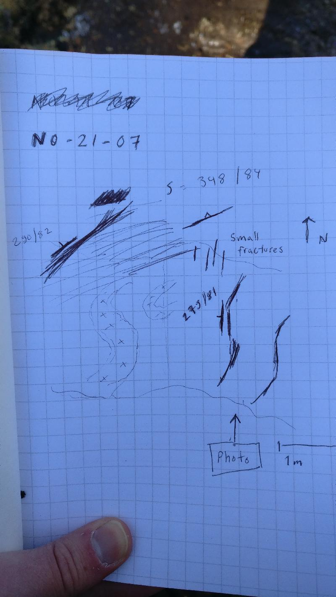
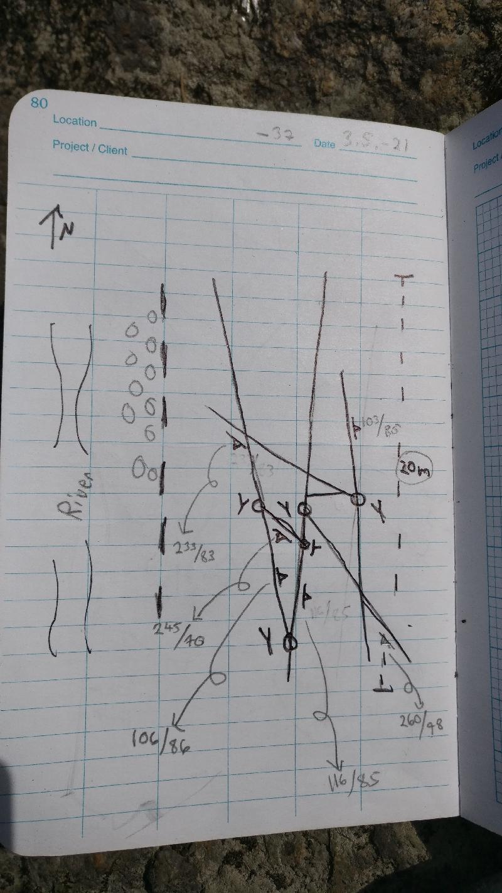

<!DOCTYPE html>
<head>    
    <meta http-equiv="content-type" content="text/html; charset=UTF-8" />
    
        <script>
            L_NO_TOUCH = false;
            L_DISABLE_3D = false;
        </script>
    
    <style>html, body {width: 100%;height: 100%;margin: 0;padding: 0;}</style>
    <style>#map {position:absolute;top:0;bottom:0;right:0;left:0;}</style>
    <script src="https://cdn.jsdelivr.net/npm/leaflet@1.6.0/dist/leaflet.js"></script>
    <script src="https://code.jquery.com/jquery-1.12.4.min.js"></script>
    <script src="https://maxcdn.bootstrapcdn.com/bootstrap/3.2.0/js/bootstrap.min.js"></script>
    <script src="https://cdnjs.cloudflare.com/ajax/libs/Leaflet.awesome-markers/2.0.2/leaflet.awesome-markers.js"></script>
    <link rel="stylesheet" href="https://cdn.jsdelivr.net/npm/leaflet@1.6.0/dist/leaflet.css"/>
    <link rel="stylesheet" href="https://maxcdn.bootstrapcdn.com/bootstrap/3.2.0/css/bootstrap.min.css"/>
    <link rel="stylesheet" href="https://maxcdn.bootstrapcdn.com/bootstrap/3.2.0/css/bootstrap-theme.min.css"/>
    <link rel="stylesheet" href="https://maxcdn.bootstrapcdn.com/font-awesome/4.6.3/css/font-awesome.min.css"/>
    <link rel="stylesheet" href="https://cdnjs.cloudflare.com/ajax/libs/Leaflet.awesome-markers/2.0.2/leaflet.awesome-markers.css"/>
    <link rel="stylesheet" href="https://cdn.jsdelivr.net/gh/python-visualization/folium/folium/templates/leaflet.awesome.rotate.min.css"/>
    <link rel="stylesheet" href="styles.css"/>
    
            <meta name="viewport" content="width=device-width,
                initial-scale=1.0, maximum-scale=1.0, user-scalable=no" />
            <style>
                #map_ab92d47ceffd48819057eba36d0f09e4 {
                    position: relative;
                    width: 100.0%;
                    height: 100.0%;
                    left: 0.0%;
                    top: 0.0%;
                }
            </style>
        
</head>
<body>    
    
            <div class="folium-map" id="map_ab92d47ceffd48819057eba36d0f09e4" ></div>
        
</body>
<script>    
    
            var map_ab92d47ceffd48819057eba36d0f09e4 = L.map(
                "map_ab92d47ceffd48819057eba36d0f09e4",
                {
                    center: [62.7142014, 22.24216498],
                    crs: L.CRS.EPSG3857,
                    zoom: 10,
                    zoomControl: true,
                    preferCanvas: false,
                }
            );

            

        
    
            var tile_layer_90fd4a5b6df848de8963b0ca8728f1ed = L.tileLayer(
                "https://{s}.tile.openstreetmap.org/{z}/{x}/{y}.png",
                {"attribution": "Data by \u0026copy; \u003ca href=\"http://openstreetmap.org\"\u003eOpenStreetMap\u003c/a\u003e, under \u003ca href=\"http://www.openstreetmap.org/copyright\"\u003eODbL\u003c/a\u003e.", "detectRetina": false, "maxNativeZoom": 18, "maxZoom": 18, "minZoom": 0, "noWrap": false, "opacity": 1, "subdomains": "abc", "tms": false}
            ).addTo(map_ab92d47ceffd48819057eba36d0f09e4);
        
    
            var marker_c42cfccb7c4e4c3a8af9e1b4e971d30d = L.marker(
                [62.70746425, 22.34853267],
                {}
            ).addTo(map_ab92d47ceffd48819057eba36d0f09e4);
        
    
            var icon_227136feb3dc42bcb73ab343781dc8fd = L.AwesomeMarkers.icon(
                {"extraClasses": "fa-rotate-115", "icon": "glyphicon-arrow-up", "iconColor": "white", "markerColor": "blue", "prefix": "glyphicon"}
            );
            marker_c42cfccb7c4e4c3a8af9e1b4e971d30d.setIcon(icon_227136feb3dc42bcb73ab343781dc8fd);
        
    
        var popup_a527e9d7557449f5b6ce7f5f757a34b5 = L.popup({"maxWidth": "100%"});

        
            var html_39982979efff41bfbe329699586fbcc4 = $(`<div id="html_39982979efff41bfbe329699586fbcc4" style="width: 100.0%; height: 100.0%;"><h3>NO-2021-1</h3> <h4>Planar Structures</h4> <table> <thead> <tr> <th align="right">DIP</th> <th align="right">DIRECTION_OF_DIP</th> <th align="left">STYPE_TEXT</th> <th align="left">FOL_TYPE_TEXT</th> </tr> </thead> <tbody> <tr> <td align="right">74</td> <td align="right">74</td> <td align="left">Foliation</td> <td align="left">Penetrative foliation</td> </tr> <tr> <td align="right">81</td> <td align="right">302</td> <td align="left">Fault</td> <td align="left"></td> </tr> <tr> <td align="right">80</td> <td align="right">30</td> <td align="left">Fault</td> <td align="left"></td> </tr> </tbody> </table> <h4>Linear Structures</h4> <table> <thead> <tr> <th align="right">DIRECTION</th> <th align="right">PLUNGE</th> <th align="left">STYPE_TEXT</th> </tr> </thead> <tbody> <tr> <td align="right">115</td> <td align="right">59</td> <td align="left">Lineation</td> </tr> </tbody> </table> <h4>Rock Observations</h4> <table> <thead> <tr> <th align="left">REMARKS</th> <th align="left">FIELD_NAME</th> </tr> </thead> <tbody> <tr> <td align="left"></td> <td align="left">Paragneiss</td> </tr> </tbody> </table> <h4>Observation remarks</h4> <p>Lohkosuuntia</p> <h4>Images</h4></div>`)[0];
            popup_a527e9d7557449f5b6ce7f5f757a34b5.setContent(html_39982979efff41bfbe329699586fbcc4);
        

        marker_c42cfccb7c4e4c3a8af9e1b4e971d30d.bindPopup(popup_a527e9d7557449f5b6ce7f5f757a34b5)
        ;

        
    
    
            marker_c42cfccb7c4e4c3a8af9e1b4e971d30d.bindTooltip(
                `<div>
                     NO-2021-1
                 </div>`,
                {"sticky": true}
            );
        
    
            var marker_85147d42b2b7440799ad581bf2634cbb = L.marker(
                [62.73067318, 22.37575849],
                {}
            ).addTo(map_ab92d47ceffd48819057eba36d0f09e4);
        
    
            var icon_ee42bd42365b47dca3e80f761082e362 = L.AwesomeMarkers.icon(
                {"extraClasses": "fa-rotate-0", "icon": "glyphicon-stop", "iconColor": "white", "markerColor": "lightgray", "prefix": "glyphicon"}
            );
            marker_85147d42b2b7440799ad581bf2634cbb.setIcon(icon_ee42bd42365b47dca3e80f761082e362);
        
    
        var popup_be7335db04b84c248309fb92c2f421ec = L.popup({"maxWidth": "100%"});

        
            var html_a8dacf99c5c5402b9999cb43c8f83f0d = $(`<div id="html_a8dacf99c5c5402b9999cb43c8f83f0d" style="width: 100.0%; height: 100.0%;"><h3>NO-2021-4</h3> <h4>Planar Structures</h4> <table> <thead> <tr> <th align="right">DIP</th> <th align="right">DIRECTION_OF_DIP</th> <th align="left">STYPE_TEXT</th> <th align="left">FOL_TYPE_TEXT</th> </tr> </thead> <tbody> <tr> <td align="right">1</td> <td align="right">93</td> <td align="left">Fault</td> <td align="left"></td> </tr> <tr> <td align="right">81</td> <td align="right">354</td> <td align="left">Foliation</td> <td align="left">Not applicable</td> </tr> <tr> <td align="right">84</td> <td align="right">81</td> <td align="left">Fault</td> <td align="left"></td> </tr> <tr> <td align="right">77</td> <td align="right">168</td> <td align="left">Fault</td> <td align="left"></td> </tr> </tbody> </table> <h4></h4> <h4></h4> <h4>Observation remarks</h4> <p>Sahalaitainen hylly, killegneissi, pegmatiittia, liuskeisuus kaatuilee</p> <h4>Images</h4> <p><a href="kapalo_imgs/NO-2021-4.k1@5916234659612036702.jpg"></a>Sahalaidat</p></div>`)[0];
            popup_be7335db04b84c248309fb92c2f421ec.setContent(html_a8dacf99c5c5402b9999cb43c8f83f0d);
        

        marker_85147d42b2b7440799ad581bf2634cbb.bindPopup(popup_be7335db04b84c248309fb92c2f421ec)
        ;

        
    
    
            marker_85147d42b2b7440799ad581bf2634cbb.bindTooltip(
                `<div>
                     NO-2021-4
                 </div>`,
                {"sticky": true}
            );
        
    
            var marker_bd076ebf189149ae81a66a9d1fd07336 = L.marker(
                [62.73093098, 22.3763802],
                {}
            ).addTo(map_ab92d47ceffd48819057eba36d0f09e4);
        
    
            var icon_a4b3858e5bb1403ca0be83bcaf4e4012 = L.AwesomeMarkers.icon(
                {"extraClasses": "fa-rotate-97", "icon": "glyphicon-arrow-up", "iconColor": "white", "markerColor": "blue", "prefix": "glyphicon"}
            );
            marker_bd076ebf189149ae81a66a9d1fd07336.setIcon(icon_a4b3858e5bb1403ca0be83bcaf4e4012);
        
    
        var popup_67aefe69e03444d496208eecc88e6101 = L.popup({"maxWidth": "100%"});

        
            var html_1dd157cae9dc4515b95ea44f11cecbb3 = $(`<div id="html_1dd157cae9dc4515b95ea44f11cecbb3" style="width: 100.0%; height: 100.0%;"><h3>NO-2021-5</h3> <h4>Planar Structures</h4> <table> <thead> <tr> <th align="right">DIP</th> <th align="right">DIRECTION_OF_DIP</th> <th align="left">STYPE_TEXT</th> <th align="left">FOL_TYPE_TEXT</th> </tr> </thead> <tbody> <tr> <td align="right">83</td> <td align="right">182</td> <td align="left">Foliation</td> <td align="left">Penetrative foliation</td> </tr> <tr> <td align="right">90</td> <td align="right">83</td> <td align="left">Fault</td> <td align="left"></td> </tr> <tr> <td align="right">83</td> <td align="right">182</td> <td align="left">Fault</td> <td align="left"></td> </tr> </tbody> </table> <h4>Linear Structures</h4> <table> <thead> <tr> <th align="right">DIRECTION</th> <th align="right">PLUNGE</th> <th align="left">STYPE_TEXT</th> </tr> </thead> <tbody> <tr> <td align="right">97</td> <td align="right">62</td> <td align="left">Lineation</td> </tr> </tbody> </table> <h4>Rock Observations</h4> <table> <thead> <tr> <th align="left">REMARKS</th> <th align="left">FIELD_NAME</th> </tr> </thead> <tbody> <tr> <td align="left">Granaattikiillegneissi, budinoitumista</td> <td align="left">Paragneiss</td> </tr> </tbody> </table> <h4>Observation remarks</h4> <h4>Images</h4> <p><a href="kapalo_imgs/NO-2021-5.k1@3137781352072277875.jpg"></a>Budinoitumista, lineaatio</p></div>`)[0];
            popup_67aefe69e03444d496208eecc88e6101.setContent(html_1dd157cae9dc4515b95ea44f11cecbb3);
        

        marker_bd076ebf189149ae81a66a9d1fd07336.bindPopup(popup_67aefe69e03444d496208eecc88e6101)
        ;

        
    
    
            marker_bd076ebf189149ae81a66a9d1fd07336.bindTooltip(
                `<div>
                     NO-2021-5
                 </div>`,
                {"sticky": true}
            );
        
    
            var marker_a2cb08f9116a47b8a4e8c4f097c70d9f = L.marker(
                [62.7309836, 22.37820031],
                {}
            ).addTo(map_ab92d47ceffd48819057eba36d0f09e4);
        
    
            var icon_0c8ace63f92041a09e70485427ab0e91 = L.AwesomeMarkers.icon(
                {"extraClasses": "fa-rotate-104", "icon": "glyphicon-arrow-up", "iconColor": "white", "markerColor": "blue", "prefix": "glyphicon"}
            );
            marker_a2cb08f9116a47b8a4e8c4f097c70d9f.setIcon(icon_0c8ace63f92041a09e70485427ab0e91);
        
    
        var popup_dc64356a008040f989b0f7dc7482c9f6 = L.popup({"maxWidth": "100%"});

        
            var html_dd98ad9a7ada457484143b97b4e60b7e = $(`<div id="html_dd98ad9a7ada457484143b97b4e60b7e" style="width: 100.0%; height: 100.0%;"><h3>NO-2021-6</h3> <h4>Planar Structures</h4> <table> <thead> <tr> <th align="right">DIP</th> <th align="right">DIRECTION_OF_DIP</th> <th align="left">STYPE_TEXT</th> <th align="left">FOL_TYPE_TEXT</th> </tr> </thead> <tbody> <tr> <td align="right">12</td> <td align="right">302</td> <td align="left">Fault</td> <td align="left"></td> </tr> </tbody> </table> <h4>Linear Structures</h4> <table> <thead> <tr> <th align="right">DIRECTION</th> <th align="right">PLUNGE</th> <th align="left">STYPE_TEXT</th> </tr> </thead> <tbody> <tr> <td align="right">104</td> <td align="right">50</td> <td align="left">Lineation</td> </tr> </tbody> </table> <h4>Rock Observations</h4> <table> <thead> <tr> <th align="left">REMARKS</th> <th align="left">FIELD_NAME</th> </tr> </thead> <tbody> <tr> <td align="left">Granaattikiillegneissi</td> <td align="left">Paragneiss</td> </tr> </tbody> </table> <h4>Observation remarks</h4> <p>Granaattikiillegneissi, hylly, raot päättyy hieman pegmatiittiin</p> <h4>Images</h4> <p><a href="kapalo_imgs/NO-2021-6.k1@7344405924075572820.jpg"></a>Pietu piirros, karttakuva</p></div>`)[0];
            popup_dc64356a008040f989b0f7dc7482c9f6.setContent(html_dd98ad9a7ada457484143b97b4e60b7e);
        

        marker_a2cb08f9116a47b8a4e8c4f097c70d9f.bindPopup(popup_dc64356a008040f989b0f7dc7482c9f6)
        ;

        
    
    
            marker_a2cb08f9116a47b8a4e8c4f097c70d9f.bindTooltip(
                `<div>
                     NO-2021-6
                 </div>`,
                {"sticky": true}
            );
        
    
            var marker_ae4402da74b14d71a7cad609b820a76e = L.marker(
                [62.72968585, 22.37586387],
                {}
            ).addTo(map_ab92d47ceffd48819057eba36d0f09e4);
        
    
            var icon_13fbb9b7a0164e04adad94a50fc3dafe = L.AwesomeMarkers.icon(
                {"extraClasses": "fa-rotate-0", "icon": "glyphicon-stop", "iconColor": "white", "markerColor": "lightgray", "prefix": "glyphicon"}
            );
            marker_ae4402da74b14d71a7cad609b820a76e.setIcon(icon_13fbb9b7a0164e04adad94a50fc3dafe);
        
    
        var popup_dd8334ec945d458db673aee2b0316814 = L.popup({"maxWidth": "100%"});

        
            var html_d668d9978b18400b9472f9ceb1038e62 = $(`<div id="html_d668d9978b18400b9472f9ceb1038e62" style="width: 100.0%; height: 100.0%;"><h3>NO-2021-7</h3> <h4>Planar Structures</h4> <table> <thead> <tr> <th align="right">DIP</th> <th align="right">DIRECTION_OF_DIP</th> <th align="left">STYPE_TEXT</th> <th align="left">FOL_TYPE_TEXT</th> </tr> </thead> <tbody> <tr> <td align="right">82</td> <td align="right">290</td> <td align="left">Fault</td> <td align="left"></td> </tr> <tr> <td align="right">84</td> <td align="right">348</td> <td align="left">Foliation</td> <td align="left">Penetrative foliation</td> </tr> </tbody> </table> <h4></h4> <h4>Rock Observations</h4> <table> <thead> <tr> <th align="left">REMARKS</th> <th align="left">FIELD_NAME</th> </tr> </thead> <tbody> <tr> <td align="left"></td> <td align="left">Paragneiss</td> </tr> </tbody> </table> <h4>Observation remarks</h4> <p>Rakoillut gneissi, mahd. en echelon rakoja</p> <h4>Images</h4> <p><a href="kapalo_imgs/NO-2021-7.k1@95815509244011798.jpg"></a>Rajoja <a href="kapalo_imgs/NO-2021-7.k2@6266797166284952915.jpg"></a>Eemin piirros</p></div>`)[0];
            popup_dd8334ec945d458db673aee2b0316814.setContent(html_d668d9978b18400b9472f9ceb1038e62);
        

        marker_ae4402da74b14d71a7cad609b820a76e.bindPopup(popup_dd8334ec945d458db673aee2b0316814)
        ;

        
    
    
            marker_ae4402da74b14d71a7cad609b820a76e.bindTooltip(
                `<div>
                     NO-2021-7
                 </div>`,
                {"sticky": true}
            );
        
    
            var marker_f1c8a1cfccce4974bc179a593880f814 = L.marker(
                [62.72673837, 22.37202135],
                {}
            ).addTo(map_ab92d47ceffd48819057eba36d0f09e4);
        
    
            var icon_eabf909c229b4260bc0fddb99214078e = L.AwesomeMarkers.icon(
                {"extraClasses": "fa-rotate-0", "icon": "glyphicon-stop", "iconColor": "white", "markerColor": "lightgray", "prefix": "glyphicon"}
            );
            marker_f1c8a1cfccce4974bc179a593880f814.setIcon(icon_eabf909c229b4260bc0fddb99214078e);
        
    
        var popup_f412ff46f0144e91a636b46fafaaf5e0 = L.popup({"maxWidth": "100%"});

        
            var html_64572807cbaa42cf8c0b10acc03e82fd = $(`<div id="html_64572807cbaa42cf8c0b10acc03e82fd" style="width: 100.0%; height: 100.0%;"><h3>NO-2021-8</h3> <h4>Planar Structures</h4> <table> <thead> <tr> <th align="right">DIP</th> <th align="right">DIRECTION_OF_DIP</th> <th align="left">STYPE_TEXT</th> <th align="left">FOL_TYPE_TEXT</th> </tr> </thead> <tbody> <tr> <td align="right">68</td> <td align="right">105</td> <td align="left">Foliation</td> <td align="left">Penetrative foliation</td> </tr> <tr> <td align="right">81</td> <td align="right">301</td> <td align="left">Fault</td> <td align="left"></td> </tr> <tr> <td align="right">68</td> <td align="right">105</td> <td align="left">Fault</td> <td align="left"></td> </tr> </tbody> </table> <h4></h4> <h4></h4> <h4>Observation remarks</h4> <p>Seteittäistä rakoilua, rakoilu kaartuileva liuskeisuuden suunnassa</p> <h4>Images</h4> <p><a href="kapalo_imgs/NO-2021-8.k1@1890088495603657677.jpg"></a>Kaartuileva rakoilu liuskeisuuden kanssa <a href="kapalo_imgs/NO-2021-8.k2@6651023226741507108.jpg"></a>Rakoilu akselitason suunnassa <a href="kapalo_imgs/NO-2021-8.k3@7144496857566832860.jpg">('Hyllyrakoilu, vallitseva lokaalisti', 'NO-2021-8.k3')</a> <a href="kapalo_imgs/NO-2021-8.k4@2076901861952633935.jpg">('Eemin piirros, noin 5 m paljastumaleveys', 'NO-2021-8.k4')</a></p></div>`)[0];
            popup_f412ff46f0144e91a636b46fafaaf5e0.setContent(html_64572807cbaa42cf8c0b10acc03e82fd);
        

        marker_f1c8a1cfccce4974bc179a593880f814.bindPopup(popup_f412ff46f0144e91a636b46fafaaf5e0)
        ;

        
    
    
            marker_f1c8a1cfccce4974bc179a593880f814.bindTooltip(
                `<div>
                     NO-2021-8
                 </div>`,
                {"sticky": true}
            );
        
    
            var marker_17b170fbf09c44ba92d527988f23c8de = L.marker(
                [62.72496681, 22.37214781],
                {}
            ).addTo(map_ab92d47ceffd48819057eba36d0f09e4);
        
    
            var icon_78c146e99d97490481ce261df1a3d0e1 = L.AwesomeMarkers.icon(
                {"extraClasses": "fa-rotate-110", "icon": "glyphicon-arrow-up", "iconColor": "white", "markerColor": "blue", "prefix": "glyphicon"}
            );
            marker_17b170fbf09c44ba92d527988f23c8de.setIcon(icon_78c146e99d97490481ce261df1a3d0e1);
        
    
        var popup_da0b26be553e42b390963e0744d8809c = L.popup({"maxWidth": "100%"});

        
            var html_b1351669bf4c4c3e89e02629e56dcd04 = $(`<div id="html_b1351669bf4c4c3e89e02629e56dcd04" style="width: 100.0%; height: 100.0%;"><h3>NO-2021-9</h3> <h4>Planar Structures</h4> <table> <thead> <tr> <th align="right">DIP</th> <th align="right">DIRECTION_OF_DIP</th> <th align="left">STYPE_TEXT</th> <th align="left">FOL_TYPE_TEXT</th> </tr> </thead> <tbody> <tr> <td align="right">78</td> <td align="right">57</td> <td align="left">Fault</td> <td align="left"></td> </tr> <tr> <td align="right">87</td> <td align="right">283</td> <td align="left">Fault</td> <td align="left"></td> </tr> <tr> <td align="right">62</td> <td align="right">81</td> <td align="left">Foliation</td> <td align="left">Penetrative foliation</td> </tr> </tbody> </table> <h4>Linear Structures</h4> <table> <thead> <tr> <th align="right">DIRECTION</th> <th align="right">PLUNGE</th> <th align="left">STYPE_TEXT</th> </tr> </thead> <tbody> <tr> <td align="right">110</td> <td align="right">59</td> <td align="left">Lineation</td> </tr> </tbody> </table> <h4></h4> <h4>Observation remarks</h4> <p>Granaattikiillegneissi</p> <h4>Images</h4></div>`)[0];
            popup_da0b26be553e42b390963e0744d8809c.setContent(html_b1351669bf4c4c3e89e02629e56dcd04);
        

        marker_17b170fbf09c44ba92d527988f23c8de.bindPopup(popup_da0b26be553e42b390963e0744d8809c)
        ;

        
    
    
            marker_17b170fbf09c44ba92d527988f23c8de.bindTooltip(
                `<div>
                     NO-2021-9
                 </div>`,
                {"sticky": true}
            );
        
    
            var marker_6887d8a0071346e092f97b9347f56f33 = L.marker(
                [62.70508462, 22.38162386],
                {}
            ).addTo(map_ab92d47ceffd48819057eba36d0f09e4);
        
    
            var icon_1710e3df7cc94ae78cd35c6db1f29663 = L.AwesomeMarkers.icon(
                {"extraClasses": "fa-rotate-0", "icon": "glyphicon-stop", "iconColor": "white", "markerColor": "lightgray", "prefix": "glyphicon"}
            );
            marker_6887d8a0071346e092f97b9347f56f33.setIcon(icon_1710e3df7cc94ae78cd35c6db1f29663);
        
    
        var popup_0c871a1536e1458e9addd913f4821951 = L.popup({"maxWidth": "100%"});

        
            var html_7036990535c94b33abec04c2502cf8f8 = $(`<div id="html_7036990535c94b33abec04c2502cf8f8" style="width: 100.0%; height: 100.0%;"><h3>NO-2021-10</h3> <h4>Planar Structures</h4> <table> <thead> <tr> <th align="right">DIP</th> <th align="right">DIRECTION_OF_DIP</th> <th align="left">STYPE_TEXT</th> <th align="left">FOL_TYPE_TEXT</th> </tr> </thead> <tbody> <tr> <td align="right">85</td> <td align="right">117</td> <td align="left">Fault</td> <td align="left"></td> </tr> <tr> <td align="right">79</td> <td align="right">179</td> <td align="left">Foliation</td> <td align="left">Not applicable</td> </tr> <tr> <td align="right">79</td> <td align="right">179</td> <td align="left">Fault</td> <td align="left"></td> </tr> <tr> <td align="right">81</td> <td align="right">130</td> <td align="left">Fault</td> <td align="left"></td> </tr> </tbody> </table> <h4></h4> <h4>Rock Observations</h4> <table> <thead> <tr> <th align="left">REMARKS</th> <th align="left">FIELD_NAME</th> </tr> </thead> <tbody> <tr> <td align="left">Migmatiittiutunut granaattikiillegneissi</td> <td align="left">Paragneiss</td> </tr> </tbody> </table> <h4>Observation remarks</h4> <p>Heikosti rakoillut</p> <h4>Images</h4> <p><a href="kapalo_imgs/NO-2021-10.k1@8390182995157057528.jpg"></a>Eemin piirros, abutting fractures</p></div>`)[0];
            popup_0c871a1536e1458e9addd913f4821951.setContent(html_7036990535c94b33abec04c2502cf8f8);
        

        marker_6887d8a0071346e092f97b9347f56f33.bindPopup(popup_0c871a1536e1458e9addd913f4821951)
        ;

        
    
    
            marker_6887d8a0071346e092f97b9347f56f33.bindTooltip(
                `<div>
                     NO-2021-10
                 </div>`,
                {"sticky": true}
            );
        
    
            var marker_9c77faed4ad5474fae60a781b7a45699 = L.marker(
                [62.70247176, 22.38961982],
                {}
            ).addTo(map_ab92d47ceffd48819057eba36d0f09e4);
        
    
            var icon_b485620912054e0393878c8b72a9d5e0 = L.AwesomeMarkers.icon(
                {"extraClasses": "fa-rotate-0", "icon": "glyphicon-stop", "iconColor": "white", "markerColor": "lightgray", "prefix": "glyphicon"}
            );
            marker_9c77faed4ad5474fae60a781b7a45699.setIcon(icon_b485620912054e0393878c8b72a9d5e0);
        
    
        var popup_aeb43b3f8c6f47e086a621e622817343 = L.popup({"maxWidth": "100%"});

        
            var html_a848af79edae464ebc005895dbbca713 = $(`<div id="html_a848af79edae464ebc005895dbbca713" style="width: 100.0%; height: 100.0%;"><h3>NO-2021-11</h3> <h4>Planar Structures</h4> <table> <thead> <tr> <th align="right">DIP</th> <th align="right">DIRECTION_OF_DIP</th> <th align="left">STYPE_TEXT</th> <th align="left">FOL_TYPE_TEXT</th> </tr> </thead> <tbody> <tr> <td align="right">78</td> <td align="right">112</td> <td align="left">Foliation</td> <td align="left">Not applicable</td> </tr> <tr> <td align="right">82</td> <td align="right">58</td> <td align="left">Fault</td> <td align="left"></td> </tr> </tbody> </table> <h4></h4> <h4></h4> <h4>Observation remarks</h4> <p>Same abutting relationships as 10</p> <h4>Images</h4> <p><a href="kapalo_imgs/NO-2021-11.k1@981634463500135283.jpg"></a>Abutting relationships, Nikolas</p></div>`)[0];
            popup_aeb43b3f8c6f47e086a621e622817343.setContent(html_a848af79edae464ebc005895dbbca713);
        

        marker_9c77faed4ad5474fae60a781b7a45699.bindPopup(popup_aeb43b3f8c6f47e086a621e622817343)
        ;

        
    
    
            marker_9c77faed4ad5474fae60a781b7a45699.bindTooltip(
                `<div>
                     NO-2021-11
                 </div>`,
                {"sticky": true}
            );
        
    
            var marker_16370b16978649ef81b0bb518aaa6fab = L.marker(
                [62.69900734, 22.36908579],
                {}
            ).addTo(map_ab92d47ceffd48819057eba36d0f09e4);
        
    
            var icon_f2211372de1147c5b67a1392fca44bc3 = L.AwesomeMarkers.icon(
                {"extraClasses": "fa-rotate-0", "icon": "glyphicon-stop", "iconColor": "white", "markerColor": "lightgray", "prefix": "glyphicon"}
            );
            marker_16370b16978649ef81b0bb518aaa6fab.setIcon(icon_f2211372de1147c5b67a1392fca44bc3);
        
    
        var popup_3656db7e5256479f936780a612a2592d = L.popup({"maxWidth": "100%"});

        
            var html_4d5f7de8b3834957b85293c12a554bae = $(`<div id="html_4d5f7de8b3834957b85293c12a554bae" style="width: 100.0%; height: 100.0%;"><h3>NO-2021-12</h3> <h4>Planar Structures</h4> <table> <thead> <tr> <th align="right">DIP</th> <th align="right">DIRECTION_OF_DIP</th> <th align="left">STYPE_TEXT</th> <th align="left">FOL_TYPE_TEXT</th> </tr> </thead> <tbody> <tr> <td align="right">71</td> <td align="right">70</td> <td align="left">Foliation</td> <td align="left">Penetrative foliation</td> </tr> <tr> <td align="right">67</td> <td align="right">68</td> <td align="left">Fault</td> <td align="left"></td> </tr> <tr> <td align="right">63</td> <td align="right">104</td> <td align="left">Layering</td> <td align="left"></td> </tr> </tbody> </table> <h4></h4> <h4>Rock Observations</h4> <table> <thead> <tr> <th align="left">REMARKS</th> <th align="left">FIELD_NAME</th> </tr> </thead> <tbody> <tr> <td align="left">Psammiittinen paragneissi</td> <td align="left">Paragneiss</td> </tr> </tbody> </table> <h4>Observation remarks</h4> <p>Psammiittinen granaattikiillegneissi tyyppipaljastuma</p> <h4>Images</h4> <p><a href="kapalo_imgs/NO-2021-12.k1@3416277646723284354.jpg"></a>Tyyppipaljastuma</p></div>`)[0];
            popup_3656db7e5256479f936780a612a2592d.setContent(html_4d5f7de8b3834957b85293c12a554bae);
        

        marker_16370b16978649ef81b0bb518aaa6fab.bindPopup(popup_3656db7e5256479f936780a612a2592d)
        ;

        
    
    
            marker_16370b16978649ef81b0bb518aaa6fab.bindTooltip(
                `<div>
                     NO-2021-12
                 </div>`,
                {"sticky": true}
            );
        
    
            var marker_464fe7bdbd654ec0b6fbfc218f4cdafc = L.marker(
                [62.68172665, 22.35346898],
                {}
            ).addTo(map_ab92d47ceffd48819057eba36d0f09e4);
        
    
            var icon_783a55a3b1b44e79814c61f4d6350caa = L.AwesomeMarkers.icon(
                {"extraClasses": "fa-rotate-0", "icon": "glyphicon-stop", "iconColor": "white", "markerColor": "lightgray", "prefix": "glyphicon"}
            );
            marker_464fe7bdbd654ec0b6fbfc218f4cdafc.setIcon(icon_783a55a3b1b44e79814c61f4d6350caa);
        
    
        var popup_2e933280e4364b07a470aadd8f9ae583 = L.popup({"maxWidth": "100%"});

        
            var html_7729c656dbbf42a5bcf1d3a9b51a6d0b = $(`<div id="html_7729c656dbbf42a5bcf1d3a9b51a6d0b" style="width: 100.0%; height: 100.0%;"><h3>NO-2021-13</h3> <h4>Planar Structures</h4> <table> <thead> <tr> <th align="right">DIP</th> <th align="right">DIRECTION_OF_DIP</th> <th align="left">STYPE_TEXT</th> <th align="left">FOL_TYPE_TEXT</th> </tr> </thead> <tbody> <tr> <td align="right">36</td> <td align="right">155</td> <td align="left">Fault</td> <td align="left"></td> </tr> <tr> <td align="right">38</td> <td align="right">158</td> <td align="left">Fault</td> <td align="left"></td> </tr> <tr> <td align="right">84</td> <td align="right">138</td> <td align="left">Foliation</td> <td align="left">Not applicable</td> </tr> </tbody> </table> <h4></h4> <h4>Rock Observations</h4> <table> <thead> <tr> <th align="left">REMARKS</th> <th align="left">FIELD_NAME</th> </tr> </thead> <tbody> <tr> <td align="left">Granaattikiillegneissi</td> <td align="left">Paragneiss</td> </tr> </tbody> </table> <h4>Observation remarks</h4> <p>Lohkoinen kallio, granaattikiillegneissi, vallitseva lohkosuunta, migmatiitin takia massiivinen, liuskeisuus vaihtelee vahvasti</p> <h4>Images</h4></div>`)[0];
            popup_2e933280e4364b07a470aadd8f9ae583.setContent(html_7729c656dbbf42a5bcf1d3a9b51a6d0b);
        

        marker_464fe7bdbd654ec0b6fbfc218f4cdafc.bindPopup(popup_2e933280e4364b07a470aadd8f9ae583)
        ;

        
    
    
            marker_464fe7bdbd654ec0b6fbfc218f4cdafc.bindTooltip(
                `<div>
                     NO-2021-13
                 </div>`,
                {"sticky": true}
            );
        
    
            var marker_a714bbec2de344eaa290fd4d00d2548b = L.marker(
                [62.68124027, 22.35494534],
                {}
            ).addTo(map_ab92d47ceffd48819057eba36d0f09e4);
        
    
            var icon_e0a1a149088847dfb2ce81007d6f1657 = L.AwesomeMarkers.icon(
                {"extraClasses": "fa-rotate-59", "icon": "glyphicon-arrow-up", "iconColor": "white", "markerColor": "blue", "prefix": "glyphicon"}
            );
            marker_a714bbec2de344eaa290fd4d00d2548b.setIcon(icon_e0a1a149088847dfb2ce81007d6f1657);
        
    
        var popup_4954c4112828482e9f0859a582b17c1e = L.popup({"maxWidth": "100%"});

        
            var html_dd915df7a30a44d98475fc8638d3a465 = $(`<div id="html_dd915df7a30a44d98475fc8638d3a465" style="width: 100.0%; height: 100.0%;"><h3>NO-2021-14</h3> <h4>Planar Structures</h4> <table> <thead> <tr> <th align="right">DIP</th> <th align="right">DIRECTION_OF_DIP</th> <th align="left">STYPE_TEXT</th> <th align="left">FOL_TYPE_TEXT</th> </tr> </thead> <tbody> <tr> <td align="right">52</td> <td align="right">2</td> <td align="left">Foliation</td> <td align="left">Not applicable</td> </tr> </tbody> </table> <h4>Linear Structures</h4> <table> <thead> <tr> <th align="right">DIRECTION</th> <th align="right">PLUNGE</th> <th align="left">STYPE_TEXT</th> </tr> </thead> <tbody> <tr> <td align="right">59</td> <td align="right">34</td> <td align="left">Fold axel</td> </tr> </tbody> </table> <h4>Rock Observations</h4> <table> <thead> <tr> <th align="left">REMARKS</th> <th align="left">FIELD_NAME</th> </tr> </thead> <tbody> <tr> <td align="left">Granaattikiillegneissi</td> <td align="left">Paragneiss</td> </tr> </tbody> </table> <h4>Observation remarks</h4> <p>Poimuttunut granaattikiillegneissi, migmatiittia paikoittain vaihdellen, poimuttunut liuskeisuus</p> <h4>Images</h4> <p><a href="kapalo_imgs/NO-2021-14.k1@4996106511946856627.jpg"></a>Sillimaniittipoimutus</p></div>`)[0];
            popup_4954c4112828482e9f0859a582b17c1e.setContent(html_dd915df7a30a44d98475fc8638d3a465);
        

        marker_a714bbec2de344eaa290fd4d00d2548b.bindPopup(popup_4954c4112828482e9f0859a582b17c1e)
        ;

        
    
    
            marker_a714bbec2de344eaa290fd4d00d2548b.bindTooltip(
                `<div>
                     NO-2021-14
                 </div>`,
                {"sticky": true}
            );
        
    
            var marker_c5dd6121fdf149fb9ee8bda1653f78d2 = L.marker(
                [62.68261503, 22.35341122],
                {}
            ).addTo(map_ab92d47ceffd48819057eba36d0f09e4);
        
    
            var icon_ce1416e08f714cfd8a95bec22d3abda0 = L.AwesomeMarkers.icon(
                {"extraClasses": "fa-rotate-0", "icon": "glyphicon-stop", "iconColor": "white", "markerColor": "lightgray", "prefix": "glyphicon"}
            );
            marker_c5dd6121fdf149fb9ee8bda1653f78d2.setIcon(icon_ce1416e08f714cfd8a95bec22d3abda0);
        
    
        var popup_f2fc2d30c12a47bba0ca1b27f2960e46 = L.popup({"maxWidth": "100%"});

        
            var html_0150736f85c9432c843aff0d473690a1 = $(`<div id="html_0150736f85c9432c843aff0d473690a1" style="width: 100.0%; height: 100.0%;"><h3>NO-2021-15</h3> <h4>Planar Structures</h4> <table> <thead> <tr> <th align="right">DIP</th> <th align="right">DIRECTION_OF_DIP</th> <th align="left">STYPE_TEXT</th> <th align="left">FOL_TYPE_TEXT</th> </tr> </thead> <tbody> <tr> <td align="right">86</td> <td align="right">208</td> <td align="left">Fault</td> <td align="left"></td> </tr> <tr> <td align="right">89</td> <td align="right">41</td> <td align="left">Fault</td> <td align="left"></td> </tr> <tr> <td align="right">79</td> <td align="right">21</td> <td align="left">Fault</td> <td align="left"></td> </tr> <tr> <td align="right">82</td> <td align="right">320</td> <td align="left">Foliation</td> <td align="left">Not applicable</td> </tr> </tbody> </table> <h4></h4> <h4>Rock Observations</h4> <table> <thead> <tr> <th align="left">REMARKS</th> <th align="left">FIELD_NAME</th> </tr> </thead> <tbody> <tr> <td align="left"></td> <td align="left">Paragneiss</td> </tr> </tbody> </table> <h4>Observation remarks</h4> <p>Hajanaisia lohkosuuntia, ei vallitsevaa, heikko foliaatio</p> <h4>Images</h4></div>`)[0];
            popup_f2fc2d30c12a47bba0ca1b27f2960e46.setContent(html_0150736f85c9432c843aff0d473690a1);
        

        marker_c5dd6121fdf149fb9ee8bda1653f78d2.bindPopup(popup_f2fc2d30c12a47bba0ca1b27f2960e46)
        ;

        
    
    
            marker_c5dd6121fdf149fb9ee8bda1653f78d2.bindTooltip(
                `<div>
                     NO-2021-15
                 </div>`,
                {"sticky": true}
            );
        
    
            var marker_36d6be01fdf34ac784719d98512c9952 = L.marker(
                [62.69793499, 22.41906438],
                {}
            ).addTo(map_ab92d47ceffd48819057eba36d0f09e4);
        
    
            var icon_b837f48c1c6e4fec8ddd9415ae673c7e = L.AwesomeMarkers.icon(
                {"extraClasses": "fa-rotate-138", "icon": "glyphicon-arrow-up", "iconColor": "white", "markerColor": "blue", "prefix": "glyphicon"}
            );
            marker_36d6be01fdf34ac784719d98512c9952.setIcon(icon_b837f48c1c6e4fec8ddd9415ae673c7e);
        
    
        var popup_cbe9e178ee8b48eeb879f2ef743c8417 = L.popup({"maxWidth": "100%"});

        
            var html_50b67055136d46409a6ebf93873df473 = $(`<div id="html_50b67055136d46409a6ebf93873df473" style="width: 100.0%; height: 100.0%;"><h3>NO-2021-16</h3> <h4>Planar Structures</h4> <table> <thead> <tr> <th align="right">DIP</th> <th align="right">DIRECTION_OF_DIP</th> <th align="left">STYPE_TEXT</th> <th align="left">FOL_TYPE_TEXT</th> </tr> </thead> <tbody> <tr> <td align="right">89</td> <td align="right">60</td> <td align="left">Foliation</td> <td align="left">Penetrative foliation</td> </tr> <tr> <td align="right">81</td> <td align="right">196</td> <td align="left">Fault</td> <td align="left"></td> </tr> </tbody> </table> <h4>Linear Structures</h4> <table> <thead> <tr> <th align="right">DIRECTION</th> <th align="right">PLUNGE</th> <th align="left">STYPE_TEXT</th> </tr> </thead> <tbody> <tr> <td align="right">138</td> <td align="right">59</td> <td align="left">Lineation</td> </tr> </tbody> </table> <h4>Rock Observations</h4> <table> <thead> <tr> <th align="left">REMARKS</th> <th align="left">FIELD_NAME</th> </tr> </thead> <tbody> <tr> <td align="left">Granaattikiillegneissi</td> <td align="left">Paragneiss</td> </tr> </tbody> </table> <h4>Observation remarks</h4> <p>Stromaattinen migmatiitti, granaattikiillegneissi, liuskeisuus poimuttunut/häiriintynyt migmatiitista, P21=0</p> <h4>Images</h4></div>`)[0];
            popup_cbe9e178ee8b48eeb879f2ef743c8417.setContent(html_50b67055136d46409a6ebf93873df473);
        

        marker_36d6be01fdf34ac784719d98512c9952.bindPopup(popup_cbe9e178ee8b48eeb879f2ef743c8417)
        ;

        
    
    
            marker_36d6be01fdf34ac784719d98512c9952.bindTooltip(
                `<div>
                     NO-2021-16
                 </div>`,
                {"sticky": true}
            );
        
    
            var marker_fbbb7501fad94e36a45eaabd4767ad49 = L.marker(
                [62.69465257, 22.41675793],
                {}
            ).addTo(map_ab92d47ceffd48819057eba36d0f09e4);
        
    
            var icon_4f482eddfa674b72b9d24333a4ac8881 = L.AwesomeMarkers.icon(
                {"extraClasses": "fa-rotate-134", "icon": "glyphicon-arrow-up", "iconColor": "white", "markerColor": "blue", "prefix": "glyphicon"}
            );
            marker_fbbb7501fad94e36a45eaabd4767ad49.setIcon(icon_4f482eddfa674b72b9d24333a4ac8881);
        
    
        var popup_ee67554a80504ab49a148a41cf509771 = L.popup({"maxWidth": "100%"});

        
            var html_8241018118e44a459637380d062b79ae = $(`<div id="html_8241018118e44a459637380d062b79ae" style="width: 100.0%; height: 100.0%;"><h3>NO-2021-17</h3> <h4>Planar Structures</h4> <table> <thead> <tr> <th align="right">DIP</th> <th align="right">DIRECTION_OF_DIP</th> <th align="left">STYPE_TEXT</th> <th align="left">FOL_TYPE_TEXT</th> </tr> </thead> <tbody> <tr> <td align="right">82</td> <td align="right">168</td> <td align="left">Fault</td> <td align="left"></td> </tr> <tr> <td align="right">80</td> <td align="right">80</td> <td align="left">Foliation</td> <td align="left">Penetrative foliation</td> </tr> <tr> <td align="right">80</td> <td align="right">80</td> <td align="left">Fault</td> <td align="left"></td> </tr> <tr> <td align="right">83</td> <td align="right">115</td> <td align="left">Fault</td> <td align="left"></td> </tr> </tbody> </table> <h4>Linear Structures</h4> <table> <thead> <tr> <th align="right">DIRECTION</th> <th align="right">PLUNGE</th> <th align="left">STYPE_TEXT</th> </tr> </thead> <tbody> <tr> <td align="right">134</td> <td align="right">66</td> <td align="left">Lineation</td> </tr> </tbody> </table> <h4>Rock Observations</h4> <table> <thead> <tr> <th align="left">REMARKS</th> <th align="left">FIELD_NAME</th> </tr> </thead> <tbody> <tr> <td align="left">Granaattikiillegneissi</td> <td align="left">Paragneiss</td> </tr> </tbody> </table> <h4>Observation remarks</h4> <p>Granaattikiillegneissi, metateksiitti, heikosti rakoillut</p> <h4>Images</h4></div>`)[0];
            popup_ee67554a80504ab49a148a41cf509771.setContent(html_8241018118e44a459637380d062b79ae);
        

        marker_fbbb7501fad94e36a45eaabd4767ad49.bindPopup(popup_ee67554a80504ab49a148a41cf509771)
        ;

        
    
    
            marker_fbbb7501fad94e36a45eaabd4767ad49.bindTooltip(
                `<div>
                     NO-2021-17
                 </div>`,
                {"sticky": true}
            );
        
    
            var marker_ebb1bb0888a54afca79a6f3a08c245c4 = L.marker(
                [62.6869695, 22.40595872],
                {}
            ).addTo(map_ab92d47ceffd48819057eba36d0f09e4);
        
    
            var icon_2234fc2f46a04864855af0800b93e8f4 = L.AwesomeMarkers.icon(
                {"extraClasses": "fa-rotate-142", "icon": "glyphicon-arrow-up", "iconColor": "white", "markerColor": "blue", "prefix": "glyphicon"}
            );
            marker_ebb1bb0888a54afca79a6f3a08c245c4.setIcon(icon_2234fc2f46a04864855af0800b93e8f4);
        
    
        var popup_c59b4df28d4d45fca0f6b11c9c9d6c3f = L.popup({"maxWidth": "100%"});

        
            var html_a4c5db5321574fde8d25542ab77be7fd = $(`<div id="html_a4c5db5321574fde8d25542ab77be7fd" style="width: 100.0%; height: 100.0%;"><h3>NO-2021-18</h3> <h4>Planar Structures</h4> <table> <thead> <tr> <th align="right">DIP</th> <th align="right">DIRECTION_OF_DIP</th> <th align="left">STYPE_TEXT</th> <th align="left">FOL_TYPE_TEXT</th> </tr> </thead> <tbody> <tr> <td align="right">79</td> <td align="right">103</td> <td align="left">Foliation</td> <td align="left">Penetrative foliation</td> </tr> </tbody> </table> <h4>Linear Structures</h4> <table> <thead> <tr> <th align="right">DIRECTION</th> <th align="right">PLUNGE</th> <th align="left">STYPE_TEXT</th> </tr> </thead> <tbody> <tr> <td align="right">142</td> <td align="right">68</td> <td align="left">Lineation</td> </tr> </tbody> </table> <h4></h4> <h4>Observation remarks</h4> <p>Granaattikiillegneissi, </p> <h4>Images</h4></div>`)[0];
            popup_c59b4df28d4d45fca0f6b11c9c9d6c3f.setContent(html_a4c5db5321574fde8d25542ab77be7fd);
        

        marker_ebb1bb0888a54afca79a6f3a08c245c4.bindPopup(popup_c59b4df28d4d45fca0f6b11c9c9d6c3f)
        ;

        
    
    
            marker_ebb1bb0888a54afca79a6f3a08c245c4.bindTooltip(
                `<div>
                     NO-2021-18
                 </div>`,
                {"sticky": true}
            );
        
    
            var marker_87b3c08ab2c04ea7b7b75b721d00f393 = L.marker(
                [62.68832002, 22.41222207],
                {}
            ).addTo(map_ab92d47ceffd48819057eba36d0f09e4);
        
    
            var icon_47daa016f463430694dd6f79d4e2ed3c = L.AwesomeMarkers.icon(
                {"extraClasses": "fa-rotate-0", "icon": "glyphicon-stop", "iconColor": "white", "markerColor": "lightgray", "prefix": "glyphicon"}
            );
            marker_87b3c08ab2c04ea7b7b75b721d00f393.setIcon(icon_47daa016f463430694dd6f79d4e2ed3c);
        
    
        var popup_e5990014f7004aaa8ff688daba490abf = L.popup({"maxWidth": "100%"});

        
            var html_51e9994d8c5c420b8a813a258ee97f07 = $(`<div id="html_51e9994d8c5c420b8a813a258ee97f07" style="width: 100.0%; height: 100.0%;"><h3>NO-2021-19</h3> <h4></h4> <h4></h4> <h4></h4> <h4>Observation remarks</h4> <h4>Images</h4></div>`)[0];
            popup_e5990014f7004aaa8ff688daba490abf.setContent(html_51e9994d8c5c420b8a813a258ee97f07);
        

        marker_87b3c08ab2c04ea7b7b75b721d00f393.bindPopup(popup_e5990014f7004aaa8ff688daba490abf)
        ;

        
    
    
            marker_87b3c08ab2c04ea7b7b75b721d00f393.bindTooltip(
                `<div>
                     NO-2021-19
                 </div>`,
                {"sticky": true}
            );
        
    
            var marker_70e8739c0eb14b4b9fb51eaecd18906d = L.marker(
                [62.68109196, 22.42446626],
                {}
            ).addTo(map_ab92d47ceffd48819057eba36d0f09e4);
        
    
            var icon_24ee428ea2bb404dad79b4c8b9647c2f = L.AwesomeMarkers.icon(
                {"extraClasses": "fa-rotate-0", "icon": "glyphicon-stop", "iconColor": "white", "markerColor": "lightgray", "prefix": "glyphicon"}
            );
            marker_70e8739c0eb14b4b9fb51eaecd18906d.setIcon(icon_24ee428ea2bb404dad79b4c8b9647c2f);
        
    
        var popup_048e081b43c44d76a0d5d1580b78970c = L.popup({"maxWidth": "100%"});

        
            var html_f40a7e894927463f8aeb46c002959fd5 = $(`<div id="html_f40a7e894927463f8aeb46c002959fd5" style="width: 100.0%; height: 100.0%;"><h3>NO-2021-20</h3> <h4>Planar Structures</h4> <table> <thead> <tr> <th align="right">DIP</th> <th align="right">DIRECTION_OF_DIP</th> <th align="left">STYPE_TEXT</th> <th align="left">FOL_TYPE_TEXT</th> </tr> </thead> <tbody> <tr> <td align="right">75</td> <td align="right">57</td> <td align="left">Foliation</td> <td align="left">Penetrative foliation</td> </tr> </tbody> </table> <h4></h4> <h4>Rock Observations</h4> <table> <thead> <tr> <th align="left">REMARKS</th> <th align="left">FIELD_NAME</th> </tr> </thead> <tbody> <tr> <td align="left">Granaattikiillegneissi</td> <td align="left">Paragneiss</td> </tr> </tbody> </table> <h4>Observation remarks</h4> <p>Granaattikiillegneissi, heikkoa rakoilua liuskeisuuden suunnassa</p> <h4>Images</h4></div>`)[0];
            popup_048e081b43c44d76a0d5d1580b78970c.setContent(html_f40a7e894927463f8aeb46c002959fd5);
        

        marker_70e8739c0eb14b4b9fb51eaecd18906d.bindPopup(popup_048e081b43c44d76a0d5d1580b78970c)
        ;

        
    
    
            marker_70e8739c0eb14b4b9fb51eaecd18906d.bindTooltip(
                `<div>
                     NO-2021-20
                 </div>`,
                {"sticky": true}
            );
        
    
            var marker_d03b099e1a5b4e88b74bfc5cbc17740e = L.marker(
                [62.68096688, 22.42395889],
                {}
            ).addTo(map_ab92d47ceffd48819057eba36d0f09e4);
        
    
            var icon_32d6543cbc4446eb877c51f728aee4ee = L.AwesomeMarkers.icon(
                {"extraClasses": "fa-rotate-0", "icon": "glyphicon-stop", "iconColor": "white", "markerColor": "lightgray", "prefix": "glyphicon"}
            );
            marker_d03b099e1a5b4e88b74bfc5cbc17740e.setIcon(icon_32d6543cbc4446eb877c51f728aee4ee);
        
    
        var popup_0456554ad68149d8be93a0ad698f678f = L.popup({"maxWidth": "100%"});

        
            var html_1caf51018f3d46ae82aa8044bf751cca = $(`<div id="html_1caf51018f3d46ae82aa8044bf751cca" style="width: 100.0%; height: 100.0%;"><h3>NO-2021-21</h3> <h4>Planar Structures</h4> <table> <thead> <tr> <th align="right">DIP</th> <th align="right">DIRECTION_OF_DIP</th> <th align="left">STYPE_TEXT</th> <th align="left">FOL_TYPE_TEXT</th> </tr> </thead> <tbody> <tr> <td align="right">77</td> <td align="right">118</td> <td align="left">Fault</td> <td align="left"></td> </tr> <tr> <td align="right">85</td> <td align="right">87</td> <td align="left">Fault</td> <td align="left"></td> </tr> <tr> <td align="right">81</td> <td align="right">104</td> <td align="left">Foliation</td> <td align="left">Not applicable</td> </tr> </tbody> </table> <h4></h4> <h4>Rock Observations</h4> <table> <thead> <tr> <th align="left">REMARKS</th> <th align="left">FIELD_NAME</th> </tr> </thead> <tbody> <tr> <td align="left">Migmatiittinen breksia, granaattikiillegneissi</td> <td align="left">Paragneiss</td> </tr> </tbody> </table> <h4>Observation remarks</h4> <p>Migmatiittinen breksia, granaattikiillegneissi</p> <h4>Images</h4></div>`)[0];
            popup_0456554ad68149d8be93a0ad698f678f.setContent(html_1caf51018f3d46ae82aa8044bf751cca);
        

        marker_d03b099e1a5b4e88b74bfc5cbc17740e.bindPopup(popup_0456554ad68149d8be93a0ad698f678f)
        ;

        
    
    
            marker_d03b099e1a5b4e88b74bfc5cbc17740e.bindTooltip(
                `<div>
                     NO-2021-21
                 </div>`,
                {"sticky": true}
            );
        
    
            var marker_6f966d59a2044604bf6bb5adf42bb3c9 = L.marker(
                [62.66061935, 22.23958893],
                {}
            ).addTo(map_ab92d47ceffd48819057eba36d0f09e4);
        
    
            var icon_429ad94a6d944d93b253b42956ff97f1 = L.AwesomeMarkers.icon(
                {"extraClasses": "fa-rotate-0", "icon": "glyphicon-stop", "iconColor": "white", "markerColor": "lightgray", "prefix": "glyphicon"}
            );
            marker_6f966d59a2044604bf6bb5adf42bb3c9.setIcon(icon_429ad94a6d944d93b253b42956ff97f1);
        
    
        var popup_5ae769f1d8ab41d4b2af47e76e890efe = L.popup({"maxWidth": "100%"});

        
            var html_1ac43600f2ee4774aa79a2d46b68dfd8 = $(`<div id="html_1ac43600f2ee4774aa79a2d46b68dfd8" style="width: 100.0%; height: 100.0%;"><h3>NO-2021-22</h3> <h4>Planar Structures</h4> <table> <thead> <tr> <th align="right">DIP</th> <th align="right">DIRECTION_OF_DIP</th> <th align="left">STYPE_TEXT</th> <th align="left">FOL_TYPE_TEXT</th> </tr> </thead> <tbody> <tr> <td align="right">90</td> <td align="right">17</td> <td align="left">Fault</td> <td align="left"></td> </tr> <tr> <td align="right">79</td> <td align="right">76</td> <td align="left">Fault</td> <td align="left"></td> </tr> <tr> <td align="right">80</td> <td align="right">136</td> <td align="left">Fault</td> <td align="left"></td> </tr> </tbody> </table> <h4></h4> <h4>Rock Observations</h4> <table> <thead> <tr> <th align="left">REMARKS</th> <th align="left">FIELD_NAME</th> </tr> </thead> <tbody> <tr> <td align="left"></td> <td align="left">Granodiorite</td> </tr> </tbody> </table> <h4>Observation remarks</h4> <p>Ei suuntausta/hyvin heikko</p> <h4>Images</h4></div>`)[0];
            popup_5ae769f1d8ab41d4b2af47e76e890efe.setContent(html_1ac43600f2ee4774aa79a2d46b68dfd8);
        

        marker_6f966d59a2044604bf6bb5adf42bb3c9.bindPopup(popup_5ae769f1d8ab41d4b2af47e76e890efe)
        ;

        
    
    
            marker_6f966d59a2044604bf6bb5adf42bb3c9.bindTooltip(
                `<div>
                     NO-2021-22
                 </div>`,
                {"sticky": true}
            );
        
    
            var marker_fa976d0559194615ba8f608dd9abac47 = L.marker(
                [62.66182414, 22.24028092],
                {}
            ).addTo(map_ab92d47ceffd48819057eba36d0f09e4);
        
    
            var icon_832511167ad140db920ebe38fe85ff71 = L.AwesomeMarkers.icon(
                {"extraClasses": "fa-rotate-0", "icon": "glyphicon-stop", "iconColor": "white", "markerColor": "lightgray", "prefix": "glyphicon"}
            );
            marker_fa976d0559194615ba8f608dd9abac47.setIcon(icon_832511167ad140db920ebe38fe85ff71);
        
    
        var popup_d1c62348dcea42a3aea1d19b93e55ed5 = L.popup({"maxWidth": "100%"});

        
            var html_e59c03a3bd3244e1a7b5d6f061c5719d = $(`<div id="html_e59c03a3bd3244e1a7b5d6f061c5719d" style="width: 100.0%; height: 100.0%;"><h3>NO-2021-23</h3> <h4>Planar Structures</h4> <table> <thead> <tr> <th align="right">DIP</th> <th align="right">DIRECTION_OF_DIP</th> <th align="left">STYPE_TEXT</th> <th align="left">FOL_TYPE_TEXT</th> </tr> </thead> <tbody> <tr> <td align="right">89</td> <td align="right">27</td> <td align="left">Foliation</td> <td align="left">Not applicable</td> </tr> <tr> <td align="right">12</td> <td align="right">348</td> <td align="left">Fault</td> <td align="left"></td> </tr> <tr> <td align="right">81</td> <td align="right">202</td> <td align="left">Fault</td> <td align="left"></td> </tr> <tr> <td align="right">86</td> <td align="right">290</td> <td align="left">Fault</td> <td align="left"></td> </tr> </tbody> </table> <h4></h4> <h4>Rock Observations</h4> <table> <thead> <tr> <th align="left">REMARKS</th> <th align="left">FIELD_NAME</th> </tr> </thead> <tbody> <tr> <td align="left"></td> <td align="left">Granodiorite</td> </tr> </tbody> </table> <h4>Observation remarks</h4> <p>Liuskeinen graniitti, hienorakeisempia xenoliitteja/migmatisoituneita, rakoilua liuskeisuuden suunnassa. Subhorisontaalit hyllyt. Ortogonaalia rakoilua</p> <h4>Images</h4> <p><a href="kapalo_imgs/NO-2021-23.k1@7092148505218391469.jpg"></a>Subhorisontaalit hyllyt</p></div>`)[0];
            popup_d1c62348dcea42a3aea1d19b93e55ed5.setContent(html_e59c03a3bd3244e1a7b5d6f061c5719d);
        

        marker_fa976d0559194615ba8f608dd9abac47.bindPopup(popup_d1c62348dcea42a3aea1d19b93e55ed5)
        ;

        
    
    
            marker_fa976d0559194615ba8f608dd9abac47.bindTooltip(
                `<div>
                     NO-2021-23
                 </div>`,
                {"sticky": true}
            );
        
    
            var marker_3e95444feb014b9f9375d30c126a177f = L.marker(
                [62.66163789, 22.24216498],
                {}
            ).addTo(map_ab92d47ceffd48819057eba36d0f09e4);
        
    
            var icon_9139baa211574708b5aba3ff6a8d796f = L.AwesomeMarkers.icon(
                {"extraClasses": "fa-rotate-108", "icon": "glyphicon-arrow-up", "iconColor": "white", "markerColor": "blue", "prefix": "glyphicon"}
            );
            marker_3e95444feb014b9f9375d30c126a177f.setIcon(icon_9139baa211574708b5aba3ff6a8d796f);
        
    
        var popup_c192aa86e84642529e1a358dc21b1589 = L.popup({"maxWidth": "100%"});

        
            var html_0602d3f34a134818916fb2b18abe7ed0 = $(`<div id="html_0602d3f34a134818916fb2b18abe7ed0" style="width: 100.0%; height: 100.0%;"><h3>NO-2021-24</h3> <h4>Planar Structures</h4> <table> <thead> <tr> <th align="right">DIP</th> <th align="right">DIRECTION_OF_DIP</th> <th align="left">STYPE_TEXT</th> <th align="left">FOL_TYPE_TEXT</th> </tr> </thead> <tbody> <tr> <td align="right">79</td> <td align="right">246</td> <td align="left">Fault</td> <td align="left"></td> </tr> <tr> <td align="right">6</td> <td align="right">251</td> <td align="left">Fault</td> <td align="left"></td> </tr> <tr> <td align="right">80</td> <td align="right">200</td> <td align="left">Foliation</td> <td align="left">Penetrative foliation</td> </tr> <tr> <td align="right">80</td> <td align="right">192</td> <td align="left">Foliation</td> <td align="left">Penetrative foliation</td> </tr> <tr> <td align="right">80</td> <td align="right">200</td> <td align="left">Fault</td> <td align="left"></td> </tr> </tbody> </table> <h4>Linear Structures</h4> <table> <thead> <tr> <th align="right">DIRECTION</th> <th align="right">PLUNGE</th> <th align="left">STYPE_TEXT</th> </tr> </thead> <tbody> <tr> <td align="right">108</td> <td align="right">36</td> <td align="left">Lineation</td> </tr> </tbody> </table> <h4>Rock Observations</h4> <table> <thead> <tr> <th align="left">REMARKS</th> <th align="left">FIELD_NAME</th> </tr> </thead> <tbody> <tr> <td align="left">Liuskeinen granodioriitti</td> <td align="left">Granodiorite</td> </tr> </tbody> </table> <h4>Observation remarks</h4> <p>Subhorisontaalit hyllyt/raot, vahva liuskeisuus ja lineaatio</p> <h4>Images</h4> <p><a href="kapalo_imgs/NO-2021-24.k1@2071576761672133062.jpg"></a>Lineaatio <a href="kapalo_imgs/NO-2021-24.k2@5621115836257456450.jpg"></a>Liuskeinen granodioriitti</p></div>`)[0];
            popup_c192aa86e84642529e1a358dc21b1589.setContent(html_0602d3f34a134818916fb2b18abe7ed0);
        

        marker_3e95444feb014b9f9375d30c126a177f.bindPopup(popup_c192aa86e84642529e1a358dc21b1589)
        ;

        
    
    
            marker_3e95444feb014b9f9375d30c126a177f.bindTooltip(
                `<div>
                     NO-2021-24
                 </div>`,
                {"sticky": true}
            );
        
    
            var marker_409853be2643409f83c084ecfc71afcc = L.marker(
                [62.5738546, 22.28990041],
                {}
            ).addTo(map_ab92d47ceffd48819057eba36d0f09e4);
        
    
            var icon_1f85e922a5b74d5b81343427c1f2800c = L.AwesomeMarkers.icon(
                {"extraClasses": "fa-rotate-0", "icon": "glyphicon-stop", "iconColor": "white", "markerColor": "lightgray", "prefix": "glyphicon"}
            );
            marker_409853be2643409f83c084ecfc71afcc.setIcon(icon_1f85e922a5b74d5b81343427c1f2800c);
        
    
        var popup_dfbc1571111f4ce0a0eeed363d8a8191 = L.popup({"maxWidth": "100%"});

        
            var html_21623c3b80644e3581c52cae5cd844c3 = $(`<div id="html_21623c3b80644e3581c52cae5cd844c3" style="width: 100.0%; height: 100.0%;"><h3>NO-2021-25</h3> <h4>Planar Structures</h4> <table> <thead> <tr> <th align="right">DIP</th> <th align="right">DIRECTION_OF_DIP</th> <th align="left">STYPE_TEXT</th> <th align="left">FOL_TYPE_TEXT</th> </tr> </thead> <tbody> <tr> <td align="right">68</td> <td align="right">207</td> <td align="left">Foliation</td> <td align="left">Shear foliation</td> </tr> <tr> <td align="right">63</td> <td align="right">178</td> <td align="left">Fault</td> <td align="left"></td> </tr> <tr> <td align="right">89</td> <td align="right">81</td> <td align="left">Fault</td> <td align="left"></td> </tr> </tbody> </table> <h4></h4> <h4>Rock Observations</h4> <table> <thead> <tr> <th align="left">REMARKS</th> <th align="left">FIELD_NAME</th> </tr> </thead> <tbody> <tr> <td align="left">Hiertynyt graniitti</td> <td align="left">Granite</td> </tr> </tbody> </table> <h4>Observation remarks</h4> <p>Hiertynyt graniitti, hiertovyöhyke E-W suuntainen, paljastuma jätetty auki</p> <h4>Images</h4> <p><a href="kapalo_imgs/NO-2021-25.k1@3439250430124224931.jpg"></a>Paljastuma, yleiskuva <a href="kapalo_imgs/NO-2021-25.k2@3626994839603216486.jpg"></a>Eemin piirros <a href="kapalo_imgs/NO-2021-25.k3@4225048909532508201.jpg">('Vahva hiertymä', 'NO-2021-25.k3')</a> <a href="kapalo_imgs/NO-2021-25.k4@3409268708129690723.jpg">('Hierron kulun suunnassa, paikallisesti', 'NO-2021-25.k4')</a></p></div>`)[0];
            popup_dfbc1571111f4ce0a0eeed363d8a8191.setContent(html_21623c3b80644e3581c52cae5cd844c3);
        

        marker_409853be2643409f83c084ecfc71afcc.bindPopup(popup_dfbc1571111f4ce0a0eeed363d8a8191)
        ;

        
    
    
            marker_409853be2643409f83c084ecfc71afcc.bindTooltip(
                `<div>
                     NO-2021-25
                 </div>`,
                {"sticky": true}
            );
        
    
            var marker_a22fcb1ca5cb48ae9278adab73c58666 = L.marker(
                [62.57311518, 22.29065639],
                {}
            ).addTo(map_ab92d47ceffd48819057eba36d0f09e4);
        
    
            var icon_44c5c920266048318b030cc84158d989 = L.AwesomeMarkers.icon(
                {"extraClasses": "fa-rotate-0", "icon": "glyphicon-stop", "iconColor": "white", "markerColor": "lightgray", "prefix": "glyphicon"}
            );
            marker_a22fcb1ca5cb48ae9278adab73c58666.setIcon(icon_44c5c920266048318b030cc84158d989);
        
    
        var popup_e580eafe5ce244a28374d687cd2da614 = L.popup({"maxWidth": "100%"});

        
            var html_a35b3856e9a243f8abb6048e788a05ea = $(`<div id="html_a35b3856e9a243f8abb6048e788a05ea" style="width: 100.0%; height: 100.0%;"><h3>NO-2021-26</h3> <h4>Planar Structures</h4> <table> <thead> <tr> <th align="right">DIP</th> <th align="right">DIRECTION_OF_DIP</th> <th align="left">STYPE_TEXT</th> <th align="left">FOL_TYPE_TEXT</th> </tr> </thead> <tbody> <tr> <td align="right">66</td> <td align="right">238</td> <td align="left">Foliation</td> <td align="left">Shear foliation</td> </tr> <tr> <td align="right">89</td> <td align="right">119</td> <td align="left">Fault</td> <td align="left"></td> </tr> </tbody> </table> <h4></h4> <h4>Rock Observations</h4> <table> <thead> <tr> <th align="left">REMARKS</th> <th align="left">FIELD_NAME</th> </tr> </thead> <tbody> <tr> <td align="left">Hiertynyt graniitti</td> <td align="left">Granite</td> </tr> </tbody> </table> <h4>Observation remarks</h4> <p>Hiertynyt graniitti, hierron ydin keskittynyt, ytimen lähistöllä graniitti jo suuntautumaton</p> <h4>Images</h4> <p><a href="kapalo_imgs/NO-2021-26.k1@3959956821355884925.jpg"></a>Hierron ydin ja damage zone <a href="kapalo_imgs/NO-2021-26.k2@3056778573436601445.jpg"></a>Nikolaksen karttapiirros, myös -25 mukana <a href="kapalo_imgs/NO-2021-26.k3@5367084573922066153.jpg">('Eemin piirros, hierron ydin ja damage zone', 'NO-2021-26.k3')</a></p></div>`)[0];
            popup_e580eafe5ce244a28374d687cd2da614.setContent(html_a35b3856e9a243f8abb6048e788a05ea);
        

        marker_a22fcb1ca5cb48ae9278adab73c58666.bindPopup(popup_e580eafe5ce244a28374d687cd2da614)
        ;

        
    
    
            marker_a22fcb1ca5cb48ae9278adab73c58666.bindTooltip(
                `<div>
                     NO-2021-26
                 </div>`,
                {"sticky": true}
            );
        
    
            var marker_df982e9a3464476f9560909abd224a76 = L.marker(
                [62.57340258, 22.28894999],
                {}
            ).addTo(map_ab92d47ceffd48819057eba36d0f09e4);
        
    
            var icon_be7814a12e3545e189c00c5ff3f9408e = L.AwesomeMarkers.icon(
                {"extraClasses": "fa-rotate-0", "icon": "glyphicon-stop", "iconColor": "white", "markerColor": "lightgray", "prefix": "glyphicon"}
            );
            marker_df982e9a3464476f9560909abd224a76.setIcon(icon_be7814a12e3545e189c00c5ff3f9408e);
        
    
        var popup_4524bf26482749b1a2ac07801487a780 = L.popup({"maxWidth": "100%"});

        
            var html_a0c5549daa014c6cbab1917255edb203 = $(`<div id="html_a0c5549daa014c6cbab1917255edb203" style="width: 100.0%; height: 100.0%;"><h3>NO-2021-27</h3> <h4>Planar Structures</h4> <table> <thead> <tr> <th align="right">DIP</th> <th align="right">DIRECTION_OF_DIP</th> <th align="left">STYPE_TEXT</th> <th align="left">FOL_TYPE_TEXT</th> </tr> </thead> <tbody> <tr> <td align="right">86</td> <td align="right">98</td> <td align="left">Fault</td> <td align="left"></td> </tr> </tbody> </table> <h4></h4> <h4>Rock Observations</h4> <table> <thead> <tr> <th align="left">REMARKS</th> <th align="left">FIELD_NAME</th> </tr> </thead> <tbody> <tr> <td align="left"></td> <td align="left">Granite</td> </tr> </tbody> </table> <h4>Observation remarks</h4> <p>Suuntautumaton graniitti, hyvin vähän rakoillut, hieman lohkosuuntaa</p> <h4>Images</h4> <p><a href="kapalo_imgs/NO-2021-27.k1@5841755363161197186.jpg"></a>Suuntautumaton graniitti</p></div>`)[0];
            popup_4524bf26482749b1a2ac07801487a780.setContent(html_a0c5549daa014c6cbab1917255edb203);
        

        marker_df982e9a3464476f9560909abd224a76.bindPopup(popup_4524bf26482749b1a2ac07801487a780)
        ;

        
    
    
            marker_df982e9a3464476f9560909abd224a76.bindTooltip(
                `<div>
                     NO-2021-27
                 </div>`,
                {"sticky": true}
            );
        
    
            var marker_605548d9507645f28bce5203dd92d1c5 = L.marker(
                [62.57338247, 22.28541481],
                {}
            ).addTo(map_ab92d47ceffd48819057eba36d0f09e4);
        
    
            var icon_a6066d37161c413e9c04bbf7cabf1865 = L.AwesomeMarkers.icon(
                {"extraClasses": "fa-rotate-0", "icon": "glyphicon-stop", "iconColor": "white", "markerColor": "lightgray", "prefix": "glyphicon"}
            );
            marker_605548d9507645f28bce5203dd92d1c5.setIcon(icon_a6066d37161c413e9c04bbf7cabf1865);
        
    
        var popup_77ee20020bc94ce0ba5612318c3e2f55 = L.popup({"maxWidth": "100%"});

        
            var html_cc27008766d04334932a8073a69ed487 = $(`<div id="html_cc27008766d04334932a8073a69ed487" style="width: 100.0%; height: 100.0%;"><h3>NO-2021-28</h3> <h4>Planar Structures</h4> <table> <thead> <tr> <th align="right">DIP</th> <th align="right">DIRECTION_OF_DIP</th> <th align="left">STYPE_TEXT</th> <th align="left">FOL_TYPE_TEXT</th> </tr> </thead> <tbody> <tr> <td align="right">82</td> <td align="right">297</td> <td align="left">Fault</td> <td align="left"></td> </tr> <tr> <td align="right">81</td> <td align="right">241</td> <td align="left">Fault</td> <td align="left"></td> </tr> </tbody> </table> <h4></h4> <h4>Rock Observations</h4> <table> <thead> <tr> <th align="left">REMARKS</th> <th align="left">FIELD_NAME</th> </tr> </thead> <tbody> <tr> <td align="left"></td> <td align="left">Granite</td> </tr> </tbody> </table> <h4>Observation remarks</h4> <p>Hyvin vähän rakoillut graniitti, 20x50m alueella n. 10 rakoa, pidempiä kvartsijuonia yhdessä rakosuunnassa (82/297),</p> <h4>Images</h4> <p><a href="kapalo_imgs/NO-2021-28.k1@9117600430714221631.jpg"></a>Kaksi rakosuuntaa <a href="kapalo_imgs/NO-2021-28.k2@661611217571484751.jpg"></a>Kvarsijuoni ja leikkaava rako</p></div>`)[0];
            popup_77ee20020bc94ce0ba5612318c3e2f55.setContent(html_cc27008766d04334932a8073a69ed487);
        

        marker_605548d9507645f28bce5203dd92d1c5.bindPopup(popup_77ee20020bc94ce0ba5612318c3e2f55)
        ;

        
    
    
            marker_605548d9507645f28bce5203dd92d1c5.bindTooltip(
                `<div>
                     NO-2021-28
                 </div>`,
                {"sticky": true}
            );
        
    
            var marker_109930c83c9f4aeeb5cd01784c7246ed = L.marker(
                [62.57447657, 22.28418883],
                {}
            ).addTo(map_ab92d47ceffd48819057eba36d0f09e4);
        
    
            var icon_66cd4738867a437ab0c3191c11e26bed = L.AwesomeMarkers.icon(
                {"extraClasses": "fa-rotate-0", "icon": "glyphicon-stop", "iconColor": "white", "markerColor": "lightgray", "prefix": "glyphicon"}
            );
            marker_109930c83c9f4aeeb5cd01784c7246ed.setIcon(icon_66cd4738867a437ab0c3191c11e26bed);
        
    
        var popup_7b5c5e32152b45a8ace6ac020d7a5b1d = L.popup({"maxWidth": "100%"});

        
            var html_c86f3ac9997845d4bd945bf0eef03eed = $(`<div id="html_c86f3ac9997845d4bd945bf0eef03eed" style="width: 100.0%; height: 100.0%;"><h3>NO-2021-29</h3> <h4>Planar Structures</h4> <table> <thead> <tr> <th align="right">DIP</th> <th align="right">DIRECTION_OF_DIP</th> <th align="left">STYPE_TEXT</th> <th align="left">FOL_TYPE_TEXT</th> </tr> </thead> <tbody> <tr> <td align="right">86</td> <td align="right">311</td> <td align="left">Fault</td> <td align="left"></td> </tr> <tr> <td align="right">74</td> <td align="right">225</td> <td align="left">Fault</td> <td align="left"></td> </tr> <tr> <td align="right">25</td> <td align="right">236</td> <td align="left">Fault</td> <td align="left"></td> </tr> </tbody> </table> <h4></h4> <h4>Rock Observations</h4> <table> <thead> <tr> <th align="left">REMARKS</th> <th align="left">FIELD_NAME</th> </tr> </thead> <tbody> <tr> <td align="left"></td> <td align="left">Granite</td> </tr> </tbody> </table> <h4>Observation remarks</h4> <p>Kaksi rakosuuntaa, suuntautumaton graniitti, muutama subhorisontaali rako</p> <h4>Images</h4> <p><a href="kapalo_imgs/NO-2021-29.k1@6618538570784006449.jpg"></a>Keskimäärin metrin välein rakoja, ainakin lokaalisti, tässä rakosuunnassa (86/311)</p></div>`)[0];
            popup_7b5c5e32152b45a8ace6ac020d7a5b1d.setContent(html_c86f3ac9997845d4bd945bf0eef03eed);
        

        marker_109930c83c9f4aeeb5cd01784c7246ed.bindPopup(popup_7b5c5e32152b45a8ace6ac020d7a5b1d)
        ;

        
    
    
            marker_109930c83c9f4aeeb5cd01784c7246ed.bindTooltip(
                `<div>
                     NO-2021-29
                 </div>`,
                {"sticky": true}
            );
        
    
            var marker_76aae88995cb4877bbdb27e4f8802ed9 = L.marker(
                [62.56834663, 22.28043699],
                {}
            ).addTo(map_ab92d47ceffd48819057eba36d0f09e4);
        
    
            var icon_5103037171bd4cc5802a107d91eaa61b = L.AwesomeMarkers.icon(
                {"extraClasses": "fa-rotate-0", "icon": "glyphicon-stop", "iconColor": "white", "markerColor": "lightgray", "prefix": "glyphicon"}
            );
            marker_76aae88995cb4877bbdb27e4f8802ed9.setIcon(icon_5103037171bd4cc5802a107d91eaa61b);
        
    
        var popup_f6cb5ff9b6bf42799130091f667190ff = L.popup({"maxWidth": "100%"});

        
            var html_690b5bf63a07489cbe254378eb96e160 = $(`<div id="html_690b5bf63a07489cbe254378eb96e160" style="width: 100.0%; height: 100.0%;"><h3>NO-2021-30</h3> <h4>Planar Structures</h4> <table> <thead> <tr> <th align="right">DIP</th> <th align="right">DIRECTION_OF_DIP</th> <th align="left">STYPE_TEXT</th> <th align="left">FOL_TYPE_TEXT</th> </tr> </thead> <tbody> <tr> <td align="right">79</td> <td align="right">235</td> <td align="left">Fault</td> <td align="left"></td> </tr> <tr> <td align="right">86</td> <td align="right">109</td> <td align="left">Fault</td> <td align="left"></td> </tr> <tr> <td align="right">-1</td> <td align="right">-1</td> <td align="left">Foliation</td> <td align="left">Not applicable</td> </tr> </tbody> </table> <h4></h4> <h4>Rock Observations</h4> <table> <thead> <tr> <th align="left">REMARKS</th> <th align="left">FIELD_NAME</th> </tr> </thead> <tbody> <tr> <td align="left"></td> <td align="left">Granite</td> </tr> </tbody> </table> <h4>Observation remarks</h4> <p>Heikosti suuntautunut graniitti, strike (134), muutama rakosuunta, vallitseva (79/235)</p> <h4>Images</h4> <p><a href="kapalo_imgs/NO-2021-30.k1@6260222543774811217.jpg"></a>Rakosuunnat, kompassin alapuolella juoni vallitsevassa rakosuunnassa <a href="kapalo_imgs/NO-2021-30.k2@404883961438407781.jpg"></a>Nikolaksen piirros</p></div>`)[0];
            popup_f6cb5ff9b6bf42799130091f667190ff.setContent(html_690b5bf63a07489cbe254378eb96e160);
        

        marker_76aae88995cb4877bbdb27e4f8802ed9.bindPopup(popup_f6cb5ff9b6bf42799130091f667190ff)
        ;

        
    
    
            marker_76aae88995cb4877bbdb27e4f8802ed9.bindTooltip(
                `<div>
                     NO-2021-30
                 </div>`,
                {"sticky": true}
            );
        
    
            var marker_b46ba9d3bc2949b4af25fd0ff1dc35ef = L.marker(
                [62.57002305, 22.27927005],
                {}
            ).addTo(map_ab92d47ceffd48819057eba36d0f09e4);
        
    
            var icon_1a199fa59c484e5ca470773ec2210f4c = L.AwesomeMarkers.icon(
                {"extraClasses": "fa-rotate-0", "icon": "glyphicon-stop", "iconColor": "white", "markerColor": "lightgray", "prefix": "glyphicon"}
            );
            marker_b46ba9d3bc2949b4af25fd0ff1dc35ef.setIcon(icon_1a199fa59c484e5ca470773ec2210f4c);
        
    
        var popup_ceff5c0fe376457b8d75cabfced3ab1f = L.popup({"maxWidth": "100%"});

        
            var html_382157a89be44ec2a6b42dc39d1faebf = $(`<div id="html_382157a89be44ec2a6b42dc39d1faebf" style="width: 100.0%; height: 100.0%;"><h3>NO-2021-31</h3> <h4>Planar Structures</h4> <table> <thead> <tr> <th align="right">DIP</th> <th align="right">DIRECTION_OF_DIP</th> <th align="left">STYPE_TEXT</th> <th align="left">FOL_TYPE_TEXT</th> </tr> </thead> <tbody> <tr> <td align="right">89</td> <td align="right">239</td> <td align="left">Layering</td> <td align="left"></td> </tr> <tr> <td align="right">89</td> <td align="right">239</td> <td align="left">Fault</td> <td align="left"></td> </tr> <tr> <td align="right">89</td> <td align="right">96</td> <td align="left">Fault</td> <td align="left"></td> </tr> </tbody> </table> <h4></h4> <h4>Rock Observations</h4> <table> <thead> <tr> <th align="left">REMARKS</th> <th align="left">FIELD_NAME</th> </tr> </thead> <tbody> <tr> <td align="left"></td> <td align="left">Granite</td> </tr> </tbody> </table> <h4>Observation remarks</h4> <p>Juoni, juonen suunta myös päärakosuunta (89/239), heikko toinen rakosuunta (89/096)</p> <h4>Images</h4> <p><a href="kapalo_imgs/NO-2021-31.k1@3215588256503053727.jpg"></a>Juoni</p></div>`)[0];
            popup_ceff5c0fe376457b8d75cabfced3ab1f.setContent(html_382157a89be44ec2a6b42dc39d1faebf);
        

        marker_b46ba9d3bc2949b4af25fd0ff1dc35ef.bindPopup(popup_ceff5c0fe376457b8d75cabfced3ab1f)
        ;

        
    
    
            marker_b46ba9d3bc2949b4af25fd0ff1dc35ef.bindTooltip(
                `<div>
                     NO-2021-31
                 </div>`,
                {"sticky": true}
            );
        
    
            var marker_7c0667d051884c31bbaa2dc6d2883bdf = L.marker(
                [62.57068182, 22.28563212],
                {}
            ).addTo(map_ab92d47ceffd48819057eba36d0f09e4);
        
    
            var icon_ffd9971173bb485fa0f3d28c4f389ec7 = L.AwesomeMarkers.icon(
                {"extraClasses": "fa-rotate-0", "icon": "glyphicon-stop", "iconColor": "white", "markerColor": "lightgray", "prefix": "glyphicon"}
            );
            marker_7c0667d051884c31bbaa2dc6d2883bdf.setIcon(icon_ffd9971173bb485fa0f3d28c4f389ec7);
        
    
        var popup_4a55245492cc44afb647cffe48209530 = L.popup({"maxWidth": "100%"});

        
            var html_09c88b9d53b04ecdbd4d868283ed1843 = $(`<div id="html_09c88b9d53b04ecdbd4d868283ed1843" style="width: 100.0%; height: 100.0%;"><h3>NO-2021-32</h3> <h4>Planar Structures</h4> <table> <thead> <tr> <th align="right">DIP</th> <th align="right">DIRECTION_OF_DIP</th> <th align="left">STYPE_TEXT</th> <th align="left">FOL_TYPE_TEXT</th> </tr> </thead> <tbody> <tr> <td align="right">90</td> <td align="right">100</td> <td align="left">Fault</td> <td align="left"></td> </tr> <tr> <td align="right">213</td> <td align="right">83</td> <td align="left">Fault</td> <td align="left"></td> </tr> </tbody> </table> <h4></h4> <h4>Rock Observations</h4> <table> <thead> <tr> <th align="left">REMARKS</th> <th align="left">FIELD_NAME</th> </tr> </thead> <tbody> <tr> <td align="left"></td> <td align="left">Granite</td> </tr> </tbody> </table> <h4>Observation remarks</h4> <p>Heikosti suuntautunut graniitti, jossa koostumusvaihtelua, kaksi rakosuuntaa, salmiakkokuviossa, heikko suuntaus (122)</p> <h4>Images</h4> <p><a href="kapalo_imgs/NO-2021-32.k1@3327858993267940708.jpg"></a>Koostumusvaihtelu</p></div>`)[0];
            popup_4a55245492cc44afb647cffe48209530.setContent(html_09c88b9d53b04ecdbd4d868283ed1843);
        

        marker_7c0667d051884c31bbaa2dc6d2883bdf.bindPopup(popup_4a55245492cc44afb647cffe48209530)
        ;

        
    
    
            marker_7c0667d051884c31bbaa2dc6d2883bdf.bindTooltip(
                `<div>
                     NO-2021-32
                 </div>`,
                {"sticky": true}
            );
        
    
            var marker_513715f0ef284d8a83fe951dc00ad481 = L.marker(
                [62.57089287, 22.28858217],
                {}
            ).addTo(map_ab92d47ceffd48819057eba36d0f09e4);
        
    
            var icon_aec05f80ca80467b953167e2f66606f2 = L.AwesomeMarkers.icon(
                {"extraClasses": "fa-rotate-0", "icon": "glyphicon-stop", "iconColor": "white", "markerColor": "lightgray", "prefix": "glyphicon"}
            );
            marker_513715f0ef284d8a83fe951dc00ad481.setIcon(icon_aec05f80ca80467b953167e2f66606f2);
        
    
        var popup_5b33ea2b3d2844f1833a793aca102e8a = L.popup({"maxWidth": "100%"});

        
            var html_9914ce5c367a4fa29e4647550161e9d4 = $(`<div id="html_9914ce5c367a4fa29e4647550161e9d4" style="width: 100.0%; height: 100.0%;"><h3>NO-2021-33</h3> <h4>Planar Structures</h4> <table> <thead> <tr> <th align="right">DIP</th> <th align="right">DIRECTION_OF_DIP</th> <th align="left">STYPE_TEXT</th> <th align="left">FOL_TYPE_TEXT</th> </tr> </thead> <tbody> <tr> <td align="right">73</td> <td align="right">243</td> <td align="left">Foliation</td> <td align="left">Shear foliation</td> </tr> <tr> <td align="right">88</td> <td align="right">166</td> <td align="left">Fault</td> <td align="left"></td> </tr> </tbody> </table> <h4></h4> <h4>Rock Observations</h4> <table> <thead> <tr> <th align="left">REMARKS</th> <th align="left">FIELD_NAME</th> </tr> </thead> <tbody> <tr> <td align="left"></td> <td align="left">Granite</td> </tr> </tbody> </table> <h4>Observation remarks</h4> <p>Hiertosauma/vyöhyke graniitissa, jätetty auki</p> <h4>Images</h4> <p><a href="kapalo_imgs/NO-2021-33.k1@6283670569394667171.jpg"></a>Nikolaksen piirros, II <a href="kapalo_imgs/NO-2021-33.k2@1387024324833179310.jpg"></a>Eemin piirros, I <a href="kapalo_imgs/NO-2021-33.k3@2027859405088706632.jpg">('Nikolaksen piirros, II, kvartsihiertovyöhyke', 'NO-2021-33.k3')</a> <a href="kapalo_imgs/NO-2021-33.k4@5103081159437814764.jpg">('I, isompi vyöhyke', 'NO-2021-33.k4')</a></p></div>`)[0];
            popup_5b33ea2b3d2844f1833a793aca102e8a.setContent(html_9914ce5c367a4fa29e4647550161e9d4);
        

        marker_513715f0ef284d8a83fe951dc00ad481.bindPopup(popup_5b33ea2b3d2844f1833a793aca102e8a)
        ;

        
    
    
            marker_513715f0ef284d8a83fe951dc00ad481.bindTooltip(
                `<div>
                     NO-2021-33
                 </div>`,
                {"sticky": true}
            );
        
    
            var marker_675ceeb827494729ab1761c0a811afae = L.marker(
                [62.56989568, 22.28802939],
                {}
            ).addTo(map_ab92d47ceffd48819057eba36d0f09e4);
        
    
            var icon_5c695fff9b6b4efa96a0ee35a8a51298 = L.AwesomeMarkers.icon(
                {"extraClasses": "fa-rotate-70", "icon": "glyphicon-arrow-up", "iconColor": "white", "markerColor": "blue", "prefix": "glyphicon"}
            );
            marker_675ceeb827494729ab1761c0a811afae.setIcon(icon_5c695fff9b6b4efa96a0ee35a8a51298);
        
    
        var popup_1aaab7378ae642978b234fd3f1820126 = L.popup({"maxWidth": "100%"});

        
            var html_c06d897c97ac4ddfb1da427131cf5beb = $(`<div id="html_c06d897c97ac4ddfb1da427131cf5beb" style="width: 100.0%; height: 100.0%;"><h3>NO-2021-34</h3> <h4>Planar Structures</h4> <table> <thead> <tr> <th align="right">DIP</th> <th align="right">DIRECTION_OF_DIP</th> <th align="left">STYPE_TEXT</th> <th align="left">FOL_TYPE_TEXT</th> </tr> </thead> <tbody> <tr> <td align="right">77</td> <td align="right">30</td> <td align="left">Foliation</td> <td align="left">Shear foliation</td> </tr> <tr> <td align="right">84</td> <td align="right">333</td> <td align="left">Fault</td> <td align="left"></td> </tr> </tbody> </table> <h4>Linear Structures</h4> <table> <thead> <tr> <th align="right">DIRECTION</th> <th align="right">PLUNGE</th> <th align="left">STYPE_TEXT</th> </tr> </thead> <tbody> <tr> <td align="right">70</td> <td align="right">66</td> <td align="left">Lineation</td> </tr> </tbody> </table> <h4>Rock Observations</h4> <table> <thead> <tr> <th align="left">REMARKS</th> <th align="left">FIELD_NAME</th> </tr> </thead> <tbody> <tr> <td align="left"></td> <td align="left">Granite</td> </tr> </tbody> </table> <h4>Observation remarks</h4> <p>Hiertosauma graniitissa, graniitti kokonaisuudessaan hiertynyt, epävarma lineaatio hiertosaumojen mutkittelun takia</p> <h4>Images</h4> <p><a href="kapalo_imgs/NO-2021-34.k2@8195995266661844487.jpg"></a>Kuva kivestä, hiertosauma</p></div>`)[0];
            popup_1aaab7378ae642978b234fd3f1820126.setContent(html_c06d897c97ac4ddfb1da427131cf5beb);
        

        marker_675ceeb827494729ab1761c0a811afae.bindPopup(popup_1aaab7378ae642978b234fd3f1820126)
        ;

        
    
    
            marker_675ceeb827494729ab1761c0a811afae.bindTooltip(
                `<div>
                     NO-2021-34
                 </div>`,
                {"sticky": true}
            );
        
    
            var marker_312256787c1247668cd93f580e4da0ce = L.marker(
                [62.56868171, 22.28821542],
                {}
            ).addTo(map_ab92d47ceffd48819057eba36d0f09e4);
        
    
            var icon_e8ca893ac3824f5fb5a119a17ac0dbdf = L.AwesomeMarkers.icon(
                {"extraClasses": "fa-rotate-0", "icon": "glyphicon-stop", "iconColor": "white", "markerColor": "lightgray", "prefix": "glyphicon"}
            );
            marker_312256787c1247668cd93f580e4da0ce.setIcon(icon_e8ca893ac3824f5fb5a119a17ac0dbdf);
        
    
        var popup_13e98ad5a05b40009cfa454526d75f79 = L.popup({"maxWidth": "100%"});

        
            var html_6689f8fd2fc7402bbcb9521c891efc33 = $(`<div id="html_6689f8fd2fc7402bbcb9521c891efc33" style="width: 100.0%; height: 100.0%;"><h3>NO-2021-35</h3> <h4>Planar Structures</h4> <table> <thead> <tr> <th align="right">DIP</th> <th align="right">DIRECTION_OF_DIP</th> <th align="left">STYPE_TEXT</th> <th align="left">FOL_TYPE_TEXT</th> </tr> </thead> <tbody> <tr> <td align="right">59</td> <td align="right">49</td> <td align="left">Foliation</td> <td align="left">Penetrative foliation</td> </tr> <tr> <td align="right">59</td> <td align="right">329</td> <td align="left">Fault</td> <td align="left"></td> </tr> </tbody> </table> <h4></h4> <h4></h4> <h4>Observation remarks</h4> <p>Hyvin heikosti suuntautunut graniitti, lohkosuuntia heikosti</p> <h4>Images</h4></div>`)[0];
            popup_13e98ad5a05b40009cfa454526d75f79.setContent(html_6689f8fd2fc7402bbcb9521c891efc33);
        

        marker_312256787c1247668cd93f580e4da0ce.bindPopup(popup_13e98ad5a05b40009cfa454526d75f79)
        ;

        
    
    
            marker_312256787c1247668cd93f580e4da0ce.bindTooltip(
                `<div>
                     NO-2021-35
                 </div>`,
                {"sticky": true}
            );
        
    
            var marker_2c01eb5374f849b3b0456a0a1c7d5056 = L.marker(
                [62.56921688, 22.3681737],
                {}
            ).addTo(map_ab92d47ceffd48819057eba36d0f09e4);
        
    
            var icon_0c98287587144d64b42f7551b8230339 = L.AwesomeMarkers.icon(
                {"extraClasses": "fa-rotate-0", "icon": "glyphicon-stop", "iconColor": "white", "markerColor": "lightgray", "prefix": "glyphicon"}
            );
            marker_2c01eb5374f849b3b0456a0a1c7d5056.setIcon(icon_0c98287587144d64b42f7551b8230339);
        
    
        var popup_886281290ad3469094a6df64e85e8ce6 = L.popup({"maxWidth": "100%"});

        
            var html_b73ffd49a6d945568eb558295157bec1 = $(`<div id="html_b73ffd49a6d945568eb558295157bec1" style="width: 100.0%; height: 100.0%;"><h3>NO-2021-36</h3> <h4>Planar Structures</h4> <table> <thead> <tr> <th align="right">DIP</th> <th align="right">DIRECTION_OF_DIP</th> <th align="left">STYPE_TEXT</th> <th align="left">FOL_TYPE_TEXT</th> </tr> </thead> <tbody> <tr> <td align="right">83</td> <td align="right">321</td> <td align="left">Fault</td> <td align="left"></td> </tr> <tr> <td align="right">85</td> <td align="right">262</td> <td align="left">Fault</td> <td align="left"></td> </tr> <tr> <td align="right">80</td> <td align="right">61</td> <td align="left">Foliation</td> <td align="left">Penetrative foliation</td> </tr> </tbody> </table> <h4></h4> <h4>Rock Observations</h4> <table> <thead> <tr> <th align="left">REMARKS</th> <th align="left">FIELD_NAME</th> </tr> </thead> <tbody> <tr> <td align="left"></td> <td align="left">Granodiorite</td> </tr> </tbody> </table> <h4>Observation remarks</h4> <p>Heikosti suuntautunut granodioriitti, muutama rakosuunta, lohkosuuntia, epävarma lineaatio 173/30</p> <h4>Images</h4> <p><a href="kapalo_imgs/NO-2021-36.k1@2906590785664855758.jpg"></a>Heikosti suuntautunut granodioriitti</p></div>`)[0];
            popup_886281290ad3469094a6df64e85e8ce6.setContent(html_b73ffd49a6d945568eb558295157bec1);
        

        marker_2c01eb5374f849b3b0456a0a1c7d5056.bindPopup(popup_886281290ad3469094a6df64e85e8ce6)
        ;

        
    
    
            marker_2c01eb5374f849b3b0456a0a1c7d5056.bindTooltip(
                `<div>
                     NO-2021-36
                 </div>`,
                {"sticky": true}
            );
        
    
            var marker_5f0d5962f3f94902a4c9517343bb7769 = L.marker(
                [62.5927429, 22.39457184],
                {}
            ).addTo(map_ab92d47ceffd48819057eba36d0f09e4);
        
    
            var icon_86de87b8e1b84820beb754732e733772 = L.AwesomeMarkers.icon(
                {"extraClasses": "fa-rotate-0", "icon": "glyphicon-stop", "iconColor": "white", "markerColor": "lightgray", "prefix": "glyphicon"}
            );
            marker_5f0d5962f3f94902a4c9517343bb7769.setIcon(icon_86de87b8e1b84820beb754732e733772);
        
    
        var popup_38c52ae868694abb8aedae7588802334 = L.popup({"maxWidth": "100%"});

        
            var html_56e321f25fd44d6f83b10612035ea7a1 = $(`<div id="html_56e321f25fd44d6f83b10612035ea7a1" style="width: 100.0%; height: 100.0%;"><h3>NO-2021-37</h3> <h4>Planar Structures</h4> <table> <thead> <tr> <th align="right">DIP</th> <th align="right">DIRECTION_OF_DIP</th> <th align="left">STYPE_TEXT</th> <th align="left">FOL_TYPE_TEXT</th> </tr> </thead> <tbody> <tr> <td align="right">85</td> <td align="right">116</td> <td align="left">Fault</td> <td align="left"></td> </tr> <tr> <td align="right">87</td> <td align="right">272</td> <td align="left">Fault</td> <td align="left"></td> </tr> </tbody> </table> <h4></h4> <h4>Rock Observations</h4> <table> <thead> <tr> <th align="left">REMARKS</th> <th align="left">FIELD_NAME</th> </tr> </thead> <tbody> <tr> <td align="left"></td> <td align="left">Granodiorite</td> </tr> </tbody> </table> <h4>Observation remarks</h4> <p>Kosken vieressä avokallio, suuntautumaton granodioriitti, rakosuuntia, padon kohdalla mahdollinen dronetuskohde</p> <h4>Images</h4> <p><a href="kapalo_imgs/NO-2021-37.k1@1607954624658472583.jpg"></a>Lokaatio <a href="kapalo_imgs/NO-2021-37.k2@6313102958009277107.jpg"></a>Nikolaksen piirros, päättymissuhteita</p></div>`)[0];
            popup_38c52ae868694abb8aedae7588802334.setContent(html_56e321f25fd44d6f83b10612035ea7a1);
        

        marker_5f0d5962f3f94902a4c9517343bb7769.bindPopup(popup_38c52ae868694abb8aedae7588802334)
        ;

        
    
    
            marker_5f0d5962f3f94902a4c9517343bb7769.bindTooltip(
                `<div>
                     NO-2021-37
                 </div>`,
                {"sticky": true}
            );
        
    
            var marker_37a0817bc19440218bcc3dcf2178c0b9 = L.marker(
                [62.70780442, 22.34990567],
                {}
            ).addTo(map_ab92d47ceffd48819057eba36d0f09e4);
        
    
            var icon_97cc1bd27d164e648a959065db91ce51 = L.AwesomeMarkers.icon(
                {"extraClasses": "fa-rotate-0", "icon": "glyphicon-stop", "iconColor": "white", "markerColor": "lightgray", "prefix": "glyphicon"}
            );
            marker_37a0817bc19440218bcc3dcf2178c0b9.setIcon(icon_97cc1bd27d164e648a959065db91ce51);
        
    
        var popup_21924b13995e4affadadef38ff595588 = L.popup({"maxWidth": "100%"});

        
            var html_c3f142cd40c547a391d2d4ac7668b502 = $(`<div id="html_c3f142cd40c547a391d2d4ac7668b502" style="width: 100.0%; height: 100.0%;"><h3>NO-2021-38</h3> <h4>Planar Structures</h4> <table> <thead> <tr> <th align="right">DIP</th> <th align="right">DIRECTION_OF_DIP</th> <th align="left">STYPE_TEXT</th> <th align="left">FOL_TYPE_TEXT</th> </tr> </thead> <tbody> <tr> <td align="right">67</td> <td align="right">88</td> <td align="left">Fault</td> <td align="left"></td> </tr> <tr> <td align="right">85</td> <td align="right">210</td> <td align="left">Fault</td> <td align="left"></td> </tr> </tbody> </table> <h4></h4> <h4>Rock Observations</h4> <table> <thead> <tr> <th align="left">REMARKS</th> <th align="left">FIELD_NAME</th> </tr> </thead> <tbody> <tr> <td align="left"></td> <td align="left">Paragneiss</td> </tr> </tbody> </table> <h4>Observation remarks</h4> <p>Paragneissi, konkreetioita monessa suunnassa</p> <h4>Images</h4></div>`)[0];
            popup_21924b13995e4affadadef38ff595588.setContent(html_c3f142cd40c547a391d2d4ac7668b502);
        

        marker_37a0817bc19440218bcc3dcf2178c0b9.bindPopup(popup_21924b13995e4affadadef38ff595588)
        ;

        
    
    
            marker_37a0817bc19440218bcc3dcf2178c0b9.bindTooltip(
                `<div>
                     NO-2021-38
                 </div>`,
                {"sticky": true}
            );
        
    
            var marker_892bd055e4e24f54a3dfee614056b5a0 = L.marker(
                [62.70809762, 22.35215807],
                {}
            ).addTo(map_ab92d47ceffd48819057eba36d0f09e4);
        
    
            var icon_ee6f65fdbed54589be318e842889cdd0 = L.AwesomeMarkers.icon(
                {"extraClasses": "fa-rotate-0", "icon": "glyphicon-stop", "iconColor": "white", "markerColor": "lightgray", "prefix": "glyphicon"}
            );
            marker_892bd055e4e24f54a3dfee614056b5a0.setIcon(icon_ee6f65fdbed54589be318e842889cdd0);
        
    
        var popup_ff03ceeb30094321b583dd0ce843c2b4 = L.popup({"maxWidth": "100%"});

        
            var html_6adf82e92ea84cee93721a59a6e98b27 = $(`<div id="html_6adf82e92ea84cee93721a59a6e98b27" style="width: 100.0%; height: 100.0%;"><h3>NO-2021-39</h3> <h4>Planar Structures</h4> <table> <thead> <tr> <th align="right">DIP</th> <th align="right">DIRECTION_OF_DIP</th> <th align="left">STYPE_TEXT</th> <th align="left">FOL_TYPE_TEXT</th> </tr> </thead> <tbody> <tr> <td align="right">84</td> <td align="right">59</td> <td align="left">Fault</td> <td align="left"></td> </tr> <tr> <td align="right">87</td> <td align="right">353</td> <td align="left">Fault</td> <td align="left"></td> </tr> <tr> <td align="right">80</td> <td align="right">14</td> <td align="left">Foliation</td> <td align="left">Not applicable</td> </tr> </tbody> </table> <h4></h4> <h4>Rock Observations</h4> <table> <thead> <tr> <th align="left">REMARKS</th> <th align="left">FIELD_NAME</th> </tr> </thead> <tbody> <tr> <td align="left">Granaattikiillegneissi</td> <td align="left">Paragneiss</td> </tr> </tbody> </table> <h4>Observation remarks</h4> <p>Paikalliset lohkosuunnat, epäselvä tasomaisuus, lineamenttilaakso (059/84) jossa vettä pohjalla, granaattikiillegneissi</p> <h4>Images</h4></div>`)[0];
            popup_ff03ceeb30094321b583dd0ce843c2b4.setContent(html_6adf82e92ea84cee93721a59a6e98b27);
        

        marker_892bd055e4e24f54a3dfee614056b5a0.bindPopup(popup_ff03ceeb30094321b583dd0ce843c2b4)
        ;

        
    
    
            marker_892bd055e4e24f54a3dfee614056b5a0.bindTooltip(
                `<div>
                     NO-2021-39
                 </div>`,
                {"sticky": true}
            );
        
    
            var marker_e04253ed06ff4e9592076f0e5e3ac52d = L.marker(
                [62.70907415, 22.35158183],
                {}
            ).addTo(map_ab92d47ceffd48819057eba36d0f09e4);
        
    
            var icon_c71dd5376b374b7eb6687fc1fddfd36e = L.AwesomeMarkers.icon(
                {"extraClasses": "fa-rotate-145", "icon": "glyphicon-arrow-up", "iconColor": "white", "markerColor": "blue", "prefix": "glyphicon"}
            );
            marker_e04253ed06ff4e9592076f0e5e3ac52d.setIcon(icon_c71dd5376b374b7eb6687fc1fddfd36e);
        
    
        var popup_47cfd1b3ea5a4f0a9b7b251837234da3 = L.popup({"maxWidth": "100%"});

        
            var html_69815aaef6974338aad3ec4ca7a415a6 = $(`<div id="html_69815aaef6974338aad3ec4ca7a415a6" style="width: 100.0%; height: 100.0%;"><h3>NO-2021-40</h3> <h4>Planar Structures</h4> <table> <thead> <tr> <th align="right">DIP</th> <th align="right">DIRECTION_OF_DIP</th> <th align="left">STYPE_TEXT</th> <th align="left">FOL_TYPE_TEXT</th> </tr> </thead> <tbody> <tr> <td align="right">83</td> <td align="right">89</td> <td align="left">Fault</td> <td align="left"></td> </tr> </tbody> </table> <h4>Linear Structures</h4> <table> <thead> <tr> <th align="right">DIRECTION</th> <th align="right">PLUNGE</th> <th align="left">STYPE_TEXT</th> </tr> </thead> <tbody> <tr> <td align="right">145</td> <td align="right">78</td> <td align="left">Lineation</td> </tr> </tbody> </table> <h4>Rock Observations</h4> <table> <thead> <tr> <th align="left">REMARKS</th> <th align="left">FIELD_NAME</th> </tr> </thead> <tbody> <tr> <td align="left">Granaattikiillegneissi</td> <td align="left">Paragneiss</td> </tr> </tbody> </table> <h4>Observation remarks</h4> <p>Epävarma L-tektoniitti</p> <h4>Images</h4> <p><a href="kapalo_imgs/NO-2021-40.k2@4453458305697301506.jpg"></a>L-tektoniitti <a href="kapalo_imgs/NO-2021-40.k3@1053692041750081014.jpg"></a>L-tektoniitti</p></div>`)[0];
            popup_47cfd1b3ea5a4f0a9b7b251837234da3.setContent(html_69815aaef6974338aad3ec4ca7a415a6);
        

        marker_e04253ed06ff4e9592076f0e5e3ac52d.bindPopup(popup_47cfd1b3ea5a4f0a9b7b251837234da3)
        ;

        
    
    
            marker_e04253ed06ff4e9592076f0e5e3ac52d.bindTooltip(
                `<div>
                     NO-2021-40
                 </div>`,
                {"sticky": true}
            );
        
    
            var marker_b6a3619e8bb9451987b62fe642f2f3cd = L.marker(
                [62.70948739, 22.35106134],
                {}
            ).addTo(map_ab92d47ceffd48819057eba36d0f09e4);
        
    
            var icon_148dc52cf84b4cfa8b0021e986cd2c9e = L.AwesomeMarkers.icon(
                {"extraClasses": "fa-rotate-94", "icon": "glyphicon-arrow-up", "iconColor": "white", "markerColor": "blue", "prefix": "glyphicon"}
            );
            marker_b6a3619e8bb9451987b62fe642f2f3cd.setIcon(icon_148dc52cf84b4cfa8b0021e986cd2c9e);
        
    
        var popup_3d02080a9a3049959ed72fc5993ff337 = L.popup({"maxWidth": "100%"});

        
            var html_51b3f4c249f843eb89487f696be198ba = $(`<div id="html_51b3f4c249f843eb89487f696be198ba" style="width: 100.0%; height: 100.0%;"><h3>NO-2021-41</h3> <h4>Planar Structures</h4> <table> <thead> <tr> <th align="right">DIP</th> <th align="right">DIRECTION_OF_DIP</th> <th align="left">STYPE_TEXT</th> <th align="left">FOL_TYPE_TEXT</th> </tr> </thead> <tbody> <tr> <td align="right">79</td> <td align="right">44</td> <td align="left">Fault</td> <td align="left"></td> </tr> <tr> <td align="right">43</td> <td align="right">81</td> <td align="left">Foliation</td> <td align="left">Penetrative foliation</td> </tr> <tr> <td align="right">76</td> <td align="right">82</td> <td align="left">Fault</td> <td align="left"></td> </tr> <tr> <td align="right">62</td> <td align="right">68</td> <td align="left">Foliation</td> <td align="left">Penetrative foliation</td> </tr> </tbody> </table> <h4>Linear Structures</h4> <table> <thead> <tr> <th align="right">DIRECTION</th> <th align="right">PLUNGE</th> <th align="left">STYPE_TEXT</th> </tr> </thead> <tbody> <tr> <td align="right">94</td> <td align="right">48</td> <td align="left">Lineation</td> </tr> </tbody> </table> <h4>Rock Observations</h4> <table> <thead> <tr> <th align="left">REMARKS</th> <th align="left">FIELD_NAME</th> </tr> </thead> <tbody> <tr> <td align="left">Granaattikiillegneissi</td> <td align="left">Paragneiss</td> </tr> </tbody> </table> <h4>Observation remarks</h4> <p>LS-tektoniitti, lineaatio vahvempi</p> <h4>Images</h4> <p><a href="kapalo_imgs/NO-2021-41.k1@2750082648396409351.jpg"></a>Tasomainen sillimaniitti</p></div>`)[0];
            popup_3d02080a9a3049959ed72fc5993ff337.setContent(html_51b3f4c249f843eb89487f696be198ba);
        

        marker_b6a3619e8bb9451987b62fe642f2f3cd.bindPopup(popup_3d02080a9a3049959ed72fc5993ff337)
        ;

        
    
    
            marker_b6a3619e8bb9451987b62fe642f2f3cd.bindTooltip(
                `<div>
                     NO-2021-41
                 </div>`,
                {"sticky": true}
            );
        
    
            var marker_d098310d8195402eb5874458202e8f9c = L.marker(
                [62.71250381, 22.35109856],
                {}
            ).addTo(map_ab92d47ceffd48819057eba36d0f09e4);
        
    
            var icon_8782954ca3bf4cc4b449d28a836f8175 = L.AwesomeMarkers.icon(
                {"extraClasses": "fa-rotate-0", "icon": "glyphicon-stop", "iconColor": "white", "markerColor": "lightgray", "prefix": "glyphicon"}
            );
            marker_d098310d8195402eb5874458202e8f9c.setIcon(icon_8782954ca3bf4cc4b449d28a836f8175);
        
    
        var popup_9d18cb2811b34841ad7c6bc2162ea003 = L.popup({"maxWidth": "100%"});

        
            var html_895f6a3807394c5a86c6109c0ead6665 = $(`<div id="html_895f6a3807394c5a86c6109c0ead6665" style="width: 100.0%; height: 100.0%;"><h3>NO-2021-42</h3> <h4>Planar Structures</h4> <table> <thead> <tr> <th align="right">DIP</th> <th align="right">DIRECTION_OF_DIP</th> <th align="left">STYPE_TEXT</th> <th align="left">FOL_TYPE_TEXT</th> </tr> </thead> <tbody> <tr> <td align="right">75</td> <td align="right">8</td> <td align="left">Foliation</td> <td align="left">Penetrative foliation</td> </tr> </tbody> </table> <h4></h4> <h4>Rock Observations</h4> <table> <thead> <tr> <th align="left">REMARKS</th> <th align="left">FIELD_NAME</th> </tr> </thead> <tbody> <tr> <td align="left">Granaattikiillegneissi</td> <td align="left">Paragneiss</td> </tr> </tbody> </table> <h4>Observation remarks</h4> <p>Poimuttunut, liuskeisuus mahdollisesti akselitason suunnassa</p> <h4>Images</h4></div>`)[0];
            popup_9d18cb2811b34841ad7c6bc2162ea003.setContent(html_895f6a3807394c5a86c6109c0ead6665);
        

        marker_d098310d8195402eb5874458202e8f9c.bindPopup(popup_9d18cb2811b34841ad7c6bc2162ea003)
        ;

        
    
    
            marker_d098310d8195402eb5874458202e8f9c.bindTooltip(
                `<div>
                     NO-2021-42
                 </div>`,
                {"sticky": true}
            );
        
    
            var marker_f14fa9ebd1a949e0adad9bc3b1620659 = L.marker(
                [62.71950629, 22.28948684],
                {}
            ).addTo(map_ab92d47ceffd48819057eba36d0f09e4);
        
    
            var icon_f42cc2adf56f491b8c0c3f04eb2a6e7f = L.AwesomeMarkers.icon(
                {"extraClasses": "fa-rotate-88", "icon": "glyphicon-arrow-up", "iconColor": "white", "markerColor": "blue", "prefix": "glyphicon"}
            );
            marker_f14fa9ebd1a949e0adad9bc3b1620659.setIcon(icon_f42cc2adf56f491b8c0c3f04eb2a6e7f);
        
    
        var popup_08584e66c49a46eca4ba5a274afb0aa9 = L.popup({"maxWidth": "100%"});

        
            var html_be61ff9ecea044c0a7c1cb61af7d4042 = $(`<div id="html_be61ff9ecea044c0a7c1cb61af7d4042" style="width: 100.0%; height: 100.0%;"><h3>NO-2021-43</h3> <h4>Planar Structures</h4> <table> <thead> <tr> <th align="right">DIP</th> <th align="right">DIRECTION_OF_DIP</th> <th align="left">STYPE_TEXT</th> <th align="left">FOL_TYPE_TEXT</th> </tr> </thead> <tbody> <tr> <td align="right">73</td> <td align="right">346</td> <td align="left">Foliation</td> <td align="left">Penetrative foliation</td> </tr> <tr> <td align="right">82</td> <td align="right">117</td> <td align="left">Fault</td> <td align="left"></td> </tr> </tbody> </table> <h4>Linear Structures</h4> <table> <thead> <tr> <th align="right">DIRECTION</th> <th align="right">PLUNGE</th> <th align="left">STYPE_TEXT</th> </tr> </thead> <tbody> <tr> <td align="right">88</td> <td align="right">45</td> <td align="left">Lineation</td> </tr> <tr> <td align="right">70</td> <td align="right">52</td> <td align="left">Lineation</td> </tr> </tbody> </table> <h4>Rock Observations</h4> <table> <thead> <tr> <th align="left">REMARKS</th> <th align="left">FIELD_NAME</th> </tr> </thead> <tbody> <tr> <td align="left"></td> <td align="left">Tonalite</td> </tr> </tbody> </table> <h4>Observation remarks</h4> <p>Heikosti suuntautunut tonaliitti, kvartsitäytteinen rako (117/82), </p> <h4>Images</h4></div>`)[0];
            popup_08584e66c49a46eca4ba5a274afb0aa9.setContent(html_be61ff9ecea044c0a7c1cb61af7d4042);
        

        marker_f14fa9ebd1a949e0adad9bc3b1620659.bindPopup(popup_08584e66c49a46eca4ba5a274afb0aa9)
        ;

        
    
    
            marker_f14fa9ebd1a949e0adad9bc3b1620659.bindTooltip(
                `<div>
                     NO-2021-43
                 </div>`,
                {"sticky": true}
            );
        
    
            var marker_87e40813718a4c6b9b4604cd8b67ad90 = L.marker(
                [62.72093184, 22.28948704],
                {}
            ).addTo(map_ab92d47ceffd48819057eba36d0f09e4);
        
    
            var icon_aa1a293f6109487dacf58e48bd1869da = L.AwesomeMarkers.icon(
                {"extraClasses": "fa-rotate-0", "icon": "glyphicon-stop", "iconColor": "white", "markerColor": "lightgray", "prefix": "glyphicon"}
            );
            marker_87e40813718a4c6b9b4604cd8b67ad90.setIcon(icon_aa1a293f6109487dacf58e48bd1869da);
        
    
        var popup_1fd65a34dd36490eb0e9af345f095665 = L.popup({"maxWidth": "100%"});

        
            var html_81867d00424e410aa55cc696dbd78a1e = $(`<div id="html_81867d00424e410aa55cc696dbd78a1e" style="width: 100.0%; height: 100.0%;"><h3>NO-2021-44</h3> <h4>Planar Structures</h4> <table> <thead> <tr> <th align="right">DIP</th> <th align="right">DIRECTION_OF_DIP</th> <th align="left">STYPE_TEXT</th> <th align="left">FOL_TYPE_TEXT</th> </tr> </thead> <tbody> <tr> <td align="right">72</td> <td align="right">147</td> <td align="left">Fault</td> <td align="left"></td> </tr> <tr> <td align="right">76</td> <td align="right">191</td> <td align="left">Fault</td> <td align="left"></td> </tr> <tr> <td align="right">84</td> <td align="right">85</td> <td align="left">Fault</td> <td align="left"></td> </tr> </tbody> </table> <h4></h4> <h4>Rock Observations</h4> <table> <thead> <tr> <th align="left">REMARKS</th> <th align="left">FIELD_NAME</th> </tr> </thead> <tbody> <tr> <td align="left"></td> <td align="left">Tonalite</td> </tr> </tbody> </table> <h4>Observation remarks</h4> <p>Kvartsitäyte raoissa, kiemurtelevat raot, vallitseva (085/84)</p> <h4>Images</h4></div>`)[0];
            popup_1fd65a34dd36490eb0e9af345f095665.setContent(html_81867d00424e410aa55cc696dbd78a1e);
        

        marker_87e40813718a4c6b9b4604cd8b67ad90.bindPopup(popup_1fd65a34dd36490eb0e9af345f095665)
        ;

        
    
    
            marker_87e40813718a4c6b9b4604cd8b67ad90.bindTooltip(
                `<div>
                     NO-2021-44
                 </div>`,
                {"sticky": true}
            );
        
    
            var marker_b2ab361cccc641ebb2b5962ba025733f = L.marker(
                [62.72234318, 22.29069604],
                {}
            ).addTo(map_ab92d47ceffd48819057eba36d0f09e4);
        
    
            var icon_2e8b1b62a84d4fc2b914210672b5d9f4 = L.AwesomeMarkers.icon(
                {"extraClasses": "fa-rotate-0", "icon": "glyphicon-stop", "iconColor": "white", "markerColor": "lightgray", "prefix": "glyphicon"}
            );
            marker_b2ab361cccc641ebb2b5962ba025733f.setIcon(icon_2e8b1b62a84d4fc2b914210672b5d9f4);
        
    
        var popup_d7075f3a17344878a0b7d3259fff5fc5 = L.popup({"maxWidth": "100%"});

        
            var html_f160e7a8d6ed452bb16b7d5f1dce8ba6 = $(`<div id="html_f160e7a8d6ed452bb16b7d5f1dce8ba6" style="width: 100.0%; height: 100.0%;"><h3>NO-2021-45</h3> <h4>Planar Structures</h4> <table> <thead> <tr> <th align="right">DIP</th> <th align="right">DIRECTION_OF_DIP</th> <th align="left">STYPE_TEXT</th> <th align="left">FOL_TYPE_TEXT</th> </tr> </thead> <tbody> <tr> <td align="right">86</td> <td align="right">98</td> <td align="left">Fault</td> <td align="left"></td> </tr> <tr> <td align="right">83</td> <td align="right">257</td> <td align="left">Fault</td> <td align="left"></td> </tr> </tbody> </table> <h4></h4> <h4>Rock Observations</h4> <table> <thead> <tr> <th align="left">REMARKS</th> <th align="left">FIELD_NAME</th> </tr> </thead> <tbody> <tr> <td align="left"></td> <td align="left">Tonalite</td> </tr> </tbody> </table> <h4>Observation remarks</h4> <p>Heikosti suuntautunut tonaliitti, vallitseva (098/86), rakosuuntien päättymissuhteita Eemin piirrustuksessa</p> <h4>Images</h4></div>`)[0];
            popup_d7075f3a17344878a0b7d3259fff5fc5.setContent(html_f160e7a8d6ed452bb16b7d5f1dce8ba6);
        

        marker_b2ab361cccc641ebb2b5962ba025733f.bindPopup(popup_d7075f3a17344878a0b7d3259fff5fc5)
        ;

        
    
    
            marker_b2ab361cccc641ebb2b5962ba025733f.bindTooltip(
                `<div>
                     NO-2021-45
                 </div>`,
                {"sticky": true}
            );
        
    
            var marker_5add6ec7fd27499183b207a92105f107 = L.marker(
                [62.71982182, 22.28115706],
                {}
            ).addTo(map_ab92d47ceffd48819057eba36d0f09e4);
        
    
            var icon_4e6571fd454d406e9d6bf84240766531 = L.AwesomeMarkers.icon(
                {"extraClasses": "fa-rotate-0", "icon": "glyphicon-stop", "iconColor": "white", "markerColor": "lightgray", "prefix": "glyphicon"}
            );
            marker_5add6ec7fd27499183b207a92105f107.setIcon(icon_4e6571fd454d406e9d6bf84240766531);
        
    
        var popup_b91b9c767ccf47e097a0d5ec0a902eb0 = L.popup({"maxWidth": "100%"});

        
            var html_b76842481a1145e693bfe12c3c00cf66 = $(`<div id="html_b76842481a1145e693bfe12c3c00cf66" style="width: 100.0%; height: 100.0%;"><h3>NO-2021-46</h3> <h4>Planar Structures</h4> <table> <thead> <tr> <th align="right">DIP</th> <th align="right">DIRECTION_OF_DIP</th> <th align="left">STYPE_TEXT</th> <th align="left">FOL_TYPE_TEXT</th> </tr> </thead> <tbody> <tr> <td align="right">81</td> <td align="right">288</td> <td align="left">Fault</td> <td align="left"></td> </tr> </tbody> </table> <h4></h4> <h4>Rock Observations</h4> <table> <thead> <tr> <th align="left">REMARKS</th> <th align="left">FIELD_NAME</th> </tr> </thead> <tbody> <tr> <td align="left"></td> <td align="left">Tonalite</td> </tr> </tbody> </table> <h4>Observation remarks</h4> <p>Suuntautumaton tonaliitti, hyvin heikko suuntaus jos ollenkaan, lohkosuunta</p> <h4>Images</h4></div>`)[0];
            popup_b91b9c767ccf47e097a0d5ec0a902eb0.setContent(html_b76842481a1145e693bfe12c3c00cf66);
        

        marker_5add6ec7fd27499183b207a92105f107.bindPopup(popup_b91b9c767ccf47e097a0d5ec0a902eb0)
        ;

        
    
    
            marker_5add6ec7fd27499183b207a92105f107.bindTooltip(
                `<div>
                     NO-2021-46
                 </div>`,
                {"sticky": true}
            );
        
    
            var marker_ac0f0e13993e4fc8b0cda0c126d99ced = L.marker(
                [62.73140628, 22.32485644],
                {}
            ).addTo(map_ab92d47ceffd48819057eba36d0f09e4);
        
    
            var icon_e6ea30f87cdd462d89fb334bad084775 = L.AwesomeMarkers.icon(
                {"extraClasses": "fa-rotate-0", "icon": "glyphicon-stop", "iconColor": "white", "markerColor": "lightgray", "prefix": "glyphicon"}
            );
            marker_ac0f0e13993e4fc8b0cda0c126d99ced.setIcon(icon_e6ea30f87cdd462d89fb334bad084775);
        
    
        var popup_c8ee3f983b0b485391de4b0ff3ecaaca = L.popup({"maxWidth": "100%"});

        
            var html_d25451d5dc1447ac9e01777810a2c08e = $(`<div id="html_d25451d5dc1447ac9e01777810a2c08e" style="width: 100.0%; height: 100.0%;"><h3>NO-2021-47</h3> <h4>Planar Structures</h4> <table> <thead> <tr> <th align="right">DIP</th> <th align="right">DIRECTION_OF_DIP</th> <th align="left">STYPE_TEXT</th> <th align="left">FOL_TYPE_TEXT</th> </tr> </thead> <tbody> <tr> <td align="right">72</td> <td align="right">146</td> <td align="left">Foliation</td> <td align="left">Penetrative foliation</td> </tr> </tbody> </table> <h4></h4> <h4>Rock Observations</h4> <table> <thead> <tr> <th align="left">REMARKS</th> <th align="left">FIELD_NAME</th> </tr> </thead> <tbody> <tr> <td align="left"></td> <td align="left">Tonalite</td> </tr> </tbody> </table> <h4>Observation remarks</h4> <p>Suuntautunut tonaliitti, kvartsijuonia liuskeisuuden suunnassa, liuskeisuus epävarma mahdollisesti (016/52)</p> <h4>Images</h4> <p><a href="kapalo_imgs/NO-2021-47.k1@6846468904442577615.jpg"></a>Kvartsi liuskeisuuden suunnassa</p></div>`)[0];
            popup_c8ee3f983b0b485391de4b0ff3ecaaca.setContent(html_d25451d5dc1447ac9e01777810a2c08e);
        

        marker_ac0f0e13993e4fc8b0cda0c126d99ced.bindPopup(popup_c8ee3f983b0b485391de4b0ff3ecaaca)
        ;

        
    
    
            marker_ac0f0e13993e4fc8b0cda0c126d99ced.bindTooltip(
                `<div>
                     NO-2021-47
                 </div>`,
                {"sticky": true}
            );
        
    
            var marker_41d8dff0f00a49ccb6b62389aa67095a = L.marker(
                [62.72980567, 22.32036695],
                {}
            ).addTo(map_ab92d47ceffd48819057eba36d0f09e4);
        
    
            var icon_3485aab4ed964732a34d9ae3578fbe11 = L.AwesomeMarkers.icon(
                {"extraClasses": "fa-rotate-358", "icon": "glyphicon-arrow-up", "iconColor": "white", "markerColor": "blue", "prefix": "glyphicon"}
            );
            marker_41d8dff0f00a49ccb6b62389aa67095a.setIcon(icon_3485aab4ed964732a34d9ae3578fbe11);
        
    
        var popup_4aab3625982b4fe3a9f0ddb879268c42 = L.popup({"maxWidth": "100%"});

        
            var html_cc45231c4eae46429d1ff15f7ecda73a = $(`<div id="html_cc45231c4eae46429d1ff15f7ecda73a" style="width: 100.0%; height: 100.0%;"><h3>NO-2021-48</h3> <h4>Planar Structures</h4> <table> <thead> <tr> <th align="right">DIP</th> <th align="right">DIRECTION_OF_DIP</th> <th align="left">STYPE_TEXT</th> <th align="left">FOL_TYPE_TEXT</th> </tr> </thead> <tbody> <tr> <td align="right">44</td> <td align="right">131</td> <td align="left">Foliation</td> <td align="left">Penetrative foliation</td> </tr> <tr> <td align="right">83</td> <td align="right">320</td> <td align="left">Fault</td> <td align="left"></td> </tr> <tr> <td align="right">44</td> <td align="right">131</td> <td align="left">Fault</td> <td align="left"></td> </tr> <tr> <td align="right">79</td> <td align="right">55</td> <td align="left">Fault</td> <td align="left"></td> </tr> </tbody> </table> <h4>Linear Structures</h4> <table> <thead> <tr> <th align="right">DIRECTION</th> <th align="right">PLUNGE</th> <th align="left">STYPE_TEXT</th> </tr> </thead> <tbody> <tr> <td align="right">358</td> <td align="right">52</td> <td align="left">Lineation</td> </tr> </tbody> </table> <h4>Rock Observations</h4> <table> <thead> <tr> <th align="left">REMARKS</th> <th align="left">FIELD_NAME</th> </tr> </thead> <tbody> <tr> <td align="left"></td> <td align="left">Tonalite</td> </tr> </tbody> </table> <h4>Observation remarks</h4> <p>Suuntautunut tonaliitti, rakoilua ja hyllyjä liuskeisuuden suunnassa, homogeeninen kivi minkä takia vaikea mitata suuntia</p> <h4>Images</h4> <p><a href="kapalo_imgs/NO-2021-48.k1@2003367557332278922.jpg"></a>Liuskeisuus</p></div>`)[0];
            popup_4aab3625982b4fe3a9f0ddb879268c42.setContent(html_cc45231c4eae46429d1ff15f7ecda73a);
        

        marker_41d8dff0f00a49ccb6b62389aa67095a.bindPopup(popup_4aab3625982b4fe3a9f0ddb879268c42)
        ;

        
    
    
            marker_41d8dff0f00a49ccb6b62389aa67095a.bindTooltip(
                `<div>
                     NO-2021-48
                 </div>`,
                {"sticky": true}
            );
        
    
            var marker_a542c3a7553f4cc29647398f65512e5f = L.marker(
                [62.7288163, 22.31698122],
                {}
            ).addTo(map_ab92d47ceffd48819057eba36d0f09e4);
        
    
            var icon_0099c9e34cf6454f99b0dc90979997e4 = L.AwesomeMarkers.icon(
                {"extraClasses": "fa-rotate-0", "icon": "glyphicon-stop", "iconColor": "white", "markerColor": "lightgray", "prefix": "glyphicon"}
            );
            marker_a542c3a7553f4cc29647398f65512e5f.setIcon(icon_0099c9e34cf6454f99b0dc90979997e4);
        
    
        var popup_6b87b4e44bcc4a34a5a37ac83f27d9e5 = L.popup({"maxWidth": "100%"});

        
            var html_a46248cf34724a388137b6eee452aca4 = $(`<div id="html_a46248cf34724a388137b6eee452aca4" style="width: 100.0%; height: 100.0%;"><h3>NO-2021-49</h3> <h4>Planar Structures</h4> <table> <thead> <tr> <th align="right">DIP</th> <th align="right">DIRECTION_OF_DIP</th> <th align="left">STYPE_TEXT</th> <th align="left">FOL_TYPE_TEXT</th> </tr> </thead> <tbody> <tr> <td align="right">78</td> <td align="right">349</td> <td align="left">Fault</td> <td align="left"></td> </tr> <tr> <td align="right">79</td> <td align="right">220</td> <td align="left">Fault</td> <td align="left"></td> </tr> <tr> <td align="right">89</td> <td align="right">139</td> <td align="left">Fault</td> <td align="left"></td> </tr> <tr> <td align="right">71</td> <td align="right">130</td> <td align="left">Foliation</td> <td align="left">Penetrative foliation</td> </tr> </tbody> </table> <h4></h4> <h4>Rock Observations</h4> <table> <thead> <tr> <th align="left">REMARKS</th> <th align="left">FIELD_NAME</th> </tr> </thead> <tbody> <tr> <td align="left"></td> <td align="left">Tonalite</td> </tr> </tbody> </table> <h4>Observation remarks</h4> <p>Lohkosuuntia, kvartsia raoissa (139/89), epävarma lineaatio (060/25) koska liuskeisuus heikko ja ei tule sen suuntaisia lohkopintoja</p> <h4>Images</h4></div>`)[0];
            popup_6b87b4e44bcc4a34a5a37ac83f27d9e5.setContent(html_a46248cf34724a388137b6eee452aca4);
        

        marker_a542c3a7553f4cc29647398f65512e5f.bindPopup(popup_6b87b4e44bcc4a34a5a37ac83f27d9e5)
        ;

        
    
    
            marker_a542c3a7553f4cc29647398f65512e5f.bindTooltip(
                `<div>
                     NO-2021-49
                 </div>`,
                {"sticky": true}
            );
        
    
            var marker_99dc4f649526404fbd97e2129ac762c2 = L.marker(
                [62.66185601, 22.21841194],
                {}
            ).addTo(map_ab92d47ceffd48819057eba36d0f09e4);
        
    
            var icon_546f4aab9d08473fa9476918e6874787 = L.AwesomeMarkers.icon(
                {"extraClasses": "fa-rotate-0", "icon": "glyphicon-stop", "iconColor": "white", "markerColor": "lightgray", "prefix": "glyphicon"}
            );
            marker_99dc4f649526404fbd97e2129ac762c2.setIcon(icon_546f4aab9d08473fa9476918e6874787);
        
    
        var popup_1f23c2556aef4bfbb0a658b5e02aaeb4 = L.popup({"maxWidth": "100%"});

        
            var html_2f811cecbc2b478a94a42c615089e56d = $(`<div id="html_2f811cecbc2b478a94a42c615089e56d" style="width: 100.0%; height: 100.0%;"><h3>NO-2021-50</h3> <h4>Planar Structures</h4> <table> <thead> <tr> <th align="right">DIP</th> <th align="right">DIRECTION_OF_DIP</th> <th align="left">STYPE_TEXT</th> <th align="left">FOL_TYPE_TEXT</th> </tr> </thead> <tbody> <tr> <td align="right">73</td> <td align="right">186</td> <td align="left">Foliation</td> <td align="left">Penetrative foliation</td> </tr> <tr> <td align="right">82</td> <td align="right">160</td> <td align="left">Fault</td> <td align="left"></td> </tr> <tr> <td align="right">79</td> <td align="right">106</td> <td align="left">Fault</td> <td align="left"></td> </tr> <tr> <td align="right">84</td> <td align="right">26</td> <td align="left">Fault</td> <td align="left"></td> </tr> </tbody> </table> <h4></h4> <h4>Rock Observations</h4> <table> <thead> <tr> <th align="left">REMARKS</th> <th align="left">FIELD_NAME</th> </tr> </thead> <tbody> <tr> <td align="left"></td> <td align="left">Tonalite</td> </tr> </tbody> </table> <h4>Observation remarks</h4> <p>Suuntautunut tonaliitti, kvartsijuoni (156/62) melko samassa liuskeisuuden kanssa, kvartsijuonet mutkittelee, mahdollinen konjugaatti (160/82, 026/84), intensiteetti 1/80cm joka suuntaan seinämässä</p> <h4>Images</h4> <p><a href="kapalo_imgs/NO-2021-50.k1@6992134792597989116.jpg"></a>Kvartsijuoni liuskeisuuden suunnassa, noin. <a href="kapalo_imgs/NO-2021-50.k2@8196659354137161131.jpg"></a>Liuskeisuuden suunnassa <a href="kapalo_imgs/NO-2021-50.k3@1380188625738579317.jpg">('Rakointensiteetti seinämissä', 'NO-2021-50.k3')</a></p></div>`)[0];
            popup_1f23c2556aef4bfbb0a658b5e02aaeb4.setContent(html_2f811cecbc2b478a94a42c615089e56d);
        

        marker_99dc4f649526404fbd97e2129ac762c2.bindPopup(popup_1f23c2556aef4bfbb0a658b5e02aaeb4)
        ;

        
    
    
            marker_99dc4f649526404fbd97e2129ac762c2.bindTooltip(
                `<div>
                     NO-2021-50
                 </div>`,
                {"sticky": true}
            );
        
    
            var marker_36d45acf41be473da12e33c20e5bd792 = L.marker(
                [62.66218123, 22.21888643],
                {}
            ).addTo(map_ab92d47ceffd48819057eba36d0f09e4);
        
    
            var icon_36ec9760a7384f95a9c51c26b688dc64 = L.AwesomeMarkers.icon(
                {"extraClasses": "fa-rotate-0", "icon": "glyphicon-stop", "iconColor": "white", "markerColor": "lightgray", "prefix": "glyphicon"}
            );
            marker_36d45acf41be473da12e33c20e5bd792.setIcon(icon_36ec9760a7384f95a9c51c26b688dc64);
        
    
        var popup_1a4fdc49ec7a487f920e6f8c472e23ac = L.popup({"maxWidth": "100%"});

        
            var html_7ecc941bb3974b4db01801b93e6b182b = $(`<div id="html_7ecc941bb3974b4db01801b93e6b182b" style="width: 100.0%; height: 100.0%;"><h3>NO-2021-51</h3> <h4>Planar Structures</h4> <table> <thead> <tr> <th align="right">DIP</th> <th align="right">DIRECTION_OF_DIP</th> <th align="left">STYPE_TEXT</th> <th align="left">FOL_TYPE_TEXT</th> </tr> </thead> <tbody> <tr> <td align="right">22</td> <td align="right">54</td> <td align="left">Fault</td> <td align="left"></td> </tr> <tr> <td align="right">72</td> <td align="right">194</td> <td align="left">Foliation</td> <td align="left">Penetrative foliation</td> </tr> <tr> <td align="right">62</td> <td align="right">93</td> <td align="left">Fault</td> <td align="left"></td> </tr> </tbody> </table> <h4></h4> <h4>Rock Observations</h4> <table> <thead> <tr> <th align="left">REMARKS</th> <th align="left">FIELD_NAME</th> </tr> </thead> <tbody> <tr> <td align="left"></td> <td align="left">Tonalite</td> </tr> </tbody> </table> <h4>Observation remarks</h4> <p>Vaakarakoilua n. 3m seinämässä, intensiteetti 1 rako / 80 cm myös vaaka, liuskeisuus ei kontrolloi rakoilua</p> <h4>Images</h4></div>`)[0];
            popup_1a4fdc49ec7a487f920e6f8c472e23ac.setContent(html_7ecc941bb3974b4db01801b93e6b182b);
        

        marker_36d45acf41be473da12e33c20e5bd792.bindPopup(popup_1a4fdc49ec7a487f920e6f8c472e23ac)
        ;

        
    
    
            marker_36d45acf41be473da12e33c20e5bd792.bindTooltip(
                `<div>
                     NO-2021-51
                 </div>`,
                {"sticky": true}
            );
        
    
            var marker_ae99f822c9394839b52f1208d80ca921 = L.marker(
                [62.66501266, 22.22137822],
                {}
            ).addTo(map_ab92d47ceffd48819057eba36d0f09e4);
        
    
            var icon_a7bd28e312b0496181f8c6a26b2d4872 = L.AwesomeMarkers.icon(
                {"extraClasses": "fa-rotate-0", "icon": "glyphicon-stop", "iconColor": "white", "markerColor": "lightgray", "prefix": "glyphicon"}
            );
            marker_ae99f822c9394839b52f1208d80ca921.setIcon(icon_a7bd28e312b0496181f8c6a26b2d4872);
        
    
        var popup_9c60fb7d190e4ee48fde5a4a672b891c = L.popup({"maxWidth": "100%"});

        
            var html_1924a099a23f436a8045178600d6d0a9 = $(`<div id="html_1924a099a23f436a8045178600d6d0a9" style="width: 100.0%; height: 100.0%;"><h3>NO-2021-52</h3> <h4>Planar Structures</h4> <table> <thead> <tr> <th align="right">DIP</th> <th align="right">DIRECTION_OF_DIP</th> <th align="left">STYPE_TEXT</th> <th align="left">FOL_TYPE_TEXT</th> </tr> </thead> <tbody> <tr> <td align="right">13</td> <td align="right">32</td> <td align="left">Fault</td> <td align="left"></td> </tr> <tr> <td align="right">78</td> <td align="right">177</td> <td align="left">Fault</td> <td align="left"></td> </tr> <tr> <td align="right">75</td> <td align="right">240</td> <td align="left">Fault</td> <td align="left"></td> </tr> <tr> <td align="right">13</td> <td align="right">111</td> <td align="left">Fault</td> <td align="left"></td> </tr> <tr> <td align="right">85</td> <td align="right">297</td> <td align="left">Fault</td> <td align="left"></td> </tr> <tr> <td align="right">55</td> <td align="right">82</td> <td align="left">Foliation</td> <td align="left">Penetrative foliation</td> </tr> </tbody> </table> <h4></h4> <h4>Rock Observations</h4> <table> <thead> <tr> <th align="left">REMARKS</th> <th align="left">FIELD_NAME</th> </tr> </thead> <tbody> <tr> <td align="left">Mahdollisesti jo enemmän kalimaasälpää</td> <td align="left">Tonalite</td> </tr> </tbody> </table> <h4>Observation remarks</h4> <p>Suuntautunut tonaliitti, vaakarakoilua, kvartsijuoni (082/55), mahdollinen konjugaatti (240/75, 297/85), hyvin heikko liuskeisuus kvartsien suunnassa, kvartsijuonen poimuakseli (106/50)</p> <h4>Images</h4> <p><a href="kapalo_imgs/NO-2021-52.k1@6319108294305300647.jpg"></a>Kvartsijuonen poimutusta 1 <a href="kapalo_imgs/NO-2021-52.k2@4535228654473760582.jpg"></a>Kvartsijuonen poimutusta 2</p></div>`)[0];
            popup_9c60fb7d190e4ee48fde5a4a672b891c.setContent(html_1924a099a23f436a8045178600d6d0a9);
        

        marker_ae99f822c9394839b52f1208d80ca921.bindPopup(popup_9c60fb7d190e4ee48fde5a4a672b891c)
        ;

        
    
    
            marker_ae99f822c9394839b52f1208d80ca921.bindTooltip(
                `<div>
                     NO-2021-52
                 </div>`,
                {"sticky": true}
            );
        
    
            var marker_5a1a3f8b4a904fd0913e60d7aae07df1 = L.marker(
                [62.66583226, 22.22008826],
                {}
            ).addTo(map_ab92d47ceffd48819057eba36d0f09e4);
        
    
            var icon_9c5d571ca3a7470aa7d4da26046d69c9 = L.AwesomeMarkers.icon(
                {"extraClasses": "fa-rotate-77", "icon": "glyphicon-arrow-up", "iconColor": "white", "markerColor": "blue", "prefix": "glyphicon"}
            );
            marker_5a1a3f8b4a904fd0913e60d7aae07df1.setIcon(icon_9c5d571ca3a7470aa7d4da26046d69c9);
        
    
        var popup_086e0dd62ba3488d964462e5c9a1404f = L.popup({"maxWidth": "100%"});

        
            var html_9c2d2b762d054741b04d76352be9c23d = $(`<div id="html_9c2d2b762d054741b04d76352be9c23d" style="width: 100.0%; height: 100.0%;"><h3>NO-2021-53</h3> <h4>Planar Structures</h4> <table> <thead> <tr> <th align="right">DIP</th> <th align="right">DIRECTION_OF_DIP</th> <th align="left">STYPE_TEXT</th> <th align="left">FOL_TYPE_TEXT</th> </tr> </thead> <tbody> <tr> <td align="right">80</td> <td align="right">179</td> <td align="left">Foliation</td> <td align="left">Penetrative foliation</td> </tr> <tr> <td align="right">80</td> <td align="right">179</td> <td align="left">Fault</td> <td align="left"></td> </tr> <tr> <td align="right">89</td> <td align="right">114</td> <td align="left">Fault</td> <td align="left"></td> </tr> </tbody> </table> <h4>Linear Structures</h4> <table> <thead> <tr> <th align="right">DIRECTION</th> <th align="right">PLUNGE</th> <th align="left">STYPE_TEXT</th> </tr> </thead> <tbody> <tr> <td align="right">77</td> <td align="right">48</td> <td align="left">Lineation</td> </tr> </tbody> </table> <h4>Rock Observations</h4> <table> <thead> <tr> <th align="left">REMARKS</th> <th align="left">FIELD_NAME</th> </tr> </thead> <tbody> <tr> <td align="left"></td> <td align="left">Tonalite</td> </tr> </tbody> </table> <h4>Observation remarks</h4> <p>Suuntautunut tonaliitti, lohkosuuntia</p> <h4>Images</h4> <p><a href="kapalo_imgs/NO-2021-53.k1@5027557073852178558.jpg"></a>Suuntautunut tonaliitti <a href="kapalo_imgs/NO-2021-53.k2@4519103565904472801.jpg"></a>Lineaatio</p></div>`)[0];
            popup_086e0dd62ba3488d964462e5c9a1404f.setContent(html_9c2d2b762d054741b04d76352be9c23d);
        

        marker_5a1a3f8b4a904fd0913e60d7aae07df1.bindPopup(popup_086e0dd62ba3488d964462e5c9a1404f)
        ;

        
    
    
            marker_5a1a3f8b4a904fd0913e60d7aae07df1.bindTooltip(
                `<div>
                     NO-2021-53
                 </div>`,
                {"sticky": true}
            );
        
    
            var marker_dcec27c2b309470caa842621b1b558b0 = L.marker(
                [62.66329706, 22.2125531],
                {}
            ).addTo(map_ab92d47ceffd48819057eba36d0f09e4);
        
    
            var icon_384a3d7d39e641368b705263e81c2886 = L.AwesomeMarkers.icon(
                {"extraClasses": "fa-rotate-0", "icon": "glyphicon-stop", "iconColor": "white", "markerColor": "lightgray", "prefix": "glyphicon"}
            );
            marker_dcec27c2b309470caa842621b1b558b0.setIcon(icon_384a3d7d39e641368b705263e81c2886);
        
    
        var popup_10e47a8f1e794142bff7017b3a121b15 = L.popup({"maxWidth": "100%"});

        
            var html_b14a75c58b9f41b9ac96276a7d1b6ce8 = $(`<div id="html_b14a75c58b9f41b9ac96276a7d1b6ce8" style="width: 100.0%; height: 100.0%;"><h3>NO-2021-54</h3> <h4>Planar Structures</h4> <table> <thead> <tr> <th align="right">DIP</th> <th align="right">DIRECTION_OF_DIP</th> <th align="left">STYPE_TEXT</th> <th align="left">FOL_TYPE_TEXT</th> </tr> </thead> <tbody> <tr> <td align="right">80</td> <td align="right">133</td> <td align="left">Fault</td> <td align="left"></td> </tr> <tr> <td align="right">70</td> <td align="right">169</td> <td align="left">Foliation</td> <td align="left">Penetrative foliation</td> </tr> <tr> <td align="right">86</td> <td align="right">50</td> <td align="left">Fault</td> <td align="left"></td> </tr> </tbody> </table> <h4></h4> <h4>Rock Observations</h4> <table> <thead> <tr> <th align="left">REMARKS</th> <th align="left">FIELD_NAME</th> </tr> </thead> <tbody> <tr> <td align="left"></td> <td align="left">Tonalite</td> </tr> </tbody> </table> <h4>Observation remarks</h4> <p>Heikosti suuntautunut tonaliitti, hyllyrakoja</p> <h4>Images</h4></div>`)[0];
            popup_10e47a8f1e794142bff7017b3a121b15.setContent(html_b14a75c58b9f41b9ac96276a7d1b6ce8);
        

        marker_dcec27c2b309470caa842621b1b558b0.bindPopup(popup_10e47a8f1e794142bff7017b3a121b15)
        ;

        
    
    
            marker_dcec27c2b309470caa842621b1b558b0.bindTooltip(
                `<div>
                     NO-2021-54
                 </div>`,
                {"sticky": true}
            );
        
    
            var marker_b2474317a48e4c55b48059d41ddfa2c1 = L.marker(
                [62.65851013, 22.19743352],
                {}
            ).addTo(map_ab92d47ceffd48819057eba36d0f09e4);
        
    
            var icon_cb1caa1c2dfb425bb5fe77df7eb6c300 = L.AwesomeMarkers.icon(
                {"extraClasses": "fa-rotate-30", "icon": "glyphicon-arrow-up", "iconColor": "white", "markerColor": "blue", "prefix": "glyphicon"}
            );
            marker_b2474317a48e4c55b48059d41ddfa2c1.setIcon(icon_cb1caa1c2dfb425bb5fe77df7eb6c300);
        
    
        var popup_18534a735d0e482a88c8e51775f4850c = L.popup({"maxWidth": "100%"});

        
            var html_d46018ce19f64edbaf356a0ac1955dcd = $(`<div id="html_d46018ce19f64edbaf356a0ac1955dcd" style="width: 100.0%; height: 100.0%;"><h3>NO-2021-55</h3> <h4>Planar Structures</h4> <table> <thead> <tr> <th align="right">DIP</th> <th align="right">DIRECTION_OF_DIP</th> <th align="left">STYPE_TEXT</th> <th align="left">FOL_TYPE_TEXT</th> </tr> </thead> <tbody> <tr> <td align="right">65</td> <td align="right">133</td> <td align="left">Foliation</td> <td align="left">Penetrative foliation</td> </tr> <tr> <td align="right">87</td> <td align="right">148</td> <td align="left">Fault</td> <td align="left"></td> </tr> <tr> <td align="right">86</td> <td align="right">289</td> <td align="left">Fault</td> <td align="left"></td> </tr> </tbody> </table> <h4>Linear Structures</h4> <table> <thead> <tr> <th align="right">DIRECTION</th> <th align="right">PLUNGE</th> <th align="left">STYPE_TEXT</th> </tr> </thead> <tbody> <tr> <td align="right">30</td> <td align="right">81</td> <td align="left">Lineation</td> </tr> </tbody> </table> <h4>Rock Observations</h4> <table> <thead> <tr> <th align="left">REMARKS</th> <th align="left">FIELD_NAME</th> </tr> </thead> <tbody> <tr> <td align="left"></td> <td align="left">Tonalite</td> </tr> </tbody> </table> <h4>Observation remarks</h4> <p>Suuntautunut tonaliitti</p> <h4>Images</h4> <p><a href="kapalo_imgs/NO-2021-55.k1@381508681820541410.jpg"></a>Suuntautunut tonaliitti</p></div>`)[0];
            popup_18534a735d0e482a88c8e51775f4850c.setContent(html_d46018ce19f64edbaf356a0ac1955dcd);
        

        marker_b2474317a48e4c55b48059d41ddfa2c1.bindPopup(popup_18534a735d0e482a88c8e51775f4850c)
        ;

        
    
    
            marker_b2474317a48e4c55b48059d41ddfa2c1.bindTooltip(
                `<div>
                     NO-2021-55
                 </div>`,
                {"sticky": true}
            );
        
    
            var marker_f4fcb0adeb6a45f3b9e01c84e86a9dfb = L.marker(
                [62.65819388, 22.19756546],
                {}
            ).addTo(map_ab92d47ceffd48819057eba36d0f09e4);
        
    
            var icon_5e659b1c46fa41508ad00d0f1350d2ca = L.AwesomeMarkers.icon(
                {"extraClasses": "fa-rotate-0", "icon": "glyphicon-stop", "iconColor": "white", "markerColor": "lightgray", "prefix": "glyphicon"}
            );
            marker_f4fcb0adeb6a45f3b9e01c84e86a9dfb.setIcon(icon_5e659b1c46fa41508ad00d0f1350d2ca);
        
    
        var popup_0472a36cc0e04f79873e303b7b9d89a0 = L.popup({"maxWidth": "100%"});

        
            var html_673db870d7214121b38af61083e20351 = $(`<div id="html_673db870d7214121b38af61083e20351" style="width: 100.0%; height: 100.0%;"><h3>NO-2021-56</h3> <h4>Planar Structures</h4> <table> <thead> <tr> <th align="right">DIP</th> <th align="right">DIRECTION_OF_DIP</th> <th align="left">STYPE_TEXT</th> <th align="left">FOL_TYPE_TEXT</th> </tr> </thead> <tbody> <tr> <td align="right">78</td> <td align="right">206</td> <td align="left">Foliation</td> <td align="left">Penetrative foliation</td> </tr> <tr> <td align="right">74</td> <td align="right">84</td> <td align="left">Fault</td> <td align="left"></td> </tr> </tbody> </table> <h4></h4> <h4>Rock Observations</h4> <table> <thead> <tr> <th align="left">REMARKS</th> <th align="left">FIELD_NAME</th> </tr> </thead> <tbody> <tr> <td align="left"></td> <td align="left">Tonalite</td> </tr> </tbody> </table> <h4>Observation remarks</h4> <p>Kvartsijuoni (084/74), liuskeisuus heikohko, mahdollisesti L-tektoniitti ongelma tai vain poimutusta</p> <h4>Images</h4></div>`)[0];
            popup_0472a36cc0e04f79873e303b7b9d89a0.setContent(html_673db870d7214121b38af61083e20351);
        

        marker_f4fcb0adeb6a45f3b9e01c84e86a9dfb.bindPopup(popup_0472a36cc0e04f79873e303b7b9d89a0)
        ;

        
    
    
            marker_f4fcb0adeb6a45f3b9e01c84e86a9dfb.bindTooltip(
                `<div>
                     NO-2021-56
                 </div>`,
                {"sticky": true}
            );
        
    
            var marker_33270f21dd98450fb62431edeb2bf7d2 = L.marker(
                [62.65539909, 22.21235851],
                {}
            ).addTo(map_ab92d47ceffd48819057eba36d0f09e4);
        
    
            var icon_66e1e30ddb6841ecb9312ce83b06512e = L.AwesomeMarkers.icon(
                {"extraClasses": "fa-rotate-131", "icon": "glyphicon-arrow-up", "iconColor": "white", "markerColor": "blue", "prefix": "glyphicon"}
            );
            marker_33270f21dd98450fb62431edeb2bf7d2.setIcon(icon_66e1e30ddb6841ecb9312ce83b06512e);
        
    
        var popup_bd6bc288ab294aa088826060d442cde3 = L.popup({"maxWidth": "100%"});

        
            var html_5a3b83d097584dd89f2201e1c966c9cf = $(`<div id="html_5a3b83d097584dd89f2201e1c966c9cf" style="width: 100.0%; height: 100.0%;"><h3>NO-2021-57</h3> <h4>Planar Structures</h4> <table> <thead> <tr> <th align="right">DIP</th> <th align="right">DIRECTION_OF_DIP</th> <th align="left">STYPE_TEXT</th> <th align="left">FOL_TYPE_TEXT</th> </tr> </thead> <tbody> <tr> <td align="right">81</td> <td align="right">194</td> <td align="left">Foliation</td> <td align="left">Penetrative foliation</td> </tr> <tr> <td align="right">81</td> <td align="right">94</td> <td align="left">Fault</td> <td align="left"></td> </tr> <tr> <td align="right">84</td> <td align="right">213</td> <td align="left">Fault</td> <td align="left"></td> </tr> </tbody> </table> <h4>Linear Structures</h4> <table> <thead> <tr> <th align="right">DIRECTION</th> <th align="right">PLUNGE</th> <th align="left">STYPE_TEXT</th> </tr> </thead> <tbody> <tr> <td align="right">131</td> <td align="right">40</td> <td align="left">Lineation</td> </tr> </tbody> </table> <h4>Rock Observations</h4> <table> <thead> <tr> <th align="left">REMARKS</th> <th align="left">FIELD_NAME</th> </tr> </thead> <tbody> <tr> <td align="left"></td> <td align="left">Tonalite</td> </tr> </tbody> </table> <h4>Observation remarks</h4> <p>Epävarma liuskeisuus minkä takia epävarma lineaatio, mahdollinen L-tektoniitti ongelma?, liuskeisuuden suunnassa tasomaisoa koostumusvaihtelujuonia</p> <h4>Images</h4> <p><a href="kapalo_imgs/NO-2021-57.k1@7570416763224542923.jpg"></a>Koostumusvaihtelu liuskeisuuden suunnassa</p></div>`)[0];
            popup_bd6bc288ab294aa088826060d442cde3.setContent(html_5a3b83d097584dd89f2201e1c966c9cf);
        

        marker_33270f21dd98450fb62431edeb2bf7d2.bindPopup(popup_bd6bc288ab294aa088826060d442cde3)
        ;

        
    
    
            marker_33270f21dd98450fb62431edeb2bf7d2.bindTooltip(
                `<div>
                     NO-2021-57
                 </div>`,
                {"sticky": true}
            );
        
    
            var marker_7cbc24de726845f78e111fa9a28b3ad4 = L.marker(
                [62.65140078, 22.22014185],
                {}
            ).addTo(map_ab92d47ceffd48819057eba36d0f09e4);
        
    
            var icon_aa5d59b4b77741e2b9924c856e0b8341 = L.AwesomeMarkers.icon(
                {"extraClasses": "fa-rotate-36", "icon": "glyphicon-arrow-up", "iconColor": "white", "markerColor": "blue", "prefix": "glyphicon"}
            );
            marker_7cbc24de726845f78e111fa9a28b3ad4.setIcon(icon_aa5d59b4b77741e2b9924c856e0b8341);
        
    
        var popup_80fbde8752634df9945ce4f5ed79dea0 = L.popup({"maxWidth": "100%"});

        
            var html_fd42f50c871844a2a7b0defeb7bf8548 = $(`<div id="html_fd42f50c871844a2a7b0defeb7bf8548" style="width: 100.0%; height: 100.0%;"><h3>NO-2021-58</h3> <h4>Planar Structures</h4> <table> <thead> <tr> <th align="right">DIP</th> <th align="right">DIRECTION_OF_DIP</th> <th align="left">STYPE_TEXT</th> <th align="left">FOL_TYPE_TEXT</th> </tr> </thead> <tbody> <tr> <td align="right">54</td> <td align="right">153</td> <td align="left">Foliation</td> <td align="left">Penetrative foliation</td> </tr> <tr> <td align="right">89</td> <td align="right">241</td> <td align="left">Fault</td> <td align="left"></td> </tr> <tr> <td align="right">54</td> <td align="right">153</td> <td align="left">Fault</td> <td align="left"></td> </tr> </tbody> </table> <h4>Linear Structures</h4> <table> <thead> <tr> <th align="right">DIRECTION</th> <th align="right">PLUNGE</th> <th align="left">STYPE_TEXT</th> </tr> </thead> <tbody> <tr> <td align="right">36</td> <td align="right">79</td> <td align="left">Lineation</td> </tr> </tbody> </table> <h4>Rock Observations</h4> <table> <thead> <tr> <th align="left">REMARKS</th> <th align="left">FIELD_NAME</th> </tr> </thead> <tbody> <tr> <td align="left"></td> <td align="left">Tonalite</td> </tr> </tbody> </table> <h4>Observation remarks</h4> <p>Kvartsijuonia (153/54) liuskeisuuden suunnassa, </p> <h4>Images</h4> <p><a href="kapalo_imgs/NO-2021-58.k1@4666882872529199459.jpg"></a>Lineaatiopinta</p></div>`)[0];
            popup_80fbde8752634df9945ce4f5ed79dea0.setContent(html_fd42f50c871844a2a7b0defeb7bf8548);
        

        marker_7cbc24de726845f78e111fa9a28b3ad4.bindPopup(popup_80fbde8752634df9945ce4f5ed79dea0)
        ;

        
    
    
            marker_7cbc24de726845f78e111fa9a28b3ad4.bindTooltip(
                `<div>
                     NO-2021-58
                 </div>`,
                {"sticky": true}
            );
        
    
            var marker_11b1e7286a854574a4b2acaf73173d10 = L.marker(
                [62.65535564, 22.21809252],
                {}
            ).addTo(map_ab92d47ceffd48819057eba36d0f09e4);
        
    
            var icon_c733354536ba43a992ddf53a86624a6c = L.AwesomeMarkers.icon(
                {"extraClasses": "fa-rotate-120", "icon": "glyphicon-arrow-up", "iconColor": "white", "markerColor": "blue", "prefix": "glyphicon"}
            );
            marker_11b1e7286a854574a4b2acaf73173d10.setIcon(icon_c733354536ba43a992ddf53a86624a6c);
        
    
        var popup_b7e61633d1bd46a1b3305c0eb74a07c8 = L.popup({"maxWidth": "100%"});

        
            var html_76a2841ad02143789592c44a49e0761a = $(`<div id="html_76a2841ad02143789592c44a49e0761a" style="width: 100.0%; height: 100.0%;"><h3>NO-2021-59</h3> <h4>Planar Structures</h4> <table> <thead> <tr> <th align="right">DIP</th> <th align="right">DIRECTION_OF_DIP</th> <th align="left">STYPE_TEXT</th> <th align="left">FOL_TYPE_TEXT</th> </tr> </thead> <tbody> <tr> <td align="right">85</td> <td align="right">271</td> <td align="left">Fault</td> <td align="left"></td> </tr> <tr> <td align="right">58</td> <td align="right">147</td> <td align="left">Fault</td> <td align="left"></td> </tr> <tr> <td align="right">58</td> <td align="right">147</td> <td align="left">Foliation</td> <td align="left">Penetrative foliation</td> </tr> </tbody> </table> <h4>Linear Structures</h4> <table> <thead> <tr> <th align="right">DIRECTION</th> <th align="right">PLUNGE</th> <th align="left">STYPE_TEXT</th> </tr> </thead> <tbody> <tr> <td align="right">120</td> <td align="right">49</td> <td align="left">Lineation</td> </tr> </tbody> </table> <h4></h4> <h4>Observation remarks</h4> <p>Heikosti suuntautunut tonaliitti, epävarma lineaatio (120/49)</p> <h4>Images</h4></div>`)[0];
            popup_b7e61633d1bd46a1b3305c0eb74a07c8.setContent(html_76a2841ad02143789592c44a49e0761a);
        

        marker_11b1e7286a854574a4b2acaf73173d10.bindPopup(popup_b7e61633d1bd46a1b3305c0eb74a07c8)
        ;

        
    
    
            marker_11b1e7286a854574a4b2acaf73173d10.bindTooltip(
                `<div>
                     NO-2021-59
                 </div>`,
                {"sticky": true}
            );
        
    
            var marker_5b8330aed5834f1babb9ad20b2f0e06a = L.marker(
                [62.71658828, 22.2214568],
                {}
            ).addTo(map_ab92d47ceffd48819057eba36d0f09e4);
        
    
            var icon_8beefbaeefbd4eb2ac08c1706a7e88a3 = L.AwesomeMarkers.icon(
                {"extraClasses": "fa-rotate-28", "icon": "glyphicon-arrow-up", "iconColor": "white", "markerColor": "blue", "prefix": "glyphicon"}
            );
            marker_5b8330aed5834f1babb9ad20b2f0e06a.setIcon(icon_8beefbaeefbd4eb2ac08c1706a7e88a3);
        
    
        var popup_9d69cb8dcb924ad99bcb2b077a9e8bb1 = L.popup({"maxWidth": "100%"});

        
            var html_2e9ea6a85a79420ea95472acf9a70492 = $(`<div id="html_2e9ea6a85a79420ea95472acf9a70492" style="width: 100.0%; height: 100.0%;"><h3>NO-2021-60</h3> <h4>Planar Structures</h4> <table> <thead> <tr> <th align="right">DIP</th> <th align="right">DIRECTION_OF_DIP</th> <th align="left">STYPE_TEXT</th> <th align="left">FOL_TYPE_TEXT</th> </tr> </thead> <tbody> <tr> <td align="right">69</td> <td align="right">136</td> <td align="left">Foliation</td> <td align="left">Penetrative foliation</td> </tr> <tr> <td align="right">84</td> <td align="right">245</td> <td align="left">Fault</td> <td align="left"></td> </tr> <tr> <td align="right">85</td> <td align="right">197</td> <td align="left">Fault</td> <td align="left"></td> </tr> </tbody> </table> <h4>Linear Structures</h4> <table> <thead> <tr> <th align="right">DIRECTION</th> <th align="right">PLUNGE</th> <th align="left">STYPE_TEXT</th> </tr> </thead> <tbody> <tr> <td align="right">28</td> <td align="right">53</td> <td align="left">Lineation</td> </tr> </tbody> </table> <h4>Rock Observations</h4> <table> <thead> <tr> <th align="left">REMARKS</th> <th align="left">FIELD_NAME</th> </tr> </thead> <tbody> <tr> <td align="left"></td> <td align="left">Granodiorite</td> </tr> </tbody> </table> <h4>Observation remarks</h4> <p>Suuntautunut granodioriitti, kvartsijuonia liuskeisuuden suunnassa</p> <h4>Images</h4></div>`)[0];
            popup_9d69cb8dcb924ad99bcb2b077a9e8bb1.setContent(html_2e9ea6a85a79420ea95472acf9a70492);
        

        marker_5b8330aed5834f1babb9ad20b2f0e06a.bindPopup(popup_9d69cb8dcb924ad99bcb2b077a9e8bb1)
        ;

        
    
    
            marker_5b8330aed5834f1babb9ad20b2f0e06a.bindTooltip(
                `<div>
                     NO-2021-60
                 </div>`,
                {"sticky": true}
            );
        
    
            var marker_c0409390d84e4cfdbf38bd59b6e6c1f5 = L.marker(
                [62.71676846, 22.22570225],
                {}
            ).addTo(map_ab92d47ceffd48819057eba36d0f09e4);
        
    
            var icon_ae0c2ebda35740fabc1d4e07b6f189b9 = L.AwesomeMarkers.icon(
                {"extraClasses": "fa-rotate-47", "icon": "glyphicon-arrow-up", "iconColor": "white", "markerColor": "blue", "prefix": "glyphicon"}
            );
            marker_c0409390d84e4cfdbf38bd59b6e6c1f5.setIcon(icon_ae0c2ebda35740fabc1d4e07b6f189b9);
        
    
        var popup_43c906adade94a19800f8617d23c2091 = L.popup({"maxWidth": "100%"});

        
            var html_bea1c2b8edf14cb3a969f157797e355b = $(`<div id="html_bea1c2b8edf14cb3a969f157797e355b" style="width: 100.0%; height: 100.0%;"><h3>NO-2021-61</h3> <h4>Planar Structures</h4> <table> <thead> <tr> <th align="right">DIP</th> <th align="right">DIRECTION_OF_DIP</th> <th align="left">STYPE_TEXT</th> <th align="left">FOL_TYPE_TEXT</th> </tr> </thead> <tbody> <tr> <td align="right">78</td> <td align="right">148</td> <td align="left">Foliation</td> <td align="left">Penetrative foliation</td> </tr> <tr> <td align="right">78</td> <td align="right">148</td> <td align="left">Fault</td> <td align="left"></td> </tr> <tr> <td align="right">86</td> <td align="right">75</td> <td align="left">Fault</td> <td align="left"></td> </tr> <tr> <td align="right">81</td> <td align="right">192</td> <td align="left">Fault</td> <td align="left"></td> </tr> </tbody> </table> <h4>Linear Structures</h4> <table> <thead> <tr> <th align="right">DIRECTION</th> <th align="right">PLUNGE</th> <th align="left">STYPE_TEXT</th> </tr> </thead> <tbody> <tr> <td align="right">47</td> <td align="right">30</td> <td align="left">Lineation</td> </tr> </tbody> </table> <h4>Rock Observations</h4> <table> <thead> <tr> <th align="left">REMARKS</th> <th align="left">FIELD_NAME</th> </tr> </thead> <tbody> <tr> <td align="left"></td> <td align="left">Granodiorite</td> </tr> </tbody> </table> <h4>Observation remarks</h4> <p>Suuntautunut granodioriitti, rakoilu liuskeisuuden suunnassa vallitseva (148/78) muut heikkoja</p> <h4>Images</h4> <p><a href="kapalo_imgs/NO-2021-61.k1@4470481625425860890.jpg"></a>Suuntautunut granodioriitti</p></div>`)[0];
            popup_43c906adade94a19800f8617d23c2091.setContent(html_bea1c2b8edf14cb3a969f157797e355b);
        

        marker_c0409390d84e4cfdbf38bd59b6e6c1f5.bindPopup(popup_43c906adade94a19800f8617d23c2091)
        ;

        
    
    
            marker_c0409390d84e4cfdbf38bd59b6e6c1f5.bindTooltip(
                `<div>
                     NO-2021-61
                 </div>`,
                {"sticky": true}
            );
        
    
            var marker_f4ddb6f962724318a3d69f8833f8613a = L.marker(
                [62.71579663, 22.22918486],
                {}
            ).addTo(map_ab92d47ceffd48819057eba36d0f09e4);
        
    
            var icon_f52266800d8c48288e684cbb404b1410 = L.AwesomeMarkers.icon(
                {"extraClasses": "fa-rotate-34", "icon": "glyphicon-arrow-up", "iconColor": "white", "markerColor": "blue", "prefix": "glyphicon"}
            );
            marker_f4ddb6f962724318a3d69f8833f8613a.setIcon(icon_f52266800d8c48288e684cbb404b1410);
        
    
        var popup_748128cc1265486bad17b17ac17d5fb1 = L.popup({"maxWidth": "100%"});

        
            var html_adf94d19e4b54d70b561735a6c5183e7 = $(`<div id="html_adf94d19e4b54d70b561735a6c5183e7" style="width: 100.0%; height: 100.0%;"><h3>NO-2021-62</h3> <h4>Planar Structures</h4> <table> <thead> <tr> <th align="right">DIP</th> <th align="right">DIRECTION_OF_DIP</th> <th align="left">STYPE_TEXT</th> <th align="left">FOL_TYPE_TEXT</th> </tr> </thead> <tbody> <tr> <td align="right">83</td> <td align="right">144</td> <td align="left">Fault</td> <td align="left"></td> </tr> <tr> <td align="right">73</td> <td align="right">136</td> <td align="left">Foliation</td> <td align="left">Penetrative foliation</td> </tr> <tr> <td align="right">88</td> <td align="right">217</td> <td align="left">Fault</td> <td align="left"></td> </tr> </tbody> </table> <h4>Linear Structures</h4> <table> <thead> <tr> <th align="right">DIRECTION</th> <th align="right">PLUNGE</th> <th align="left">STYPE_TEXT</th> </tr> </thead> <tbody> <tr> <td align="right">34</td> <td align="right">50</td> <td align="left">Lineation</td> </tr> </tbody> </table> <h4>Rock Observations</h4> <table> <thead> <tr> <th align="left">REMARKS</th> <th align="left">FIELD_NAME</th> </tr> </thead> <tbody> <tr> <td align="left"></td> <td align="left">Granodiorite</td> </tr> </tbody> </table> <h4>Observation remarks</h4> <p>Suuntautunut granodioriitti, liuskeisuus kontrolloi rakoilua (136/73) ja kvartsijuonia,  rakointensiteetti 1 rako/m mutta korkeampi liuskeisuuden suunnassa  </p> <h4>Images</h4> <p><a href="kapalo_imgs/NO-2021-62.k1@8282069128317306827.jpg"></a>Kvartsijuoni liuskeisuuden suunnassa</p></div>`)[0];
            popup_748128cc1265486bad17b17ac17d5fb1.setContent(html_adf94d19e4b54d70b561735a6c5183e7);
        

        marker_f4ddb6f962724318a3d69f8833f8613a.bindPopup(popup_748128cc1265486bad17b17ac17d5fb1)
        ;

        
    
    
            marker_f4ddb6f962724318a3d69f8833f8613a.bindTooltip(
                `<div>
                     NO-2021-62
                 </div>`,
                {"sticky": true}
            );
        
    
            var marker_85d61445511f4dfe8ceb37268c566423 = L.marker(
                [62.71590342, 22.21191662],
                {}
            ).addTo(map_ab92d47ceffd48819057eba36d0f09e4);
        
    
            var icon_ca70717d109f4259a1203da0eebabb0f = L.AwesomeMarkers.icon(
                {"extraClasses": "fa-rotate-0", "icon": "glyphicon-stop", "iconColor": "white", "markerColor": "lightgray", "prefix": "glyphicon"}
            );
            marker_85d61445511f4dfe8ceb37268c566423.setIcon(icon_ca70717d109f4259a1203da0eebabb0f);
        
    
        var popup_64b993ca7f854bc3a7d4e46b7feeb6e8 = L.popup({"maxWidth": "100%"});

        
            var html_26571c18ab644998b1ac69c2affaf6db = $(`<div id="html_26571c18ab644998b1ac69c2affaf6db" style="width: 100.0%; height: 100.0%;"><h3>NO-2021-63</h3> <h4>Planar Structures</h4> <table> <thead> <tr> <th align="right">DIP</th> <th align="right">DIRECTION_OF_DIP</th> <th align="left">STYPE_TEXT</th> <th align="left">FOL_TYPE_TEXT</th> </tr> </thead> <tbody> <tr> <td align="right">81</td> <td align="right">137</td> <td align="left">Fault</td> <td align="left"></td> </tr> </tbody> </table> <h4></h4> <h4>Rock Observations</h4> <table> <thead> <tr> <th align="left">REMARKS</th> <th align="left">FIELD_NAME</th> </tr> </thead> <tbody> <tr> <td align="left"></td> <td align="left">Granodiorite</td> </tr> <tr> <td align="left"></td> <td align="left">Pegmatite</td> </tr> </tbody> </table> <h4>Observation remarks</h4> <p>Pegmatiittia granodioriitissa</p> <h4>Images</h4></div>`)[0];
            popup_64b993ca7f854bc3a7d4e46b7feeb6e8.setContent(html_26571c18ab644998b1ac69c2affaf6db);
        

        marker_85d61445511f4dfe8ceb37268c566423.bindPopup(popup_64b993ca7f854bc3a7d4e46b7feeb6e8)
        ;

        
    
    
            marker_85d61445511f4dfe8ceb37268c566423.bindTooltip(
                `<div>
                     NO-2021-63
                 </div>`,
                {"sticky": true}
            );
        
    
            var marker_67ac14b539f7405d9ea8c1e4821edcaa = L.marker(
                [62.7142014, 22.20932829],
                {}
            ).addTo(map_ab92d47ceffd48819057eba36d0f09e4);
        
    
            var icon_eb12769d55df466b95d43f2453a75b3f = L.AwesomeMarkers.icon(
                {"extraClasses": "fa-rotate-4", "icon": "glyphicon-arrow-up", "iconColor": "white", "markerColor": "blue", "prefix": "glyphicon"}
            );
            marker_67ac14b539f7405d9ea8c1e4821edcaa.setIcon(icon_eb12769d55df466b95d43f2453a75b3f);
        
    
        var popup_eafd1071955a4aeb9967d15dae4834d1 = L.popup({"maxWidth": "100%"});

        
            var html_c4fbff0e8dd64d6a8a5bee15c658d426 = $(`<div id="html_c4fbff0e8dd64d6a8a5bee15c658d426" style="width: 100.0%; height: 100.0%;"><h3>NO-2021-64</h3> <h4>Planar Structures</h4> <table> <thead> <tr> <th align="right">DIP</th> <th align="right">DIRECTION_OF_DIP</th> <th align="left">STYPE_TEXT</th> <th align="left">FOL_TYPE_TEXT</th> </tr> </thead> <tbody> <tr> <td align="right">70</td> <td align="right">143</td> <td align="left">Foliation</td> <td align="left">Penetrative foliation</td> </tr> <tr> <td align="right">90</td> <td align="right">42</td> <td align="left">Fault</td> <td align="left"></td> </tr> <tr> <td align="right">70</td> <td align="right">143</td> <td align="left">Fault</td> <td align="left"></td> </tr> </tbody> </table> <h4>Linear Structures</h4> <table> <thead> <tr> <th align="right">DIRECTION</th> <th align="right">PLUNGE</th> <th align="left">STYPE_TEXT</th> </tr> </thead> <tbody> <tr> <td align="right">4</td> <td align="right">31</td> <td align="left">Lineation</td> </tr> </tbody> </table> <h4>Rock Observations</h4> <table> <thead> <tr> <th align="left">REMARKS</th> <th align="left">FIELD_NAME</th> </tr> </thead> <tbody> <tr> <td align="left"></td> <td align="left">Granodiorite</td> </tr> <tr> <td align="left"></td> <td align="left">Pegmatite</td> </tr> </tbody> </table> <h4>Observation remarks</h4> <p>Heikosti suuntautunut granodioriitti jossa pegmatiittia, hyvin epävarma lineaatio, pegmatiittia ainakin osin liuskeisuuden suunnassa, liuskeisuus päärakosuunta (143/70)</p> <h4>Images</h4> <p><a href="kapalo_imgs/NO-2021-64.k1@1570194635959996382.jpg"></a>Pegmatiittia liuskeisuuden suunnassa</p></div>`)[0];
            popup_eafd1071955a4aeb9967d15dae4834d1.setContent(html_c4fbff0e8dd64d6a8a5bee15c658d426);
        

        marker_67ac14b539f7405d9ea8c1e4821edcaa.bindPopup(popup_eafd1071955a4aeb9967d15dae4834d1)
        ;

        
    
    
            marker_67ac14b539f7405d9ea8c1e4821edcaa.bindTooltip(
                `<div>
                     NO-2021-64
                 </div>`,
                {"sticky": true}
            );
        
    
            var marker_ae279251e75a42c9be4bde102357e294 = L.marker(
                [62.72049125, 22.20430477],
                {}
            ).addTo(map_ab92d47ceffd48819057eba36d0f09e4);
        
    
            var icon_07f4e342422f44ada06a48d26737661c = L.AwesomeMarkers.icon(
                {"extraClasses": "fa-rotate-15", "icon": "glyphicon-arrow-up", "iconColor": "white", "markerColor": "blue", "prefix": "glyphicon"}
            );
            marker_ae279251e75a42c9be4bde102357e294.setIcon(icon_07f4e342422f44ada06a48d26737661c);
        
    
        var popup_f421fae1b92f4b1e90acab8445d4373e = L.popup({"maxWidth": "100%"});

        
            var html_564b5106b48d49fb92151d1bcc032475 = $(`<div id="html_564b5106b48d49fb92151d1bcc032475" style="width: 100.0%; height: 100.0%;"><h3>NO-2021-65</h3> <h4>Planar Structures</h4> <table> <thead> <tr> <th align="right">DIP</th> <th align="right">DIRECTION_OF_DIP</th> <th align="left">STYPE_TEXT</th> <th align="left">FOL_TYPE_TEXT</th> </tr> </thead> <tbody> <tr> <td align="right">70</td> <td align="right">130</td> <td align="left">Foliation</td> <td align="left">Not applicable</td> </tr> <tr> <td align="right">76</td> <td align="right">146</td> <td align="left">Fault</td> <td align="left"></td> </tr> <tr> <td align="right">84</td> <td align="right">81</td> <td align="left">Fault</td> <td align="left"></td> </tr> </tbody> </table> <h4>Linear Structures</h4> <table> <thead> <tr> <th align="right">DIRECTION</th> <th align="right">PLUNGE</th> <th align="left">STYPE_TEXT</th> </tr> </thead> <tbody> <tr> <td align="right">15</td> <td align="right">29</td> <td align="left">Lineation</td> </tr> </tbody> </table> <h4>Rock Observations</h4> <table> <thead> <tr> <th align="left">REMARKS</th> <th align="left">FIELD_NAME</th> </tr> </thead> <tbody> <tr> <td align="left"></td> <td align="left">Granodiorite</td> </tr> </tbody> </table> <h4>Observation remarks</h4> <p>Suuntautunut granodioriitti, liuskeisuuden suunnassa eniten rakoja (146/76), kvartsijuonia liuskeisuuden suunnassa, liuskeisuus mahdollisesti poimuttelevaa, (010/76) toinen liuskeisuus?</p> <h4>Images</h4></div>`)[0];
            popup_f421fae1b92f4b1e90acab8445d4373e.setContent(html_564b5106b48d49fb92151d1bcc032475);
        

        marker_ae279251e75a42c9be4bde102357e294.bindPopup(popup_f421fae1b92f4b1e90acab8445d4373e)
        ;

        
    
    
            marker_ae279251e75a42c9be4bde102357e294.bindTooltip(
                `<div>
                     NO-2021-65
                 </div>`,
                {"sticky": true}
            );
        
    
            var marker_44825f62232f464da9c32f753ae218eb = L.marker(
                [62.72004431, 22.20504194],
                {}
            ).addTo(map_ab92d47ceffd48819057eba36d0f09e4);
        
    
            var icon_d6b3d5f2d41043209931d3095c955118 = L.AwesomeMarkers.icon(
                {"extraClasses": "fa-rotate-0", "icon": "glyphicon-stop", "iconColor": "white", "markerColor": "lightgray", "prefix": "glyphicon"}
            );
            marker_44825f62232f464da9c32f753ae218eb.setIcon(icon_d6b3d5f2d41043209931d3095c955118);
        
    
        var popup_e49012f9c0a24cdabdcd074dc010780c = L.popup({"maxWidth": "100%"});

        
            var html_481032474dee466eb3ad7fbd3c9029c6 = $(`<div id="html_481032474dee466eb3ad7fbd3c9029c6" style="width: 100.0%; height: 100.0%;"><h3>NO-2021-66</h3> <h4></h4> <h4></h4> <h4></h4> <h4>Observation remarks</h4> <h4>Images</h4></div>`)[0];
            popup_e49012f9c0a24cdabdcd074dc010780c.setContent(html_481032474dee466eb3ad7fbd3c9029c6);
        

        marker_44825f62232f464da9c32f753ae218eb.bindPopup(popup_e49012f9c0a24cdabdcd074dc010780c)
        ;

        
    
    
            marker_44825f62232f464da9c32f753ae218eb.bindTooltip(
                `<div>
                     NO-2021-66
                 </div>`,
                {"sticky": true}
            );
        
    
            var marker_e091f81cd0044180b36827b26da9e968 = L.marker(
                [62.71911075, 22.20648008],
                {}
            ).addTo(map_ab92d47ceffd48819057eba36d0f09e4);
        
    
            var icon_eca3307112134964a875e1637cd4e68c = L.AwesomeMarkers.icon(
                {"extraClasses": "fa-rotate-0", "icon": "glyphicon-stop", "iconColor": "white", "markerColor": "lightgray", "prefix": "glyphicon"}
            );
            marker_e091f81cd0044180b36827b26da9e968.setIcon(icon_eca3307112134964a875e1637cd4e68c);
        
    
        var popup_eb77ced226fa460b88cb917f8db6974a = L.popup({"maxWidth": "100%"});

        
            var html_08ee8b628f79413a8b29afc7cd52c8f5 = $(`<div id="html_08ee8b628f79413a8b29afc7cd52c8f5" style="width: 100.0%; height: 100.0%;"><h3>NO-2021-67</h3> <h4>Planar Structures</h4> <table> <thead> <tr> <th align="right">DIP</th> <th align="right">DIRECTION_OF_DIP</th> <th align="left">STYPE_TEXT</th> <th align="left">FOL_TYPE_TEXT</th> </tr> </thead> <tbody> <tr> <td align="right">83</td> <td align="right">135</td> <td align="left">Foliation</td> <td align="left">Penetrative foliation</td> </tr> <tr> <td align="right">89</td> <td align="right">195</td> <td align="left">Fault</td> <td align="left"></td> </tr> <tr> <td align="right">83</td> <td align="right">135</td> <td align="left">Fault</td> <td align="left"></td> </tr> </tbody> </table> <h4></h4> <h4>Rock Observations</h4> <table> <thead> <tr> <th align="left">REMARKS</th> <th align="left">FIELD_NAME</th> </tr> </thead> <tbody> <tr> <td align="left"></td> <td align="left">Granodiorite</td> </tr> </tbody> </table> <h4>Observation remarks</h4> <p>Suuntautunut granodioriitti, pegmatiittijuoni liuskeisuuden suunnassa, liuskeisuus mahdollisesti poimuttelevaa (163/80)</p> <h4>Images</h4> <p><a href="kapalo_imgs/NO-2021-67.k1@7624043092046855615.jpg"></a>Suuntautunut granodioriitti</p></div>`)[0];
            popup_eb77ced226fa460b88cb917f8db6974a.setContent(html_08ee8b628f79413a8b29afc7cd52c8f5);
        

        marker_e091f81cd0044180b36827b26da9e968.bindPopup(popup_eb77ced226fa460b88cb917f8db6974a)
        ;

        
    
    
            marker_e091f81cd0044180b36827b26da9e968.bindTooltip(
                `<div>
                     NO-2021-67
                 </div>`,
                {"sticky": true}
            );
        
    
            var marker_8cac1f2a169147c5bace85d53d870805 = L.marker(
                [62.72040668, 22.21097879],
                {}
            ).addTo(map_ab92d47ceffd48819057eba36d0f09e4);
        
    
            var icon_86c45db3bd594a84865c3c4e8c619e88 = L.AwesomeMarkers.icon(
                {"extraClasses": "fa-rotate-70", "icon": "glyphicon-arrow-up", "iconColor": "white", "markerColor": "blue", "prefix": "glyphicon"}
            );
            marker_8cac1f2a169147c5bace85d53d870805.setIcon(icon_86c45db3bd594a84865c3c4e8c619e88);
        
    
        var popup_bbb1b1c8b3bd402080016252e380391d = L.popup({"maxWidth": "100%"});

        
            var html_81588793cf414f78b243769d5007c70c = $(`<div id="html_81588793cf414f78b243769d5007c70c" style="width: 100.0%; height: 100.0%;"><h3>NO-2021-68</h3> <h4>Planar Structures</h4> <table> <thead> <tr> <th align="right">DIP</th> <th align="right">DIRECTION_OF_DIP</th> <th align="left">STYPE_TEXT</th> <th align="left">FOL_TYPE_TEXT</th> </tr> </thead> <tbody> <tr> <td align="right">74</td> <td align="right">152</td> <td align="left">Foliation</td> <td align="left">Penetrative foliation</td> </tr> <tr> <td align="right">74</td> <td align="right">152</td> <td align="left">Fault</td> <td align="left"></td> </tr> <tr> <td align="right">83</td> <td align="right">187</td> <td align="left">Fault</td> <td align="left"></td> </tr> </tbody> </table> <h4>Linear Structures</h4> <table> <thead> <tr> <th align="right">DIRECTION</th> <th align="right">PLUNGE</th> <th align="left">STYPE_TEXT</th> </tr> </thead> <tbody> <tr> <td align="right">70</td> <td align="right">19</td> <td align="left">Lineation</td> </tr> </tbody> </table> <h4>Rock Observations</h4> <table> <thead> <tr> <th align="left">REMARKS</th> <th align="left">FIELD_NAME</th> </tr> </thead> <tbody> <tr> <td align="left"></td> <td align="left">Granodiorite</td> </tr> </tbody> </table> <h4>Observation remarks</h4> <p>Suuntautunut granodioriitti, vallitseva rakosuunta (152/74) eli liuskeisuus, kvartsijuonia liuskeisuuden suunnassa</p> <h4>Images</h4></div>`)[0];
            popup_bbb1b1c8b3bd402080016252e380391d.setContent(html_81588793cf414f78b243769d5007c70c);
        

        marker_8cac1f2a169147c5bace85d53d870805.bindPopup(popup_bbb1b1c8b3bd402080016252e380391d)
        ;

        
    
    
            marker_8cac1f2a169147c5bace85d53d870805.bindTooltip(
                `<div>
                     NO-2021-68
                 </div>`,
                {"sticky": true}
            );
        
    
            var marker_a8d314a4a32b4cfd8ea8f9c367a7cda4 = L.marker(
                [62.72127463, 22.21378479],
                {}
            ).addTo(map_ab92d47ceffd48819057eba36d0f09e4);
        
    
            var icon_91fe19b786444b339cc1f6ce346de6f3 = L.AwesomeMarkers.icon(
                {"extraClasses": "fa-rotate-0", "icon": "glyphicon-stop", "iconColor": "white", "markerColor": "lightgray", "prefix": "glyphicon"}
            );
            marker_a8d314a4a32b4cfd8ea8f9c367a7cda4.setIcon(icon_91fe19b786444b339cc1f6ce346de6f3);
        
    
        var popup_dee27ee9ba5a43c3bd2f781c1be5cc15 = L.popup({"maxWidth": "100%"});

        
            var html_8a65aeeaec9b4d8e8e810689f5a23daa = $(`<div id="html_8a65aeeaec9b4d8e8e810689f5a23daa" style="width: 100.0%; height: 100.0%;"><h3>NO-2021-69</h3> <h4>Planar Structures</h4> <table> <thead> <tr> <th align="right">DIP</th> <th align="right">DIRECTION_OF_DIP</th> <th align="left">STYPE_TEXT</th> <th align="left">FOL_TYPE_TEXT</th> </tr> </thead> <tbody> <tr> <td align="right">82</td> <td align="right">145</td> <td align="left">Foliation</td> <td align="left">Penetrative foliation</td> </tr> <tr> <td align="right">88</td> <td align="right">225</td> <td align="left">Fault</td> <td align="left"></td> </tr> </tbody> </table> <h4></h4> <h4>Rock Observations</h4> <table> <thead> <tr> <th align="left">REMARKS</th> <th align="left">FIELD_NAME</th> </tr> </thead> <tbody> <tr> <td align="left"></td> <td align="left">Granodiorite</td> </tr> </tbody> </table> <h4>Observation remarks</h4> <p>Lineamenttirako (225/88)</p> <h4>Images</h4> <p><a href="kapalo_imgs/NO-2021-69.k1@9212688694126605990.jpg"></a>Lineamenttirako, n. 30 m pitkä ainakin</p></div>`)[0];
            popup_dee27ee9ba5a43c3bd2f781c1be5cc15.setContent(html_8a65aeeaec9b4d8e8e810689f5a23daa);
        

        marker_a8d314a4a32b4cfd8ea8f9c367a7cda4.bindPopup(popup_dee27ee9ba5a43c3bd2f781c1be5cc15)
        ;

        
    
    
            marker_a8d314a4a32b4cfd8ea8f9c367a7cda4.bindTooltip(
                `<div>
                     NO-2021-69
                 </div>`,
                {"sticky": true}
            );
        
    
            var marker_27654a744ff3438491d2669b8a468866 = L.marker(
                [62.72173009, 22.21388153],
                {}
            ).addTo(map_ab92d47ceffd48819057eba36d0f09e4);
        
    
            var icon_daf2a458a234449bb712796b09a246f3 = L.AwesomeMarkers.icon(
                {"extraClasses": "fa-rotate-0", "icon": "glyphicon-stop", "iconColor": "white", "markerColor": "lightgray", "prefix": "glyphicon"}
            );
            marker_27654a744ff3438491d2669b8a468866.setIcon(icon_daf2a458a234449bb712796b09a246f3);
        
    
        var popup_02d0c39706c64923b2cbb4dec65972af = L.popup({"maxWidth": "100%"});

        
            var html_b38acd25d3c14075a903b47b26a4fcf3 = $(`<div id="html_b38acd25d3c14075a903b47b26a4fcf3" style="width: 100.0%; height: 100.0%;"><h3>NO-2021-70</h3> <h4>Planar Structures</h4> <table> <thead> <tr> <th align="right">DIP</th> <th align="right">DIRECTION_OF_DIP</th> <th align="left">STYPE_TEXT</th> <th align="left">FOL_TYPE_TEXT</th> </tr> </thead> <tbody> <tr> <td align="right">82</td> <td align="right">274</td> <td align="left">Fault</td> <td align="left"></td> </tr> <tr> <td align="right">76</td> <td align="right">160</td> <td align="left">Foliation</td> <td align="left">Penetrative foliation</td> </tr> </tbody> </table> <h4></h4> <h4>Rock Observations</h4> <table> <thead> <tr> <th align="left">REMARKS</th> <th align="left">FIELD_NAME</th> </tr> </thead> <tbody> <tr> <td align="left"></td> <td align="left">Granodiorite</td> </tr> </tbody> </table> <h4>Observation remarks</h4> <p>Suuntautunut granodioriitti</p> <h4>Images</h4></div>`)[0];
            popup_02d0c39706c64923b2cbb4dec65972af.setContent(html_b38acd25d3c14075a903b47b26a4fcf3);
        

        marker_27654a744ff3438491d2669b8a468866.bindPopup(popup_02d0c39706c64923b2cbb4dec65972af)
        ;

        
    
    
            marker_27654a744ff3438491d2669b8a468866.bindTooltip(
                `<div>
                     NO-2021-70
                 </div>`,
                {"sticky": true}
            );
        
    
            var marker_60f84acec88f47958fca1d83a6981fac = L.marker(
                [62.72261687, 22.21780144],
                {}
            ).addTo(map_ab92d47ceffd48819057eba36d0f09e4);
        
    
            var icon_496f7c879ed64ac4b26dd04f0511fdcb = L.AwesomeMarkers.icon(
                {"extraClasses": "fa-rotate-42", "icon": "glyphicon-arrow-up", "iconColor": "white", "markerColor": "blue", "prefix": "glyphicon"}
            );
            marker_60f84acec88f47958fca1d83a6981fac.setIcon(icon_496f7c879ed64ac4b26dd04f0511fdcb);
        
    
        var popup_5b46a7d0abf54121a9f204db80d96183 = L.popup({"maxWidth": "100%"});

        
            var html_df82cc8804c441bfa0c9690ceb1b581c = $(`<div id="html_df82cc8804c441bfa0c9690ceb1b581c" style="width: 100.0%; height: 100.0%;"><h3>NO-2021-71</h3> <h4>Planar Structures</h4> <table> <thead> <tr> <th align="right">DIP</th> <th align="right">DIRECTION_OF_DIP</th> <th align="left">STYPE_TEXT</th> <th align="left">FOL_TYPE_TEXT</th> </tr> </thead> <tbody> <tr> <td align="right">74</td> <td align="right">153</td> <td align="left">Foliation</td> <td align="left">Penetrative foliation</td> </tr> <tr> <td align="right">84</td> <td align="right">213</td> <td align="left">Fault</td> <td align="left"></td> </tr> <tr> <td align="right">74</td> <td align="right">153</td> <td align="left">Fault</td> <td align="left"></td> </tr> </tbody> </table> <h4>Linear Structures</h4> <table> <thead> <tr> <th align="right">DIRECTION</th> <th align="right">PLUNGE</th> <th align="left">STYPE_TEXT</th> </tr> </thead> <tbody> <tr> <td align="right">42</td> <td align="right">24</td> <td align="left">Lineation</td> </tr> </tbody> </table> <h4>Rock Observations</h4> <table> <thead> <tr> <th align="left">REMARKS</th> <th align="left">FIELD_NAME</th> </tr> </thead> <tbody> <tr> <td align="left"></td> <td align="left">Granodiorite</td> </tr> </tbody> </table> <h4>Observation remarks</h4> <p>Suuntautunut granodioriitti, liuskeisuuden suunnassa vallitseva rakosuunta (153/74), kvartsijuonia liuskeisuuden suunnassa</p> <h4>Images</h4> <p><a href="kapalo_imgs/NO-2021-71.k1@2034569508146459403.jpg"></a>Lineaatio</p></div>`)[0];
            popup_5b46a7d0abf54121a9f204db80d96183.setContent(html_df82cc8804c441bfa0c9690ceb1b581c);
        

        marker_60f84acec88f47958fca1d83a6981fac.bindPopup(popup_5b46a7d0abf54121a9f204db80d96183)
        ;

        
    
    
            marker_60f84acec88f47958fca1d83a6981fac.bindTooltip(
                `<div>
                     NO-2021-71
                 </div>`,
                {"sticky": true}
            );
        
    
            var marker_2637d00a869344b69475fe1b6124fd12 = L.marker(
                [62.72498614, 22.2187481],
                {}
            ).addTo(map_ab92d47ceffd48819057eba36d0f09e4);
        
    
            var icon_c23123ccf0be489f8f11c7bd14f746f8 = L.AwesomeMarkers.icon(
                {"extraClasses": "fa-rotate-27", "icon": "glyphicon-arrow-up", "iconColor": "white", "markerColor": "blue", "prefix": "glyphicon"}
            );
            marker_2637d00a869344b69475fe1b6124fd12.setIcon(icon_c23123ccf0be489f8f11c7bd14f746f8);
        
    
        var popup_62eb9fdb84ba49c09ecc2b7ee26dd76e = L.popup({"maxWidth": "100%"});

        
            var html_e696c6074bb14e1b8fff12ca9c34270c = $(`<div id="html_e696c6074bb14e1b8fff12ca9c34270c" style="width: 100.0%; height: 100.0%;"><h3>NO-2021-72</h3> <h4>Planar Structures</h4> <table> <thead> <tr> <th align="right">DIP</th> <th align="right">DIRECTION_OF_DIP</th> <th align="left">STYPE_TEXT</th> <th align="left">FOL_TYPE_TEXT</th> </tr> </thead> <tbody> <tr> <td align="right">78</td> <td align="right">168</td> <td align="left">Foliation</td> <td align="left">Penetrative foliation</td> </tr> <tr> <td align="right">85</td> <td align="right">31</td> <td align="left">Fault</td> <td align="left"></td> </tr> <tr> <td align="right">78</td> <td align="right">168</td> <td align="left">Fault</td> <td align="left"></td> </tr> </tbody> </table> <h4>Linear Structures</h4> <table> <thead> <tr> <th align="right">DIRECTION</th> <th align="right">PLUNGE</th> <th align="left">STYPE_TEXT</th> </tr> </thead> <tbody> <tr> <td align="right">27</td> <td align="right">32</td> <td align="left">Lineation</td> </tr> </tbody> </table> <h4>Rock Observations</h4> <table> <thead> <tr> <th align="left">REMARKS</th> <th align="left">FIELD_NAME</th> </tr> </thead> <tbody> <tr> <td align="left"></td> <td align="left">Granodiorite</td> </tr> </tbody> </table> <h4>Observation remarks</h4> <p>Enemmän suuntautunut granodioriitti kuin lounaassa, kvartsijuonia/pegmatiittia liuskeisuuden suunnassa</p> <h4>Images</h4> <p><a href="kapalo_imgs/NO-2021-72.k1@5328264534623716725.jpg"></a>Vahvasti suuntautunut granodioriitti</p></div>`)[0];
            popup_62eb9fdb84ba49c09ecc2b7ee26dd76e.setContent(html_e696c6074bb14e1b8fff12ca9c34270c);
        

        marker_2637d00a869344b69475fe1b6124fd12.bindPopup(popup_62eb9fdb84ba49c09ecc2b7ee26dd76e)
        ;

        
    
    
            marker_2637d00a869344b69475fe1b6124fd12.bindTooltip(
                `<div>
                     NO-2021-72
                 </div>`,
                {"sticky": true}
            );
        
    
            var marker_f8451c8ab8a74697a0b6878cdb591911 = L.marker(
                [62.72415909, 22.21093654],
                {}
            ).addTo(map_ab92d47ceffd48819057eba36d0f09e4);
        
    
            var icon_75b7bca1a09d42908e5f09368db6cb67 = L.AwesomeMarkers.icon(
                {"extraClasses": "fa-rotate-0", "icon": "glyphicon-stop", "iconColor": "white", "markerColor": "lightgray", "prefix": "glyphicon"}
            );
            marker_f8451c8ab8a74697a0b6878cdb591911.setIcon(icon_75b7bca1a09d42908e5f09368db6cb67);
        
    
        var popup_8ca116f06f5a4156b1736f79cc5a79be = L.popup({"maxWidth": "100%"});

        
            var html_fc9cc2a1d7df4b07ab48694192930061 = $(`<div id="html_fc9cc2a1d7df4b07ab48694192930061" style="width: 100.0%; height: 100.0%;"><h3>NO-2021-73</h3> <h4>Planar Structures</h4> <table> <thead> <tr> <th align="right">DIP</th> <th align="right">DIRECTION_OF_DIP</th> <th align="left">STYPE_TEXT</th> <th align="left">FOL_TYPE_TEXT</th> </tr> </thead> <tbody> <tr> <td align="right">81</td> <td align="right">313</td> <td align="left">Fault</td> <td align="left"></td> </tr> </tbody> </table> <h4></h4> <h4>Rock Observations</h4> <table> <thead> <tr> <th align="left">REMARKS</th> <th align="left">FIELD_NAME</th> </tr> </thead> <tbody> <tr> <td align="left"></td> <td align="left">Granodiorite</td> </tr> </tbody> </table> <h4>Observation remarks</h4> <p>Hiertosauma suuntautuneessa granodioriitissa (313/81)</p> <h4>Images</h4></div>`)[0];
            popup_8ca116f06f5a4156b1736f79cc5a79be.setContent(html_fc9cc2a1d7df4b07ab48694192930061);
        

        marker_f8451c8ab8a74697a0b6878cdb591911.bindPopup(popup_8ca116f06f5a4156b1736f79cc5a79be)
        ;

        
    
    
            marker_f8451c8ab8a74697a0b6878cdb591911.bindTooltip(
                `<div>
                     NO-2021-73
                 </div>`,
                {"sticky": true}
            );
        
    
            var marker_f72b519fa0e44c608c8cec903176640f = L.marker(
                [62.72975354, 22.1915744],
                {}
            ).addTo(map_ab92d47ceffd48819057eba36d0f09e4);
        
    
            var icon_b4cf72f34c0b4ccfadb1a7126b7ad659 = L.AwesomeMarkers.icon(
                {"extraClasses": "fa-rotate-61", "icon": "glyphicon-arrow-up", "iconColor": "white", "markerColor": "blue", "prefix": "glyphicon"}
            );
            marker_f72b519fa0e44c608c8cec903176640f.setIcon(icon_b4cf72f34c0b4ccfadb1a7126b7ad659);
        
    
        var popup_1b1e698d992c4243903eb350dbfced61 = L.popup({"maxWidth": "100%"});

        
            var html_a17f8886e5bc41998d4760d2de3957c8 = $(`<div id="html_a17f8886e5bc41998d4760d2de3957c8" style="width: 100.0%; height: 100.0%;"><h3>NO-2021-74</h3> <h4>Planar Structures</h4> <table> <thead> <tr> <th align="right">DIP</th> <th align="right">DIRECTION_OF_DIP</th> <th align="left">STYPE_TEXT</th> <th align="left">FOL_TYPE_TEXT</th> </tr> </thead> <tbody> <tr> <td align="right">79</td> <td align="right">163</td> <td align="left">Foliation</td> <td align="left">Penetrative foliation</td> </tr> <tr> <td align="right">84</td> <td align="right">211</td> <td align="left">Fault</td> <td align="left"></td> </tr> <tr> <td align="right">79</td> <td align="right">163</td> <td align="left">Fault</td> <td align="left"></td> </tr> </tbody> </table> <h4>Linear Structures</h4> <table> <thead> <tr> <th align="right">DIRECTION</th> <th align="right">PLUNGE</th> <th align="left">STYPE_TEXT</th> </tr> </thead> <tbody> <tr> <td align="right">61</td> <td align="right">30</td> <td align="left">Lineation</td> </tr> </tbody> </table> <h4>Rock Observations</h4> <table> <thead> <tr> <th align="left">REMARKS</th> <th align="left">FIELD_NAME</th> </tr> </thead> <tbody> <tr> <td align="left">Porfyyrinen granodioriitti</td> <td align="left">Granodiorite</td> </tr> </tbody> </table> <h4>Observation remarks</h4> <p>Vahvasti suuntautunut granodioriitti, vahvin rakosuuntaa (211/84), kvartsijuoni (129/46)</p> <h4>Images</h4> <p><a href="kapalo_imgs/NO-2021-74.k1@764982357411960309.jpg"></a>Vahvasti suuntautunut granodioriitti</p></div>`)[0];
            popup_1b1e698d992c4243903eb350dbfced61.setContent(html_a17f8886e5bc41998d4760d2de3957c8);
        

        marker_f72b519fa0e44c608c8cec903176640f.bindPopup(popup_1b1e698d992c4243903eb350dbfced61)
        ;

        
    
    
            marker_f72b519fa0e44c608c8cec903176640f.bindTooltip(
                `<div>
                     NO-2021-74
                 </div>`,
                {"sticky": true}
            );
        
    
            var marker_737ffcfa6db84d7c88fe212f3b12aa92 = L.marker(
                [62.73068207, 22.19470433],
                {}
            ).addTo(map_ab92d47ceffd48819057eba36d0f09e4);
        
    
            var icon_fc9e523ac97e451495cfb8aaf4f7cda9 = L.AwesomeMarkers.icon(
                {"extraClasses": "fa-rotate-61", "icon": "glyphicon-arrow-up", "iconColor": "white", "markerColor": "blue", "prefix": "glyphicon"}
            );
            marker_737ffcfa6db84d7c88fe212f3b12aa92.setIcon(icon_fc9e523ac97e451495cfb8aaf4f7cda9);
        
    
        var popup_ea4a897ac571422b8ef5dab023ff41e9 = L.popup({"maxWidth": "100%"});

        
            var html_c4698964a73647bea3d6fc700eaaef09 = $(`<div id="html_c4698964a73647bea3d6fc700eaaef09" style="width: 100.0%; height: 100.0%;"><h3>NO-2021-75</h3> <h4>Planar Structures</h4> <table> <thead> <tr> <th align="right">DIP</th> <th align="right">DIRECTION_OF_DIP</th> <th align="left">STYPE_TEXT</th> <th align="left">FOL_TYPE_TEXT</th> </tr> </thead> <tbody> <tr> <td align="right">80</td> <td align="right">148</td> <td align="left">Layering</td> <td align="left"></td> </tr> <tr> <td align="right">66</td> <td align="right">153</td> <td align="left">Foliation</td> <td align="left">Penetrative foliation</td> </tr> </tbody> </table> <h4>Linear Structures</h4> <table> <thead> <tr> <th align="right">DIRECTION</th> <th align="right">PLUNGE</th> <th align="left">STYPE_TEXT</th> </tr> </thead> <tbody> <tr> <td align="right">61</td> <td align="right">45</td> <td align="left">Lineation</td> </tr> </tbody> </table> <h4>Rock Observations</h4> <table> <thead> <tr> <th align="left">REMARKS</th> <th align="left">FIELD_NAME</th> </tr> </thead> <tbody> <tr> <td align="left"></td> <td align="left">Granodiorite</td> </tr> </tbody> </table> <h4>Observation remarks</h4> <p>Suuntautunut granodioriitti, iso kvartsijuoni (148/80) liuskeisuuden suunnassa</p> <h4>Images</h4> <p><a href="kapalo_imgs/NO-2021-75.k1@4649626584592517449.jpg"></a>Iso kvartsijuoni</p></div>`)[0];
            popup_ea4a897ac571422b8ef5dab023ff41e9.setContent(html_c4698964a73647bea3d6fc700eaaef09);
        

        marker_737ffcfa6db84d7c88fe212f3b12aa92.bindPopup(popup_ea4a897ac571422b8ef5dab023ff41e9)
        ;

        
    
    
            marker_737ffcfa6db84d7c88fe212f3b12aa92.bindTooltip(
                `<div>
                     NO-2021-75
                 </div>`,
                {"sticky": true}
            );
        
    
            var marker_a1b235bdbaf84a8cbf823e0d1bdaf175 = L.marker(
                [62.73003349, 22.19769469],
                {}
            ).addTo(map_ab92d47ceffd48819057eba36d0f09e4);
        
    
            var icon_0c51bbecec4f4654940d08395201d2d5 = L.AwesomeMarkers.icon(
                {"extraClasses": "fa-rotate-43", "icon": "glyphicon-arrow-up", "iconColor": "white", "markerColor": "blue", "prefix": "glyphicon"}
            );
            marker_a1b235bdbaf84a8cbf823e0d1bdaf175.setIcon(icon_0c51bbecec4f4654940d08395201d2d5);
        
    
        var popup_a93c6008db2c491aa2b61d37fa08f5a9 = L.popup({"maxWidth": "100%"});

        
            var html_fdfc8868345e4cdb87213c3283fa570d = $(`<div id="html_fdfc8868345e4cdb87213c3283fa570d" style="width: 100.0%; height: 100.0%;"><h3>NO-2021-76</h3> <h4>Planar Structures</h4> <table> <thead> <tr> <th align="right">DIP</th> <th align="right">DIRECTION_OF_DIP</th> <th align="left">STYPE_TEXT</th> <th align="left">FOL_TYPE_TEXT</th> </tr> </thead> <tbody> <tr> <td align="right">84</td> <td align="right">160</td> <td align="left">Foliation</td> <td align="left">Penetrative foliation</td> </tr> </tbody> </table> <h4>Linear Structures</h4> <table> <thead> <tr> <th align="right">DIRECTION</th> <th align="right">PLUNGE</th> <th align="left">STYPE_TEXT</th> </tr> </thead> <tbody> <tr> <td align="right">43</td> <td align="right">37</td> <td align="left">Lineation</td> </tr> </tbody> </table> <h4>Rock Observations</h4> <table> <thead> <tr> <th align="left">REMARKS</th> <th align="left">FIELD_NAME</th> </tr> </thead> <tbody> <tr> <td align="left"></td> <td align="left">Granodiorite</td> </tr> </tbody> </table> <h4>Observation remarks</h4> <p>Suuntautunut granodioriitti</p> <h4>Images</h4></div>`)[0];
            popup_a93c6008db2c491aa2b61d37fa08f5a9.setContent(html_fdfc8868345e4cdb87213c3283fa570d);
        

        marker_a1b235bdbaf84a8cbf823e0d1bdaf175.bindPopup(popup_a93c6008db2c491aa2b61d37fa08f5a9)
        ;

        
    
    
            marker_a1b235bdbaf84a8cbf823e0d1bdaf175.bindTooltip(
                `<div>
                     NO-2021-76
                 </div>`,
                {"sticky": true}
            );
        
    
            var marker_45473d6b533e4bda8324ae3497e33942 = L.marker(
                [62.72994553, 22.1848388],
                {}
            ).addTo(map_ab92d47ceffd48819057eba36d0f09e4);
        
    
            var icon_909eb981edf04d5080b4a3b49adeb165 = L.AwesomeMarkers.icon(
                {"extraClasses": "fa-rotate-59", "icon": "glyphicon-arrow-up", "iconColor": "white", "markerColor": "blue", "prefix": "glyphicon"}
            );
            marker_45473d6b533e4bda8324ae3497e33942.setIcon(icon_909eb981edf04d5080b4a3b49adeb165);
        
    
        var popup_c2b8251adc084725b447fbf78b5040dc = L.popup({"maxWidth": "100%"});

        
            var html_b6b500b8415c4d438e4b2dc7bf929339 = $(`<div id="html_b6b500b8415c4d438e4b2dc7bf929339" style="width: 100.0%; height: 100.0%;"><h3>NO-2021-77</h3> <h4>Planar Structures</h4> <table> <thead> <tr> <th align="right">DIP</th> <th align="right">DIRECTION_OF_DIP</th> <th align="left">STYPE_TEXT</th> <th align="left">FOL_TYPE_TEXT</th> </tr> </thead> <tbody> <tr> <td align="right">70</td> <td align="right">164</td> <td align="left">Foliation</td> <td align="left">Penetrative foliation</td> </tr> <tr> <td align="right">83</td> <td align="right">38</td> <td align="left">Fault</td> <td align="left"></td> </tr> <tr> <td align="right">70</td> <td align="right">164</td> <td align="left">Fault</td> <td align="left"></td> </tr> </tbody> </table> <h4>Linear Structures</h4> <table> <thead> <tr> <th align="right">DIRECTION</th> <th align="right">PLUNGE</th> <th align="left">STYPE_TEXT</th> </tr> </thead> <tbody> <tr> <td align="right">59</td> <td align="right">37</td> <td align="left">Lineation</td> </tr> </tbody> </table> <h4>Rock Observations</h4> <table> <thead> <tr> <th align="left">REMARKS</th> <th align="left">FIELD_NAME</th> </tr> </thead> <tbody> <tr> <td align="left"></td> <td align="left">Granodiorite</td> </tr> </tbody> </table> <h4>Observation remarks</h4> <p>Suuntautunut granodioriitti, liuskeisuus hieman poimuilee (357/72), poimujen takia lineaatio epävarma</p> <h4>Images</h4> <p><a href="kapalo_imgs/NO-2021-77.k1@6884581426660608616.jpg"></a>Poimutteleva lohko/rakopinta, mahdollisesti liuskeisuuden mukaan</p></div>`)[0];
            popup_c2b8251adc084725b447fbf78b5040dc.setContent(html_b6b500b8415c4d438e4b2dc7bf929339);
        

        marker_45473d6b533e4bda8324ae3497e33942.bindPopup(popup_c2b8251adc084725b447fbf78b5040dc)
        ;

        
    
    
            marker_45473d6b533e4bda8324ae3497e33942.bindTooltip(
                `<div>
                     NO-2021-77
                 </div>`,
                {"sticky": true}
            );
        
    
            var marker_374be4d9e054400ca27db06775037788 = L.marker(
                [62.73001771, 22.18654319],
                {}
            ).addTo(map_ab92d47ceffd48819057eba36d0f09e4);
        
    
            var icon_61be715026a54a04aec091ed317167a4 = L.AwesomeMarkers.icon(
                {"extraClasses": "fa-rotate-36", "icon": "glyphicon-arrow-up", "iconColor": "white", "markerColor": "blue", "prefix": "glyphicon"}
            );
            marker_374be4d9e054400ca27db06775037788.setIcon(icon_61be715026a54a04aec091ed317167a4);
        
    
        var popup_4fee6473fcdd47e0ab9af03cd7a08677 = L.popup({"maxWidth": "100%"});

        
            var html_ff302b2b85ce4ea080e6fc95bf3e1259 = $(`<div id="html_ff302b2b85ce4ea080e6fc95bf3e1259" style="width: 100.0%; height: 100.0%;"><h3>NO-2021-78</h3> <h4>Planar Structures</h4> <table> <thead> <tr> <th align="right">DIP</th> <th align="right">DIRECTION_OF_DIP</th> <th align="left">STYPE_TEXT</th> <th align="left">FOL_TYPE_TEXT</th> </tr> </thead> <tbody> <tr> <td align="right">86</td> <td align="right">351</td> <td align="left">Fault</td> <td align="left"></td> </tr> <tr> <td align="right">81</td> <td align="right">163</td> <td align="left">Foliation</td> <td align="left">Penetrative foliation</td> </tr> </tbody> </table> <h4>Linear Structures</h4> <table> <thead> <tr> <th align="right">DIRECTION</th> <th align="right">PLUNGE</th> <th align="left">STYPE_TEXT</th> </tr> </thead> <tbody> <tr> <td align="right">36</td> <td align="right">39</td> <td align="left">Lineation</td> </tr> </tbody> </table> <h4>Rock Observations</h4> <table> <thead> <tr> <th align="left">REMARKS</th> <th align="left">FIELD_NAME</th> </tr> </thead> <tbody> <tr> <td align="left"></td> <td align="left">Granodiorite</td> </tr> </tbody> </table> <h4>Observation remarks</h4> <p>Kvartsijuoniparvi (351/86, 163/81), suuntautunut granodioriitti</p> <h4>Images</h4> <p><a href="kapalo_imgs/NO-2021-78.k1@2498625010255689962.jpg"></a>Kvartsijuonipoimu III <a href="kapalo_imgs/NO-2021-78.k2@8320221556870539770.jpg"></a>Kvartsijuonipoimu II <a href="kapalo_imgs/NO-2021-78.k3@1622351463669344800.jpg">('Kvarsijuonipoimu I', 'NO-2021-78.k3')</a> <a href="kapalo_imgs/NO-2021-78.k4@2913640448252241411.jpg">('Nikolaksen piirros 1', 'NO-2021-78.k4')</a> <a href="kapalo_imgs/NO-2021-78.k5@3124978758350494551.jpg">('Nikolaksen piirros 2', 'NO-2021-78.k5')</a></p></div>`)[0];
            popup_4fee6473fcdd47e0ab9af03cd7a08677.setContent(html_ff302b2b85ce4ea080e6fc95bf3e1259);
        

        marker_374be4d9e054400ca27db06775037788.bindPopup(popup_4fee6473fcdd47e0ab9af03cd7a08677)
        ;

        
    
    
            marker_374be4d9e054400ca27db06775037788.bindTooltip(
                `<div>
                     NO-2021-78
                 </div>`,
                {"sticky": true}
            );
        
    
            var marker_bd667dd614444e91a75460335e258487 = L.marker(
                [62.74144757, 22.18431933],
                {}
            ).addTo(map_ab92d47ceffd48819057eba36d0f09e4);
        
    
            var icon_f9b7e78f116543e2bc98f0d00987d0db = L.AwesomeMarkers.icon(
                {"extraClasses": "fa-rotate-64", "icon": "glyphicon-arrow-up", "iconColor": "white", "markerColor": "blue", "prefix": "glyphicon"}
            );
            marker_bd667dd614444e91a75460335e258487.setIcon(icon_f9b7e78f116543e2bc98f0d00987d0db);
        
    
        var popup_52402723bf8241baab7cc7612f524a53 = L.popup({"maxWidth": "100%"});

        
            var html_b16eff20d91a46118f2b38091cee4c52 = $(`<div id="html_b16eff20d91a46118f2b38091cee4c52" style="width: 100.0%; height: 100.0%;"><h3>NO-2021-79</h3> <h4>Planar Structures</h4> <table> <thead> <tr> <th align="right">DIP</th> <th align="right">DIRECTION_OF_DIP</th> <th align="left">STYPE_TEXT</th> <th align="left">FOL_TYPE_TEXT</th> </tr> </thead> <tbody> <tr> <td align="right">77</td> <td align="right">259</td> <td align="left">Fault</td> <td align="left"></td> </tr> <tr> <td align="right">82</td> <td align="right">132</td> <td align="left">Fault</td> <td align="left"></td> </tr> <tr> <td align="right">17</td> <td align="right">59</td> <td align="left">Fault</td> <td align="left"></td> </tr> </tbody> </table> <h4>Linear Structures</h4> <table> <thead> <tr> <th align="right">DIRECTION</th> <th align="right">PLUNGE</th> <th align="left">STYPE_TEXT</th> </tr> </thead> <tbody> <tr> <td align="right">64</td> <td align="right">2</td> <td align="left">Lineation</td> </tr> </tbody> </table> <h4>Rock Observations</h4> <table> <thead> <tr> <th align="left">REMARKS</th> <th align="left">FIELD_NAME</th> </tr> </thead> <tbody> <tr> <td align="left"></td> <td align="left">Granodiorite</td> </tr> </tbody> </table> <h4>Observation remarks</h4> <p>Vahvasti suuntautunut granodioriitti, mahdollinen L-tektoniitti (064/02) tai subhorisontaali liuskeisuus tai subvertikaali liuskeisuus (132/82), päärakosuunnat (259/77, 059/17)</p> <h4>Images</h4> <p><a href="kapalo_imgs/NO-2021-79.k1@5845135903986965883.jpg"></a>Vahvasti suuntautunut granodioriitti</p></div>`)[0];
            popup_52402723bf8241baab7cc7612f524a53.setContent(html_b16eff20d91a46118f2b38091cee4c52);
        

        marker_bd667dd614444e91a75460335e258487.bindPopup(popup_52402723bf8241baab7cc7612f524a53)
        ;

        
    
    
            marker_bd667dd614444e91a75460335e258487.bindTooltip(
                `<div>
                     NO-2021-79
                 </div>`,
                {"sticky": true}
            );
        
    
            var marker_5d79f53311d14e14930890d23091b7a6 = L.marker(
                [62.74267834, 22.17141651],
                {}
            ).addTo(map_ab92d47ceffd48819057eba36d0f09e4);
        
    
            var icon_ce19b4ab552042d5a153249cf0eccd80 = L.AwesomeMarkers.icon(
                {"extraClasses": "fa-rotate-0", "icon": "glyphicon-stop", "iconColor": "white", "markerColor": "lightgray", "prefix": "glyphicon"}
            );
            marker_5d79f53311d14e14930890d23091b7a6.setIcon(icon_ce19b4ab552042d5a153249cf0eccd80);
        
    
        var popup_de60367379d24137a93216a4074b7e28 = L.popup({"maxWidth": "100%"});

        
            var html_b82122993dc447f38fea3f813f9e01ce = $(`<div id="html_b82122993dc447f38fea3f813f9e01ce" style="width: 100.0%; height: 100.0%;"><h3>NO-2021-80</h3> <h4>Planar Structures</h4> <table> <thead> <tr> <th align="right">DIP</th> <th align="right">DIRECTION_OF_DIP</th> <th align="left">STYPE_TEXT</th> <th align="left">FOL_TYPE_TEXT</th> </tr> </thead> <tbody> <tr> <td align="right">80</td> <td align="right">265</td> <td align="left">Fault</td> <td align="left"></td> </tr> <tr> <td align="right">71</td> <td align="right">141</td> <td align="left">Fault</td> <td align="left"></td> </tr> <tr> <td align="right">76</td> <td align="right">136</td> <td align="left">Foliation</td> <td align="left">Penetrative foliation</td> </tr> <tr> <td align="right">19</td> <td align="right">145</td> <td align="left">Foliation</td> <td align="left">Not applicable</td> </tr> <tr> <td align="right">59</td> <td align="right">330</td> <td align="left">Foliation</td> <td align="left">Not applicable</td> </tr> <tr> <td align="right">48</td> <td align="right">145</td> <td align="left">Foliation</td> <td align="left">Not applicable</td> </tr> <tr> <td align="right">74</td> <td align="right">321</td> <td align="left">Foliation</td> <td align="left">Not applicable</td> </tr> </tbody> </table> <h4></h4> <h4>Rock Observations</h4> <table> <thead> <tr> <th align="left">REMARKS</th> <th align="left">FIELD_NAME</th> </tr> </thead> <tbody> <tr> <td align="left"></td> <td align="left">Granodiorite</td> </tr> <tr> <td align="left"></td> <td align="left">Pegmatite</td> </tr> </tbody> </table> <h4>Observation remarks</h4> <p>Poimuttunut suuntautunut granodioriitti, useita foliaatiomittauksia, mahdollisesti horisontaali poimuakseli, kvartsijuonia liuskeisuuden suunnassa (130/30) eli myös poimuttunut, pegmatiittia</p> <h4>Images</h4> <p><a href="kapalo_imgs/NO-2021-80.k1@6039460144548825444.jpg"></a>Poimu tasossa (335/45)</p></div>`)[0];
            popup_de60367379d24137a93216a4074b7e28.setContent(html_b82122993dc447f38fea3f813f9e01ce);
        

        marker_5d79f53311d14e14930890d23091b7a6.bindPopup(popup_de60367379d24137a93216a4074b7e28)
        ;

        
    
    
            marker_5d79f53311d14e14930890d23091b7a6.bindTooltip(
                `<div>
                     NO-2021-80
                 </div>`,
                {"sticky": true}
            );
        
    
            var marker_3747292c70fa4fd0b6ac8869f404bc6b = L.marker(
                [62.74235134, 22.16936564],
                {}
            ).addTo(map_ab92d47ceffd48819057eba36d0f09e4);
        
    
            var icon_5e045e9d1b6747d19c823b2352423823 = L.AwesomeMarkers.icon(
                {"extraClasses": "fa-rotate-0", "icon": "glyphicon-stop", "iconColor": "white", "markerColor": "lightgray", "prefix": "glyphicon"}
            );
            marker_3747292c70fa4fd0b6ac8869f404bc6b.setIcon(icon_5e045e9d1b6747d19c823b2352423823);
        
    
        var popup_243b4e32893e46e8969c25d396fd9e6e = L.popup({"maxWidth": "100%"});

        
            var html_2567dd728cc94d5b883c08bd76dcfcd1 = $(`<div id="html_2567dd728cc94d5b883c08bd76dcfcd1" style="width: 100.0%; height: 100.0%;"><h3>NO-2021-81</h3> <h4>Planar Structures</h4> <table> <thead> <tr> <th align="right">DIP</th> <th align="right">DIRECTION_OF_DIP</th> <th align="left">STYPE_TEXT</th> <th align="left">FOL_TYPE_TEXT</th> </tr> </thead> <tbody> <tr> <td align="right">79</td> <td align="right">245</td> <td align="left">Fault</td> <td align="left"></td> </tr> <tr> <td align="right">18</td> <td align="right">23</td> <td align="left">Fault</td> <td align="left"></td> </tr> </tbody> </table> <h4></h4> <h4>Rock Observations</h4> <table> <thead> <tr> <th align="left">REMARKS</th> <th align="left">FIELD_NAME</th> </tr> </thead> <tbody> <tr> <td align="left"></td> <td align="left">Granodiorite</td> </tr> <tr> <td align="left"></td> <td align="left">Pegmatite</td> </tr> </tbody> </table> <h4>Observation remarks</h4> <p>Poimuttunut granodioriitti, hyvin epävarma lineaatio (250/10), päärakosuunta (245/79), </p> <h4>Images</h4></div>`)[0];
            popup_243b4e32893e46e8969c25d396fd9e6e.setContent(html_2567dd728cc94d5b883c08bd76dcfcd1);
        

        marker_3747292c70fa4fd0b6ac8869f404bc6b.bindPopup(popup_243b4e32893e46e8969c25d396fd9e6e)
        ;

        
    
    
            marker_3747292c70fa4fd0b6ac8869f404bc6b.bindTooltip(
                `<div>
                     NO-2021-81
                 </div>`,
                {"sticky": true}
            );
        
    
            var marker_82867d77a5764517b90049bc7bb0640f = L.marker(
                [62.74398606, 22.18382544],
                {}
            ).addTo(map_ab92d47ceffd48819057eba36d0f09e4);
        
    
            var icon_5fe989dd92b44d269c7b826ebdfee513 = L.AwesomeMarkers.icon(
                {"extraClasses": "fa-rotate-0", "icon": "glyphicon-stop", "iconColor": "white", "markerColor": "lightgray", "prefix": "glyphicon"}
            );
            marker_82867d77a5764517b90049bc7bb0640f.setIcon(icon_5fe989dd92b44d269c7b826ebdfee513);
        
    
        var popup_9b7701bf43be44cfa24580ef1eaebd36 = L.popup({"maxWidth": "100%"});

        
            var html_42139ac3f11b4675ae796de0441edc34 = $(`<div id="html_42139ac3f11b4675ae796de0441edc34" style="width: 100.0%; height: 100.0%;"><h3>NO-2021-82</h3> <h4>Planar Structures</h4> <table> <thead> <tr> <th align="right">DIP</th> <th align="right">DIRECTION_OF_DIP</th> <th align="left">STYPE_TEXT</th> <th align="left">FOL_TYPE_TEXT</th> </tr> </thead> <tbody> <tr> <td align="right">73</td> <td align="right">148</td> <td align="left">Foliation</td> <td align="left">Penetrative foliation</td> </tr> <tr> <td align="right">76</td> <td align="right">72</td> <td align="left">Fault</td> <td align="left"></td> </tr> </tbody> </table> <h4></h4> <h4>Rock Observations</h4> <table> <thead> <tr> <th align="left">REMARKS</th> <th align="left">FIELD_NAME</th> </tr> </thead> <tbody> <tr> <td align="left"></td> <td align="left">Granodiorite</td> </tr> <tr> <td align="left"></td> <td align="left">Pegmatite</td> </tr> </tbody> </table> <h4>Observation remarks</h4> <p>Liuskeisuuden poimuilua myös pegmatiitin takia</p> <h4>Images</h4></div>`)[0];
            popup_9b7701bf43be44cfa24580ef1eaebd36.setContent(html_42139ac3f11b4675ae796de0441edc34);
        

        marker_82867d77a5764517b90049bc7bb0640f.bindPopup(popup_9b7701bf43be44cfa24580ef1eaebd36)
        ;

        
    
    
            marker_82867d77a5764517b90049bc7bb0640f.bindTooltip(
                `<div>
                     NO-2021-82
                 </div>`,
                {"sticky": true}
            );
        
    
            var marker_e8e6841ce1084296b929e84484bbbb08 = L.marker(
                [62.74246817, 22.18682832],
                {}
            ).addTo(map_ab92d47ceffd48819057eba36d0f09e4);
        
    
            var icon_19f2730ce8fe47da8846f19fb3ffa266 = L.AwesomeMarkers.icon(
                {"extraClasses": "fa-rotate-65", "icon": "glyphicon-arrow-up", "iconColor": "white", "markerColor": "blue", "prefix": "glyphicon"}
            );
            marker_e8e6841ce1084296b929e84484bbbb08.setIcon(icon_19f2730ce8fe47da8846f19fb3ffa266);
        
    
        var popup_5f0167170c4941eca2293c4385433acb = L.popup({"maxWidth": "100%"});

        
            var html_c6f4c35237814caea125e2a2adb923e4 = $(`<div id="html_c6f4c35237814caea125e2a2adb923e4" style="width: 100.0%; height: 100.0%;"><h3>NO-2021-83</h3> <h4>Planar Structures</h4> <table> <thead> <tr> <th align="right">DIP</th> <th align="right">DIRECTION_OF_DIP</th> <th align="left">STYPE_TEXT</th> <th align="left">FOL_TYPE_TEXT</th> </tr> </thead> <tbody> <tr> <td align="right">85</td> <td align="right">340</td> <td align="left">Foliation</td> <td align="left">Penetrative foliation</td> </tr> <tr> <td align="right">87</td> <td align="right">68</td> <td align="left">Fault</td> <td align="left"></td> </tr> <tr> <td align="right">22</td> <td align="right">65</td> <td align="left">Foliation</td> <td align="left">Penetrative foliation</td> </tr> </tbody> </table> <h4>Linear Structures</h4> <table> <thead> <tr> <th align="right">DIRECTION</th> <th align="right">PLUNGE</th> <th align="left">STYPE_TEXT</th> </tr> </thead> <tbody> <tr> <td align="right">65</td> <td align="right">22</td> <td align="left">Lineation</td> </tr> </tbody> </table> <h4>Rock Observations</h4> <table> <thead> <tr> <th align="left">REMARKS</th> <th align="left">FIELD_NAME</th> </tr> </thead> <tbody> <tr> <td align="left"></td> <td align="left">Granodiorite</td> </tr> </tbody> </table> <h4>Observation remarks</h4> <p>Suuntautunut granodioriitti, poimuttunut liuskeisuus</p> <h4>Images</h4> <p><a href="kapalo_imgs/NO-2021-83.k1@6558590213522548211.jpg"></a>Lineaatio/poimuakseli</p></div>`)[0];
            popup_5f0167170c4941eca2293c4385433acb.setContent(html_c6f4c35237814caea125e2a2adb923e4);
        

        marker_e8e6841ce1084296b929e84484bbbb08.bindPopup(popup_5f0167170c4941eca2293c4385433acb)
        ;

        
    
    
            marker_e8e6841ce1084296b929e84484bbbb08.bindTooltip(
                `<div>
                     NO-2021-83
                 </div>`,
                {"sticky": true}
            );
        
    
            var marker_8e8145f751b241409a6c25760ce91cc5 = L.marker(
                [62.74396761, 22.19522725],
                {}
            ).addTo(map_ab92d47ceffd48819057eba36d0f09e4);
        
    
            var icon_edeb81a6ef694569920b76694d2ffd7b = L.AwesomeMarkers.icon(
                {"extraClasses": "fa-rotate-34", "icon": "glyphicon-arrow-up", "iconColor": "white", "markerColor": "blue", "prefix": "glyphicon"}
            );
            marker_8e8145f751b241409a6c25760ce91cc5.setIcon(icon_edeb81a6ef694569920b76694d2ffd7b);
        
    
        var popup_b1253f50df3042c7a4cd2c17c893f357 = L.popup({"maxWidth": "100%"});

        
            var html_df3eeabd69444579830c75c1d07ecafe = $(`<div id="html_df3eeabd69444579830c75c1d07ecafe" style="width: 100.0%; height: 100.0%;"><h3>NO-2021-84</h3> <h4>Planar Structures</h4> <table> <thead> <tr> <th align="right">DIP</th> <th align="right">DIRECTION_OF_DIP</th> <th align="left">STYPE_TEXT</th> <th align="left">FOL_TYPE_TEXT</th> </tr> </thead> <tbody> <tr> <td align="right">24</td> <td align="right">34</td> <td align="left">Foliation</td> <td align="left">Penetrative foliation</td> </tr> <tr> <td align="right">24</td> <td align="right">34</td> <td align="left">Fault</td> <td align="left"></td> </tr> <tr> <td align="right">88</td> <td align="right">92</td> <td align="left">Fault</td> <td align="left"></td> </tr> <tr> <td align="right">83</td> <td align="right">243</td> <td align="left">Fault</td> <td align="left"></td> </tr> <tr> <td align="right">71</td> <td align="right">327</td> <td align="left">Foliation</td> <td align="left">Penetrative foliation</td> </tr> </tbody> </table> <h4>Linear Structures</h4> <table> <thead> <tr> <th align="right">DIRECTION</th> <th align="right">PLUNGE</th> <th align="left">STYPE_TEXT</th> </tr> </thead> <tbody> <tr> <td align="right">34</td> <td align="right">24</td> <td align="left">Lineation</td> </tr> </tbody> </table> <h4>Rock Observations</h4> <table> <thead> <tr> <th align="left">REMARKS</th> <th align="left">FIELD_NAME</th> </tr> </thead> <tbody> <tr> <td align="left"></td> <td align="left">Granodiorite</td> </tr> </tbody> </table> <h4>Observation remarks</h4> <p>Suuntautunut granodioriitti, vähän tasomaisia mineraaleja joten vaikea liuskeisuus, mahdollista poimuttumista (034/24, 327/71), liuskeisuuden suunnassa vallitseva rakosuunta</p> <h4>Images</h4> <p><a href="kapalo_imgs/NO-2021-84.k1@5909915469950614898.jpg"></a>Pientä poimuttumista</p></div>`)[0];
            popup_b1253f50df3042c7a4cd2c17c893f357.setContent(html_df3eeabd69444579830c75c1d07ecafe);
        

        marker_8e8145f751b241409a6c25760ce91cc5.bindPopup(popup_b1253f50df3042c7a4cd2c17c893f357)
        ;

        
    
    
            marker_8e8145f751b241409a6c25760ce91cc5.bindTooltip(
                `<div>
                     NO-2021-84
                 </div>`,
                {"sticky": true}
            );
        
    
            var marker_48ff62a2f3f94af7973c0ec8ea838b83 = L.marker(
                [62.7430588, 22.19727909],
                {}
            ).addTo(map_ab92d47ceffd48819057eba36d0f09e4);
        
    
            var icon_da10f4bd5067449998751dfdf8048f6a = L.AwesomeMarkers.icon(
                {"extraClasses": "fa-rotate-0", "icon": "glyphicon-stop", "iconColor": "white", "markerColor": "lightgray", "prefix": "glyphicon"}
            );
            marker_48ff62a2f3f94af7973c0ec8ea838b83.setIcon(icon_da10f4bd5067449998751dfdf8048f6a);
        
    
        var popup_62fd2e437e624750bc028b8592b5d038 = L.popup({"maxWidth": "100%"});

        
            var html_98043acd4b3044f3a3304a0b0aefd822 = $(`<div id="html_98043acd4b3044f3a3304a0b0aefd822" style="width: 100.0%; height: 100.0%;"><h3>NO-2021-85</h3> <h4>Planar Structures</h4> <table> <thead> <tr> <th align="right">DIP</th> <th align="right">DIRECTION_OF_DIP</th> <th align="left">STYPE_TEXT</th> <th align="left">FOL_TYPE_TEXT</th> </tr> </thead> <tbody> <tr> <td align="right">85</td> <td align="right">83</td> <td align="left">Fault</td> <td align="left"></td> </tr> <tr> <td align="right">80</td> <td align="right">335</td> <td align="left">Foliation</td> <td align="left">Penetrative foliation</td> </tr> <tr> <td align="right">14</td> <td align="right">49</td> <td align="left">Fault</td> <td align="left"></td> </tr> </tbody> </table> <h4></h4> <h4>Rock Observations</h4> <table> <thead> <tr> <th align="left">REMARKS</th> <th align="left">FIELD_NAME</th> </tr> </thead> <tbody> <tr> <td align="left"></td> <td align="left">Granodiorite</td> </tr> </tbody> </table> <h4>Observation remarks</h4> <p>Mahdollisesti poimuttunut granodioriitti, liuskeisuuden suunnassa vähän rakoja, vallitseva rakosuunta (083/85)</p> <h4>Images</h4></div>`)[0];
            popup_62fd2e437e624750bc028b8592b5d038.setContent(html_98043acd4b3044f3a3304a0b0aefd822);
        

        marker_48ff62a2f3f94af7973c0ec8ea838b83.bindPopup(popup_62fd2e437e624750bc028b8592b5d038)
        ;

        
    
    
            marker_48ff62a2f3f94af7973c0ec8ea838b83.bindTooltip(
                `<div>
                     NO-2021-85
                 </div>`,
                {"sticky": true}
            );
        
    
            var marker_8cae012cf4ae454c8ae468aa81865ca3 = L.marker(
                [62.74233974, 22.20055651],
                {}
            ).addTo(map_ab92d47ceffd48819057eba36d0f09e4);
        
    
            var icon_706d87178bd14f6aab0b985abc1672d5 = L.AwesomeMarkers.icon(
                {"extraClasses": "fa-rotate-65", "icon": "glyphicon-arrow-up", "iconColor": "white", "markerColor": "blue", "prefix": "glyphicon"}
            );
            marker_8cae012cf4ae454c8ae468aa81865ca3.setIcon(icon_706d87178bd14f6aab0b985abc1672d5);
        
    
        var popup_f6da0826ff0f4167b9863406b571323b = L.popup({"maxWidth": "100%"});

        
            var html_7b759b7218e447238a2666e83f7e9fcd = $(`<div id="html_7b759b7218e447238a2666e83f7e9fcd" style="width: 100.0%; height: 100.0%;"><h3>NO-2021-86</h3> <h4>Planar Structures</h4> <table> <thead> <tr> <th align="right">DIP</th> <th align="right">DIRECTION_OF_DIP</th> <th align="left">STYPE_TEXT</th> <th align="left">FOL_TYPE_TEXT</th> </tr> </thead> <tbody> <tr> <td align="right">38</td> <td align="right">51</td> <td align="left">Foliation</td> <td align="left">Penetrative foliation</td> </tr> <tr> <td align="right">90</td> <td align="right">86</td> <td align="left">Fault</td> <td align="left"></td> </tr> </tbody> </table> <h4>Linear Structures</h4> <table> <thead> <tr> <th align="right">DIRECTION</th> <th align="right">PLUNGE</th> <th align="left">STYPE_TEXT</th> </tr> </thead> <tbody> <tr> <td align="right">65</td> <td align="right">23</td> <td align="left">Lineation</td> </tr> </tbody> </table> <h4>Rock Observations</h4> <table> <thead> <tr> <th align="left">REMARKS</th> <th align="left">FIELD_NAME</th> </tr> </thead> <tbody> <tr> <td align="left"></td> <td align="left">Granodiorite</td> </tr> </tbody> </table> <h4>Observation remarks</h4> <p>Poimuttunut granodioriitti, päärakosuunta (086/90)</p> <h4>Images</h4></div>`)[0];
            popup_f6da0826ff0f4167b9863406b571323b.setContent(html_7b759b7218e447238a2666e83f7e9fcd);
        

        marker_8cae012cf4ae454c8ae468aa81865ca3.bindPopup(popup_f6da0826ff0f4167b9863406b571323b)
        ;

        
    
    
            marker_8cae012cf4ae454c8ae468aa81865ca3.bindTooltip(
                `<div>
                     NO-2021-86
                 </div>`,
                {"sticky": true}
            );
        
    
            var marker_1c5c27409d5e42b1a09c452d9ad7f470 = L.marker(
                [62.74211331, 22.20413734],
                {}
            ).addTo(map_ab92d47ceffd48819057eba36d0f09e4);
        
    
            var icon_5fbf8de80bbf400fabd102c5a5d2ff5c = L.AwesomeMarkers.icon(
                {"extraClasses": "fa-rotate-42", "icon": "glyphicon-arrow-up", "iconColor": "white", "markerColor": "blue", "prefix": "glyphicon"}
            );
            marker_1c5c27409d5e42b1a09c452d9ad7f470.setIcon(icon_5fbf8de80bbf400fabd102c5a5d2ff5c);
        
    
        var popup_3c7388aa593a428a90b841bf5993bebd = L.popup({"maxWidth": "100%"});

        
            var html_15c2a3218a5d427a87f9c78179647bd8 = $(`<div id="html_15c2a3218a5d427a87f9c78179647bd8" style="width: 100.0%; height: 100.0%;"><h3>NO-2021-87</h3> <h4>Planar Structures</h4> <table> <thead> <tr> <th align="right">DIP</th> <th align="right">DIRECTION_OF_DIP</th> <th align="left">STYPE_TEXT</th> <th align="left">FOL_TYPE_TEXT</th> </tr> </thead> <tbody> <tr> <td align="right">32</td> <td align="right">46</td> <td align="left">Foliation</td> <td align="left">Penetrative foliation</td> </tr> </tbody> </table> <h4>Linear Structures</h4> <table> <thead> <tr> <th align="right">DIRECTION</th> <th align="right">PLUNGE</th> <th align="left">STYPE_TEXT</th> </tr> </thead> <tbody> <tr> <td align="right">42</td> <td align="right">25</td> <td align="left">Lineation</td> </tr> </tbody> </table> <h4>Rock Observations</h4> <table> <thead> <tr> <th align="left">REMARKS</th> <th align="left">FIELD_NAME</th> </tr> </thead> <tbody> <tr> <td align="left"></td> <td align="left">Granodiorite</td> </tr> </tbody> </table> <h4>Observation remarks</h4> <p>Pieniä poimuja lineaation suunnassa eli poimuakseli sama</p> <h4>Images</h4></div>`)[0];
            popup_3c7388aa593a428a90b841bf5993bebd.setContent(html_15c2a3218a5d427a87f9c78179647bd8);
        

        marker_1c5c27409d5e42b1a09c452d9ad7f470.bindPopup(popup_3c7388aa593a428a90b841bf5993bebd)
        ;

        
    
    
            marker_1c5c27409d5e42b1a09c452d9ad7f470.bindTooltip(
                `<div>
                     NO-2021-87
                 </div>`,
                {"sticky": true}
            );
        
    
            var marker_39c2998e41ac4b9bb327d712c120313d = L.marker(
                [62.74386346, 22.20787159],
                {}
            ).addTo(map_ab92d47ceffd48819057eba36d0f09e4);
        
    
            var icon_9cc92ced813744ec8d5db3bba78a870a = L.AwesomeMarkers.icon(
                {"extraClasses": "fa-rotate-19", "icon": "glyphicon-arrow-up", "iconColor": "white", "markerColor": "blue", "prefix": "glyphicon"}
            );
            marker_39c2998e41ac4b9bb327d712c120313d.setIcon(icon_9cc92ced813744ec8d5db3bba78a870a);
        
    
        var popup_7e0d9bfe585c4d88a1d86cf33eba24b0 = L.popup({"maxWidth": "100%"});

        
            var html_ebfe1306201e4a14b36dce84cb8669f0 = $(`<div id="html_ebfe1306201e4a14b36dce84cb8669f0" style="width: 100.0%; height: 100.0%;"><h3>NO-2021-88</h3> <h4>Planar Structures</h4> <table> <thead> <tr> <th align="right">DIP</th> <th align="right">DIRECTION_OF_DIP</th> <th align="left">STYPE_TEXT</th> <th align="left">FOL_TYPE_TEXT</th> </tr> </thead> <tbody> <tr> <td align="right">58</td> <td align="right">19</td> <td align="left">Foliation</td> <td align="left">Penetrative foliation</td> </tr> <tr> <td align="right">88</td> <td align="right">265</td> <td align="left">Fault</td> <td align="left"></td> </tr> <tr> <td align="right">85</td> <td align="right">165</td> <td align="left">Fault</td> <td align="left"></td> </tr> <tr> <td align="right">58</td> <td align="right">19</td> <td align="left">Fault</td> <td align="left"></td> </tr> </tbody> </table> <h4>Linear Structures</h4> <table> <thead> <tr> <th align="right">DIRECTION</th> <th align="right">PLUNGE</th> <th align="left">STYPE_TEXT</th> </tr> </thead> <tbody> <tr> <td align="right">19</td> <td align="right">58</td> <td align="left">Lineation</td> </tr> </tbody> </table> <h4>Rock Observations</h4> <table> <thead> <tr> <th align="left">REMARKS</th> <th align="left">FIELD_NAME</th> </tr> </thead> <tbody> <tr> <td align="left"></td> <td align="left">Granite</td> </tr> </tbody> </table> <h4>Observation remarks</h4> <p>Liuskeinen graniitti, hyvin vähän tasomaisia mineraaleja joten liuskeisuus vaikea</p> <h4>Images</h4> <p><a href="kapalo_imgs/NO-2021-88.k1@4191125559318591288.jpg"></a>Melko massiivinen graniitti</p></div>`)[0];
            popup_7e0d9bfe585c4d88a1d86cf33eba24b0.setContent(html_ebfe1306201e4a14b36dce84cb8669f0);
        

        marker_39c2998e41ac4b9bb327d712c120313d.bindPopup(popup_7e0d9bfe585c4d88a1d86cf33eba24b0)
        ;

        
    
    
            marker_39c2998e41ac4b9bb327d712c120313d.bindTooltip(
                `<div>
                     NO-2021-88
                 </div>`,
                {"sticky": true}
            );
        
    
            var marker_dc9e2b276c71473d9fcc87d38c265d9b = L.marker(
                [62.74393297, 22.21106644],
                {}
            ).addTo(map_ab92d47ceffd48819057eba36d0f09e4);
        
    
            var icon_c4008d43b8b0441c83aff5b32ef92673 = L.AwesomeMarkers.icon(
                {"extraClasses": "fa-rotate-46", "icon": "glyphicon-arrow-up", "iconColor": "white", "markerColor": "blue", "prefix": "glyphicon"}
            );
            marker_dc9e2b276c71473d9fcc87d38c265d9b.setIcon(icon_c4008d43b8b0441c83aff5b32ef92673);
        
    
        var popup_fac4482988cb4bafbee78c9489331457 = L.popup({"maxWidth": "100%"});

        
            var html_798a8802671c45919facbb036bec9e21 = $(`<div id="html_798a8802671c45919facbb036bec9e21" style="width: 100.0%; height: 100.0%;"><h3>NO-2021-89</h3> <h4>Planar Structures</h4> <table> <thead> <tr> <th align="right">DIP</th> <th align="right">DIRECTION_OF_DIP</th> <th align="left">STYPE_TEXT</th> <th align="left">FOL_TYPE_TEXT</th> </tr> </thead> <tbody> <tr> <td align="right">49</td> <td align="right">21</td> <td align="left">Foliation</td> <td align="left">Penetrative foliation</td> </tr> <tr> <td align="right">47</td> <td align="right">253</td> <td align="left">Fault</td> <td align="left"></td> </tr> </tbody> </table> <h4>Linear Structures</h4> <table> <thead> <tr> <th align="right">DIRECTION</th> <th align="right">PLUNGE</th> <th align="left">STYPE_TEXT</th> </tr> </thead> <tbody> <tr> <td align="right">46</td> <td align="right">19</td> <td align="left">Lineation</td> </tr> </tbody> </table> <h4>Rock Observations</h4> <table> <thead> <tr> <th align="left">REMARKS</th> <th align="left">FIELD_NAME</th> </tr> </thead> <tbody> <tr> <td align="left"></td> <td align="left">Granite</td> </tr> </tbody> </table> <h4>Observation remarks</h4> <p>Suuntautunut graniitti</p> <h4>Images</h4></div>`)[0];
            popup_fac4482988cb4bafbee78c9489331457.setContent(html_798a8802671c45919facbb036bec9e21);
        

        marker_dc9e2b276c71473d9fcc87d38c265d9b.bindPopup(popup_fac4482988cb4bafbee78c9489331457)
        ;

        
    
    
            marker_dc9e2b276c71473d9fcc87d38c265d9b.bindTooltip(
                `<div>
                     NO-2021-89
                 </div>`,
                {"sticky": true}
            );
        
    
            var marker_6176a3b323d14c97b21fbf3c866d5849 = L.marker(
                [62.74316643, 22.21404609],
                {}
            ).addTo(map_ab92d47ceffd48819057eba36d0f09e4);
        
    
            var icon_1305a5855f354335a28f1201029f1a46 = L.AwesomeMarkers.icon(
                {"extraClasses": "fa-rotate-58", "icon": "glyphicon-arrow-up", "iconColor": "white", "markerColor": "blue", "prefix": "glyphicon"}
            );
            marker_6176a3b323d14c97b21fbf3c866d5849.setIcon(icon_1305a5855f354335a28f1201029f1a46);
        
    
        var popup_069ccf164129445195a092e14d133add = L.popup({"maxWidth": "100%"});

        
            var html_ee0aaabb250e4263aa1a8f4aa1972cdb = $(`<div id="html_ee0aaabb250e4263aa1a8f4aa1972cdb" style="width: 100.0%; height: 100.0%;"><h3>NO-2021-90</h3> <h4>Planar Structures</h4> <table> <thead> <tr> <th align="right">DIP</th> <th align="right">DIRECTION_OF_DIP</th> <th align="left">STYPE_TEXT</th> <th align="left">FOL_TYPE_TEXT</th> </tr> </thead> <tbody> <tr> <td align="right">28</td> <td align="right">56</td> <td align="left">Foliation</td> <td align="left">Penetrative foliation</td> </tr> <tr> <td align="right">15</td> <td align="right">58</td> <td align="left">Fault</td> <td align="left"></td> </tr> <tr> <td align="right">74</td> <td align="right">239</td> <td align="left">Fault</td> <td align="left"></td> </tr> </tbody> </table> <h4>Linear Structures</h4> <table> <thead> <tr> <th align="right">DIRECTION</th> <th align="right">PLUNGE</th> <th align="left">STYPE_TEXT</th> </tr> </thead> <tbody> <tr> <td align="right">58</td> <td align="right">15</td> <td align="left">Lineation</td> </tr> </tbody> </table> <h4>Rock Observations</h4> <table> <thead> <tr> <th align="left">REMARKS</th> <th align="left">FIELD_NAME</th> </tr> </thead> <tbody> <tr> <td align="left">Vähemmän kalimaasälpää, mahdollisesti granodioriitti</td> <td align="left">Granite</td> </tr> </tbody> </table> <h4>Observation remarks</h4> <p>Vallitseva rakosuunta (058/15)</p> <h4>Images</h4></div>`)[0];
            popup_069ccf164129445195a092e14d133add.setContent(html_ee0aaabb250e4263aa1a8f4aa1972cdb);
        

        marker_6176a3b323d14c97b21fbf3c866d5849.bindPopup(popup_069ccf164129445195a092e14d133add)
        ;

        
    
    
            marker_6176a3b323d14c97b21fbf3c866d5849.bindTooltip(
                `<div>
                     NO-2021-90
                 </div>`,
                {"sticky": true}
            );
        
    
            var marker_1f671e2986a0402e867b9fd79f41b8ba = L.marker(
                [62.74331159, 22.20631245],
                {}
            ).addTo(map_ab92d47ceffd48819057eba36d0f09e4);
        
    
            var icon_b3c5d28c50cb4ed6aa7c6ee01ea159e1 = L.AwesomeMarkers.icon(
                {"extraClasses": "fa-rotate-54", "icon": "glyphicon-arrow-up", "iconColor": "white", "markerColor": "blue", "prefix": "glyphicon"}
            );
            marker_1f671e2986a0402e867b9fd79f41b8ba.setIcon(icon_b3c5d28c50cb4ed6aa7c6ee01ea159e1);
        
    
        var popup_59e9ca5920d74267836d98dc40765a37 = L.popup({"maxWidth": "100%"});

        
            var html_55c159292a7d4eb58db60dd7a814399e = $(`<div id="html_55c159292a7d4eb58db60dd7a814399e" style="width: 100.0%; height: 100.0%;"><h3>NO-2021-91</h3> <h4>Planar Structures</h4> <table> <thead> <tr> <th align="right">DIP</th> <th align="right">DIRECTION_OF_DIP</th> <th align="left">STYPE_TEXT</th> <th align="left">FOL_TYPE_TEXT</th> </tr> </thead> <tbody> <tr> <td align="right">22</td> <td align="right">64</td> <td align="left">Foliation</td> <td align="left">Penetrative foliation</td> </tr> <tr> <td align="right">43</td> <td align="right">239</td> <td align="left">Fault</td> <td align="left"></td> </tr> <tr> <td align="right">22</td> <td align="right">64</td> <td align="left">Fault</td> <td align="left"></td> </tr> </tbody> </table> <h4>Linear Structures</h4> <table> <thead> <tr> <th align="right">DIRECTION</th> <th align="right">PLUNGE</th> <th align="left">STYPE_TEXT</th> </tr> </thead> <tbody> <tr> <td align="right">54</td> <td align="right">21</td> <td align="left">Lineation</td> </tr> </tbody> </table> <h4>Rock Observations</h4> <table> <thead> <tr> <th align="left">REMARKS</th> <th align="left">FIELD_NAME</th> </tr> </thead> <tbody> <tr> <td align="left"></td> <td align="left">Granite</td> </tr> </tbody> </table> <h4>Observation remarks</h4> <p>Vallitseva lohkosuunta (239/43)</p> <h4>Images</h4> <p><a href="kapalo_imgs/NO-2021-91.k1@3683716189286939483.jpg"></a>Lineaatio liuskeisuuden pinnassa</p></div>`)[0];
            popup_59e9ca5920d74267836d98dc40765a37.setContent(html_55c159292a7d4eb58db60dd7a814399e);
        

        marker_1f671e2986a0402e867b9fd79f41b8ba.bindPopup(popup_59e9ca5920d74267836d98dc40765a37)
        ;

        
    
    
            marker_1f671e2986a0402e867b9fd79f41b8ba.bindTooltip(
                `<div>
                     NO-2021-91
                 </div>`,
                {"sticky": true}
            );
        
</script>